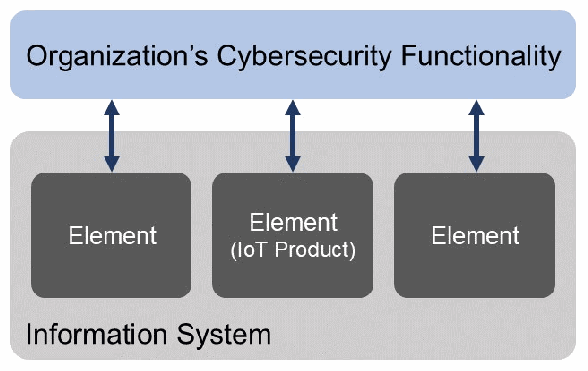
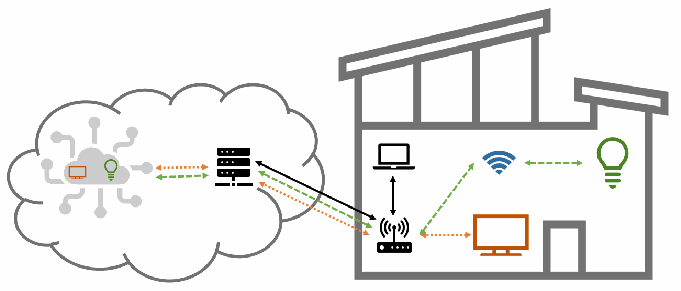
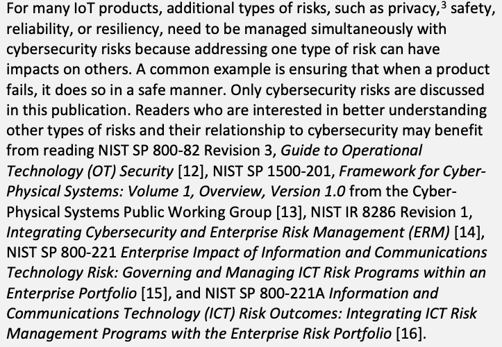
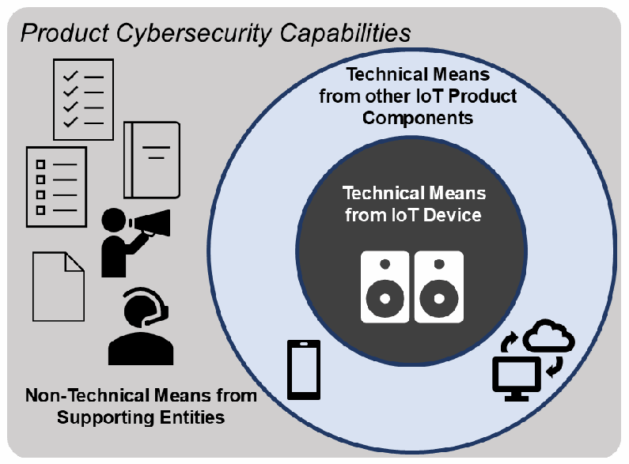
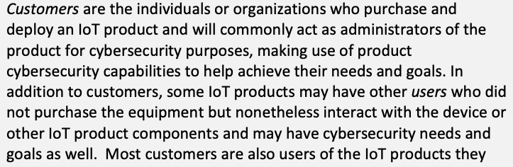
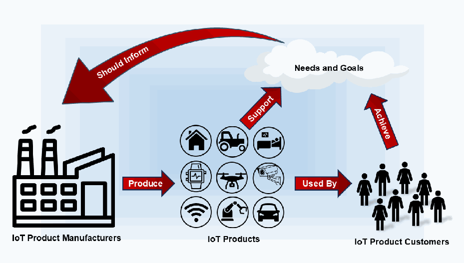
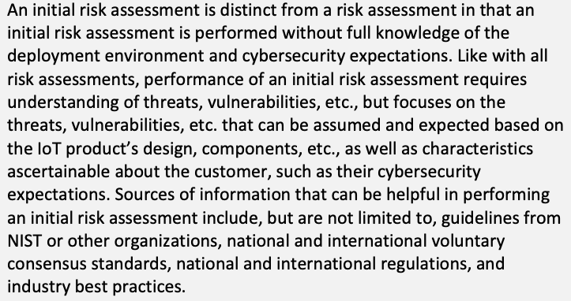
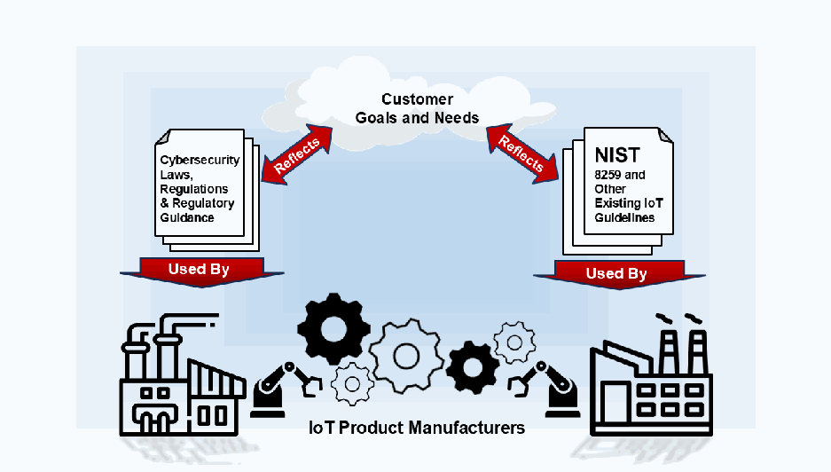
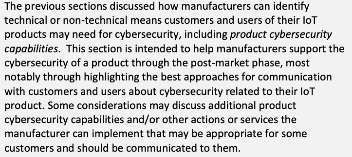

NIST IR 8259 Rev. 1 日本語訳
英語タイトル : Foundational Cybersecurity Activities for IoT Product Manufacturers日本語タイトル : IoT 製品製造者のための基礎的サイバーセキュリティ活動
公開日 : 2026-04-20
原文URL : https://csrc.nist.gov/pubs/ir/8259/r1/final
翻訳編集 : 自動生成（有志による非公式の日本語訳）, 原文取得日 : 2026-10-31, 訳文 : 496 / 497 ブロック
[要約] NIST IR 8259 Rev. 1 は、IoT 製品の製造者が、製品を顧客に販売する前に実施を検討すべき、サイバーセキュリティに関する推奨活動を説明する刊行物です。IoT 製品には、顧客（組織と個人）がサイバーセキュリティリスクの軽減に役立てられる製品サイバーセキュリティ能力が欠けていることがよくあり、製造者は必要な機能と顧客が必要とする関連情報を提供することで、IoT 製品の保護可能性を高められるとしています。製造者の活動は、IoT 製品の市場投入前の段階に影響する活動（活動 0 から 5）と、市場投入後の段階に影響する活動（活動 6 から 8）に分けて示されます。これらの基礎的サイバーセキュリティ活動は、顧客に必要なサイバーセキュリティ関連の作業を製造者が軽減する助けとなり、ひいては侵害の発生頻度と深刻度を下げることにつながるとされています。
NIST Internal Report NIST IR 8259r1
NIST 内部報告書 NIST IR 8259r1
Foundational Cybersecurity Activities for IoT Product Manufacturers
IoT 製品製造者のための基礎的サイバーセキュリティ活動
Michael Fagan Katerina N. Megas Barbara Cuthill Jeffrey Marron Brad Hoehn
Michael Fagan Katerina N. Megas Barbara Cuthill Jeffrey Marron Brad Hoehn
This publication is available free of charge from: https://doi.org/10.6028/NIST.IR.8259r1
本刊行物は次の場所から無料で入手できます: https://doi.org/10.6028/NIST.IR.8259r1
NIST Internal Report NIST IR 8259r1
NIST 内部報告書 NIST IR 8259r1
Foundational Cybersecurity Activities for IoT Product Manufacturers
IoT 製品製造者のための基礎的サイバーセキュリティ活動
Michael Fagan
Michael Fagan
Katerina N. Megas Barbara Cuthill Jeffrey Marron Applied Cybersecurity Division
Katerina N. Megas Barbara Cuthill Jeffrey Marron Applied Cybersecurity Division
Information Technology Laboratory
Information Technology Laboratory
Brad Hoehn
Brad Hoehn
Electrosoft
Electrosoft
This publication is available free of charge from: https://doi.org/10.6028/NIST.IR.8259r1
本刊行物は次の場所から無料で入手できます: https://doi.org/10.6028/NIST.IR.8259r1
April 2026
2026 年 4 月
［米国商務省の紋章。公的な標章のため、この非公式サイトには掲載していません。原本 PDF を参照してください。］
U.S. Department of Commerce Howard Lutnick, Secretary
U.S. Department of Commerce Howard Lutnick, Secretary
National Institute of Standards and Technology
National Institute of Standards and Technology
Craig Burkhardt, Acting Under Secretary of Commerce for Standards and Technology and Acting NIST Director
Craig Burkhardt, Acting Under Secretary of Commerce for Standards and Technology and Acting NIST Director
Certain equipment, instruments, software, or materials, commercial or non-commercial, are identified in this paper in order to specify the experimental procedure adequately. Such identification does not imply recommendation or endorsement of any product or service by NIST, nor does it imply that the materials or equipment identified are necessarily the best available for the purpose.
本稿では、実験手順を適切に特定するために、商用・非商用を問わず、一部の機器、計器、ソフトウェア、または材料を明示しています。このような明示は、NIST がいかなる製品やサービスも推奨または保証していることを意味せず、明示した材料や機器がその目的に最適であるとは限らないことも意味しません。
There may be references in this publication to other publications currently under development by NIST in accordance with its assigned statutory responsibilities. The information in this publication, including concepts and methodologies, may be used by federal agencies even before the completion of such companion publications. Thus, until each publication is completed, current requirements, guidelines, and procedures, where they exist, remain operative. For planning and transition purposes, federal agencies may wish to closely follow the development of these new publications by NIST.
本刊行物には、NIST が法令で定められた責務に基づいて現在策定中の他の刊行物への言及が含まれる場合があります。概念や方法論を含む本刊行物の情報は、そうした関連刊行物の完成前であっても、連邦政府機関が利用できます。したがって、各刊行物が完成するまでは、現行の要件、ガイドライン、手順がある場合は、それらが引き続き有効です。計画および移行のため、連邦政府機関は、NIST によるこれらの新しい刊行物の策定状況を注意深く追うべきです。
Organizations are encouraged to review all draft publications during public comment periods and provide feedback to NIST. Many NIST cybersecurity publications, other than the ones noted above, are available at https://csrc.nist.gov/publications.
組織は、パブリックコメント期間中にすべてのドラフト刊行物を確認し、NIST にフィードバックを提供すべきです。上記以外にも、NIST のサイバーセキュリティ関連刊行物の多くが https://csrc.nist.gov/publications で公開されています。
NIST Technical Series Policies Copyright, Use, and Licensing Statements NIST Technical Series Publication Identifier Syntax
NIST 技術シリーズの方針、著作権・利用・ライセンスに関する声明、NIST 技術シリーズ刊行物識別子の構文
Publication History Approved by the NIST Editorial Review Board on 2026-04-09 Supersedes NIST IR 8259 (May 2020) https://doi.org/10.6028/NIST.IR.8259
刊行履歴 2026-04-09 に NIST 編集審査委員会によって承認 NIST IR 8259（2020 年 5 月）に代わる刊行物 https://doi.org/10.6028/NIST.IR.8259
How to Cite this NIST Technical Series Publication Fagan M, Megas K, Cuthill B, Marron J, Hoehn B (2026) Foundational Cybersecurity Activities for IoT Product Manufacturers. (National Institute of Standards and Technology, Gaithersburg, MD), NIST Interagency or Internal Report (IR) NIST IR 8259r1. https://doi.org/10.6028/NIST.IR.8259r1
本 NIST 技術シリーズ刊行物の引用方法 Fagan M, Megas K, Cuthill B, Marron J, Hoehn B (2026) Foundational Cybersecurity Activities for IoT Product Manufacturers. (National Institute of Standards and Technology, Gaithersburg, MD), NIST Interagency or Internal Report (IR) NIST IR 8259r1. https://doi.org/10.6028/NIST.IR.8259r1
Author ORCID iDs Michael Fagan: 0000-0002-1861-2609 Katerina N. Megas: 0000-0002-2815-5448 Barbara Cuthill: 0000-0002-2588-6165 Jeffrey Marron: 0000-0002-7871-683X
著者の ORCID iD 番号 Michael Fagan: 0000-0002-1861-2609 Katerina N. Megas: 0000-0002-2815-5448 Barbara Cuthill: 0000-0002-2588-6165 Jeffrey Marron: 0000-0002-7871-683X
Contact Information iotsecurity@nist.gov
連絡先 iotsecurity@nist.gov
National Institute of Standards and Technology Attn: Applied Cybersecurity Division, Information Technology Laboratory 100 Bureau Drive (Mail Stop 2000) Gaithersburg, MD 20899-2000
National Institute of Standards and Technology Attn: Applied Cybersecurity Division, Information Technology Laboratory 100 Bureau Drive (Mail Stop 2000) Gaithersburg, MD 20899-2000
Additional Information Additional information about this publication is available at https://csrc.nist.gov/pubs/ir/8259/r1/final, including related content, potential updates, and document history.
追加情報 本刊行物に関する追加情報（関連コンテンツ、更新の可能性、文書の履歴を含む）は、https://csrc.nist.gov/pubs/ir/8259/r1/final で入手できます。
All comments are subject to release under the Freedom of Information Act (FOIA).
すべてのコメントは、情報公開法（FOIA）に基づく公開の対象となります。
Abstract
概要
Internet of Things (IoT) products often lack product cybersecurity capabilities their customers— organizations and individuals—can use to help mitigate their cybersecurity risks. Manufacturers can help their customers by improving the securability of their IoT products by providing necessary cybersecurity functionality and by providing customers with the cybersecurity-related information they need. This publication describes recommended activities related to cybersecurity that manufacturers should consider performing before their IoT products are sold to customers. These foundational cybersecurity activities can help manufacturers lessen the cybersecurity-related efforts needed by customers, which in turn can reduce the prevalence and severity of compromises.
モノのインターネット（IoT）製品には、顧客（組織と個人）がサイバーセキュリティリスクの軽減に役立てられる製品サイバーセキュリティ能力が欠けていることがよくあります。製造者は、必要なサイバーセキュリティ機能と、顧客が必要とするサイバーセキュリティ関連情報を提供することで、IoT 製品のセキュリティ保護可能性を高め、顧客を支援できます。本刊行物は、製造者が IoT 製品を顧客に販売する前に実施を検討すべき、サイバーセキュリティに関する推奨活動を説明します。これらの基礎的サイバーセキュリティ活動は、顧客が必要とするサイバーセキュリティ関連の作業を軽減する助けとなり、ひいては侵害の発生頻度と深刻度を下げることにつながります。
Keywords
キーワード
cybersecurity risk; Internet of Things (IoT); manufacturing; risk management; risk mitigation; securable computing devices; software development.
サイバーセキュリティリスク、モノのインターネット（IoT）、製造、リスク管理、リスク軽減、セキュリティ保護可能なコンピューティングデバイス、ソフトウェア開発。
Reports on Computer Systems Technology
コンピュータシステム技術に関する報告書
The Information Technology Laboratory (ITL) at the National Institute of Standards and Technology (NIST) promotes the U.S. economy and public welfare by providing technical leadership for the Nation’s measurement and standards infrastructure. ITL develops tests, test methods, reference data, proof of concept implementations, and technical analyses to advance the development and productive use of information technology. ITL’s responsibilities include the development of management, administrative, technical, and physical standards and guidelines for the cost-effective security and privacy of other than national security-related information in federal information systems.
米国国立標準技術研究所（NIST）の情報技術研究所（ITL）は、国の計測・標準インフラに技術的なリーダーシップを提供することで、米国経済と公共の福祉の向上に貢献しています。ITL は、情報技術の開発と生産的な活用を進めるため、テスト、試験方法、参照データ、概念実証の実装、技術分析を開発しています。ITL の責務には、連邦情報システムにおける国家安全保障関連以外の情報について、費用対効果の高いセキュリティとプライバシーを確保するための管理、行政、技術、物理に関する標準およびガイドラインの策定が含まれます。
Table of Contents
目次
List of Figures
図の一覧
Acknowledgments
謝辞
The authors wish to thank all contributors to this publication, including the participants in workshops and other interactive sessions; the individuals and organizations from the public and private sectors, including manufacturers from various sectors as well as several manufacturer trade organizations, who provided feedback.
著者らは、ワークショップやその他の対話型セッションの参加者、さまざまな分野の製造者や複数の製造者業界団体を含む官民の個人および組織でフィードバックを寄せてくださった方々など、本刊行物に貢献したすべての方々に感謝します。
Executive Summary
エグゼクティブサマリー
Manufacturers are creating an incredible variety and volume of internet-ready products and systems broadly known as the Internet of Things (IoT). Many of these IoT products and systems do not fit the standard definitions of information technology (IT) (e.g., smartphones, servers, laptops) that have been used as the basis for defining product cybersecurity capabilities.
製造者は、総称してモノのインターネット（IoT）として知られる、インターネットに対応した製品とシステムを、驚くほど多種多様かつ大量に生み出しています。これらの IoT 製品やシステムの多くは、製品サイバーセキュリティ能力を定義する基礎として用いられてきた、標準的な情報技術（IT）の定義（スマートフォン、サーバー、ノート PC など）には当てはまりません。
The purpose of this publication is to give manufacturers recommendations for improving the securability of their IoT products. Securability means the IoT products offer product cybersecurity capabilities—cybersecurity features or functions that the IoT devices and other product components provide through their own technical means (i.e., hardware and software) or related non-technical services from the manufacturer (i.e., vulnerability disclosure programs). An IoT product that is resilient to attacks, supports forensic analysis following an incident, recovers quickly after an incident, keeps customer data confidential and free of tampering, develops a reputation of being trustworthy, etc. is one that customers can adopt and trust. Thus, investing in producing a secure IoT product contributes to the success of the IoT product in the market, increasing innovation, protecting the nation, and supporting individuals in their daily lives. Cybersecurity of an IoT product must begin in the product planning phase when the decision-makers are able to allocate resources towards modeling and prioritizing threats, then designing and implementing effective product cybersecurity capabilities that help address these threats. Additionally, allocating resources for post-market support of the product when it’s deployed in the field goes a long way to establishing a relationship of trust with the customer. Constantly evaluating the ever-changing threat landscape, investigating security incidents, and maintaining the IoT product’s ability to remain securable in the field all help the customer manage their cybersecurity risks while also enhancing the reputation of the IoT product and its manufacturer.
本刊行物の目的は、製造者に IoT 製品のセキュリティ保護可能性を高めるための推奨事項を示すことです。セキュリティ保護可能性とは、IoT 製品が製品サイバーセキュリティ能力を備えていることを意味します。これは、IoT デバイスやその他の製品コンポーネントが自らの技術的手段（すなわちハードウェアとソフトウェア）で提供する、または製造者が提供する関連の非技術的サービス（すなわち脆弱性開示プログラム）で提供する、サイバーセキュリティの特徴や機能のことです。攻撃に対してレジリエントで、インシデント後のフォレンジック分析を支援し、インシデント後に迅速に復旧し、顧客データの機密性を保って改ざんを防ぎ、信頼できるという評判を築く、といった IoT 製品は、顧客が採用して信頼できる製品です。したがって、セキュアな IoT 製品の開発への投資は、市場における IoT 製品の成功に寄与し、イノベーションを高め、国を守り、人々の日常生活を支えることにつながります。IoT 製品のサイバーセキュリティは、意思決定者が脅威のモデリングと優先順位付けにリソースを割り当て、これらの脅威への対処に役立つ効果的な製品サイバーセキュリティ能力を設計・実装できる、製品計画の段階から始めなければなりません。さらに、製品が現場に展開された後の市場投入後の支援にリソースを割り当てることは、顧客との信頼関係の構築に大いに役立ちます。絶えず変化する脅威の状況を常に評価し、セキュリティインシデントを調査し、IoT 製品が現場でセキュリティ保護可能な状態であり続ける能力を維持することは、いずれも顧客のサイバーセキュリティリスクの管理に役立つとともに、IoT 製品とその製造者の評判も高めます。
This publication describes nine recommended foundational cybersecurity activities that manufacturers should consider performing to improve the securability of their IoT products. Six of the activities primarily impact decisions and actions performed by the manufacturer before a product is sent out for sale (pre-market), and the remaining three activities primarily impact decisions and actions performed by the manufacturer after product sale (post-market). Performing all activities can help manufacturers provide IoT products that better support the cybersecurity-related efforts needed by customers, which can reduce the prevalence and severity of IoT product compromises. These activities are intended to fit within a manufacturer’s existing development process and may already be achieved in whole or part by that existing process. They are presented sequentially and are mostly intended to be performed sequentially, but some activities and parts of activities may be able to be performed in parallel. Also, activities are not mapped to an organizational structure, and in practice these activities may touch on the roles and responsibilities of multiple individuals and departments within an IoT product manufacturer’s organization. This allows flexibility for organizations with different structures to adopt the activities and assign them appropriately within their organization. By the end of each activity, IoT product manufacturers will have an increasingly detailed and informed plan to ensure the IoT product they are developing is securable by customers.
本刊行物は、製造者が IoT 製品のセキュリティ保護可能性を高めるために実施を検討すべき、9 つの推奨される基礎的サイバーセキュリティ活動を説明します。そのうち 6 つの活動は、主に製品を販売に出す前（市場投入前）に製造者が行う意思決定と行動に影響し、残る 3 つの活動は、主に製品販売後（市場投入後）に製造者が行う意思決定と行動に影響します。すべての活動を実施することで、製造者は、顧客に必要なサイバーセキュリティ関連の作業をより良く支援する IoT 製品を提供でき、IoT 製品の侵害の発生頻度と深刻度を下げることができます。これらの活動は、製造者の既存の開発プロセスに適合するよう意図されており、その既存のプロセスですでに全部または一部が達成されている場合もあります。これらは順番に示されており、おおむね順番に実施することが想定されていますが、一部の活動や活動の一部は並行して実施できる場合があります。また、活動は組織構造に対応付けられておらず、実際にはこれらの活動が IoT 製品製造者の組織内の複数の個人や部門の役割と責任に関わる場合があります。これにより、構造の異なる組織が柔軟に活動を採用し、組織内で適切に割り当てることができます。各活動の終わりまでに、IoT 製品製造者は、開発中の IoT 製品が顧客によってセキュリティ保護可能であることを確保するための、段階的により詳細で十分な情報に基づく計画を持つことになります。
1. Introduction
1. はじめに
Manufacturers are creating an incredible variety and volume of internet-ready products and systems broadly known as the Internet of Things (IoT). Many of these IoT products and systems do not fit the standard definitions of information technology (IT) (e.g., smartphones, servers, laptops) that have been used as the basis for defining product cybersecurity capabilities. IoT products are frequently expected to be in service for decades, may have strict cost limits, could utilize an unorthodox operating environment (e.g., extreme temperatures, high humidity, significant latency) that may affect their cybersecurity posture and expectations.
製造者は、総称してモノのインターネット（IoT）として知られる、インターネットに対応した製品とシステムを、驚くほど多種多様かつ大量に生み出しています。これらの IoT 製品やシステムの多くは、製品サイバーセキュリティ能力を定義する基礎として用いられてきた、標準的な情報技術（IT）の定義（スマートフォン、サーバー、ノート PC など）には当てはまりません。IoT 製品は数十年にわたって稼働することが多く、厳しいコスト制限があり、サイバーセキュリティ態勢や期待に影響しうる特殊な動作環境（極端な温度、高湿度、大きな遅延など）を利用する場合があります。
As IoT adoption has increased over the last two decades, threats and vulnerabilities have also grown. For example, large, resilient botnets made up of compromised IoT devices (e.g., the Mirai botnet) resulted in a response from the United States Government in the form of Executive Order (EO) 13800. [1] Since that time, there’s been increasing acknowledgement of the importance of cybersecurity of IoT products and efforts to support and promote it. [2] Even today, trust in IoT, which is supported by cybersecurity, is seen as a key factor to sustaining and amplifying the adoption and innovation of IoT products. [3] Manufacturers should consider the cybersecurity of their IoT products to ensure customers can trust the products and their operation. Doing so can not only protect customers as they deploy and use IoT products, but manufacturers themselves by increasing trust in their products, supporting their reputation among customers, and reducing the likelihood of attacks on manufacturers’ internal systems. Finally, considering cybersecurity in the development and support of IoT products protects the Nation, Internet, and public at large by reducing the likelihood of attacks utilizing IoT products (e.g., botnets).
過去 20 年間に IoT の採用が増えるにつれ、脅威と脆弱性も増大してきました。たとえば、侵害された IoT デバイスで構成される大規模でレジリエントなボットネット（Mirai ボットネットなど）は、Executive Order（EO）13800 という形で米国政府の対応を招きました。[1] それ以降、IoT 製品のサイバーセキュリティの重要性と、それを支援し促進する取り組みに対する認識が高まっています。[2] 現在でも、サイバーセキュリティによって支えられる IoT への信頼は、IoT 製品の採用とイノベーションを持続・拡大するための重要な要因と見られています。[3] 製造者は、顧客が製品とその動作を信頼できるようにするため、IoT 製品のサイバーセキュリティを考慮すべきです。そうすることは、顧客が IoT 製品を展開して使用する際に顧客を守るだけでなく、製品への信頼を高め、顧客の間での評判を支え、製造者の内部システムへの攻撃の可能性を減らすことで、製造者自身も守ります。最後に、IoT 製品の開発と支援でサイバーセキュリティを考慮することは、IoT 製品を利用した攻撃（ボットネットなど）の可能性を減らすことで、国家、インターネット、そして社会全体を守ります。
1.1. Purpose and Scope
1.1. 目的と範囲
IoT products are digital equipment or systems that sense or actuate on the physical world while being connected or connectable to the Internet. IoT products in scope for this publication may be comprised of a single IoT device and nothing else or they may be comprised of the IoT device and additional IoT product components (e.g., backends, companion applications, and specialty networking/gateway hardware). An IoT device has at least one transducer (sensor or actuator) for interacting directly with the physical world and at least one network interface (e.g., Ethernet, Wi-Fi, Bluetooth, Long-Term Evolution (LTE), Zigbee, Ultra-Wideband (UWB)) for interfacing with the digital world. In this document, “components” refers to the components of an IoT product. Sub-components of an IoT device (e.g., a processor or memory) are outside the scope of this publication.
IoT 製品とは、物理世界を感知または作動させ、インターネットに接続されている、または接続可能なデジタル機器やシステムです。本刊行物の対象となる IoT 製品は、単一の IoT デバイスのみで構成される場合もあれば、IoT デバイスと追加の IoT 製品コンポーネント（バックエンド、コンパニオンアプリケーション、専用のネットワーク/ゲートウェイハードウェアなど）で構成される場合もあります。IoT デバイスは、物理世界と直接やり取りするための少なくとも 1 つのトランスデューサ（センサーまたはアクチュエータ）と、デジタル世界とのインターフェースとなる少なくとも 1 つのネットワークインターフェース（Ethernet、Wi-Fi、Bluetooth、Long-Term Evolution（LTE）、Zigbee、Ultra-Wideband（UWB）など）を備えています。本文書において「コンポーネント」とは、IoT 製品のコンポーネントを指します。IoT デバイスのサブコンポーネント（プロセッサやメモリなど）は、本刊行物の対象外です。
IoT product customers will have needs and goals, which is defined as their desires and objectives in operating their systems. Some of these needs and goals will be related to cybersecurity. For a business or other organization, their needs and goals would be their business mission and objectives, and they may have cybersecurity needs and goals that could be expressed as a profile of the NIST Cybersecurity Framework (CSF) or be driven by regulations, standards, and industry best-practices. Other customers, such as individuals using
IoT 製品の顧客にはニーズと目標があり、これは、システムの運用における願望と目的と定義されます。これらのニーズと目標の一部は、サイバーセキュリティに関連します。企業やその他の組織の場合、そのニーズと目標は事業のミッションと目的であり、NIST サイバーセキュリティフレームワーク（CSF）のプロファイルとして表現できる、あるいは規制、標準、業界のベストプラクティスによって方向づけられるサイバーセキュリティのニーズと目標を持つ場合があります。他の顧客、たとえば個人が
IoT products in their home will also have needs and goals, including those for cybersecurity, but would not generally use tools like the CSF to express them and may not have applicable regulations, standards, and industry best-practices to rely on.
自宅で IoT 製品を使用する場合にも、サイバーセキュリティを含むニーズと目標がありますが、一般にそれらを表現するために CSF のようなツールは使用せず、拠りどころとなる適用可能な規制、標準、業界のベストプラクティスがない場合もあります。
The purpose of this publication is to provide manufacturers recommendations for developing securable IoT products. Securable means that the IoT products operate in a way and offer functionality such that a customer (or other users) can effectively manage the cybersecurity of the IoT product and the system to which it’s connected. In other words, a securable IoT product is one that supports customers’ cybersecurity needs and goals. This publication provides guidelines for securable IoT products rather than secure IoT products because:
本刊行物の目的は、セキュリティ保護可能な IoT 製品を開発するための推奨事項を製造者に提供することです。セキュリティ保護可能とは、顧客（またはその他のユーザー）が IoT 製品と、それが接続されているシステムのサイバーセキュリティを効果的に管理できるように、IoT 製品が動作し、機能を提供することを意味します。言い換えると、セキュリティ保護可能な IoT 製品とは、顧客のサイバーセキュリティニーズと目標を支援する製品です。本刊行物は、セキュアな IoT 製品ではなくセキュリティ保護可能な IoT 製品のガイドラインを提供します。その理由は次のとおりです。
1.When considering that IoT products will be attached to networks and primarily managed by customers when deployed, IoT product manufacturers cannot create something that is secure in an absolute sense, but rather securable by customers in deployment.
1.IoT 製品はネットワークに接続され、展開後は主に顧客によって管理されることを考えると、IoT 製品製造者は絶対的な意味でセキュアなものを作ることはできず、展開時に顧客が保護できるものを作ることになります。
2.Secure operation of IoT products is only part of the scope of this document, and this document also addresses how IoT products should support the cybersecurity of customers and the systems they attach to.
2.IoT 製品のセキュアな運用は本文書の対象範囲の一部にすぎず、本文書は、IoT 製品が顧客と、顧客が接続するシステムのサイバーセキュリティをどのように支援すべきかも扱います。
IoT products will offer product cybersecurity capabilities that customers, including both organizations and individuals, need to secure the IoT products when used in their systems and environments. While all customers may need to take some actions to secure their IoT products (e.g., changing a default password), product cybersecurity capabilities will need to be tailored to the expected knowledge of the customer. All IoT product components will contribute to the securability of IoT products, and so product cybersecurity capabilities will include aspects of how IoT products function that ensure secure operation of the IoT product but may not be used directly by customers. For example, confidentiality measures such as encryption should be part of the IoT product’s implementation to protect data-at-rest and data-in-transit, even for data that is stored on and shared between IoT product components.
IoT 製品は、組織と個人の両方を含む顧客が、自らのシステムや環境で使用する際に IoT 製品を保護するために必要な、製品サイバーセキュリティ能力を提供します。すべての顧客が IoT 製品を保護するために何らかの対応（デフォルトパスワードの変更など）を行う必要がある場合がありますが、製品サイバーセキュリティ能力は、顧客に期待される知識に合わせて調整する必要があります。IoT 製品のすべてのコンポーネントが IoT 製品のセキュリティ保護可能性に寄与するため、製品サイバーセキュリティ能力には、IoT 製品の機能のうち、IoT 製品のセキュアな運用を確保するものの、顧客が直接使用しない場合がある側面も含まれます。たとえば、暗号化などの機密性対策は、IoT 製品のコンポーネント上に保存され、コンポーネント間で共有されるデータであっても、保存中のデータと転送中のデータを保護するために、IoT 製品の実装の一部とすべきです。
Finally, IoT product manufacturers or other supporting entities will often need to perform actions or provide services that their customers need to maintain the cybersecurity of the product. From this publication, IoT product manufacturers will learn how they can help IoT product customers with cybersecurity risk management by carefully considering which product cybersecurity capabilities to design into their products and which actions or services may also be needed to support the IoT product’s securability.
最後に、IoT 製品製造者やその他の支援主体は、顧客が製品のサイバーセキュリティを維持するために必要な行動を実施したり、サービスを提供したりする必要が生じることがよくあります。IoT 製品製造者は、本刊行物から、どの製品サイバーセキュリティ能力を製品に設計として組み込むか、また IoT 製品のセキュリティ保護可能性を支援するためにどのような行動やサービスが必要となる場合があるかを慎重に検討することで、IoT 製品の顧客のサイバーセキュリティリスク管理をどのように支援できるかを学べます。
Therefore, a securable IoT product has product cybersecurity capabilities provided over the expected life of the product by the manufacturer or other supporting entity that customers may need to mitigate common and expected cybersecurity risks related to the use of the IoT product and its connection to customers’ systems.
したがって、セキュリティ保護可能な IoT 製品とは、製造者またはその他の支援主体が製品の想定寿命にわたって提供する製品サイバーセキュリティ能力を備えた製品であり、顧客は、IoT 製品の使用と顧客のシステムへの接続に関連する、一般的で想定されるサイバーセキュリティリスクを軽減するために、この能力を必要とする場合があります。
This publication is intended to address a wide range of IoT use cases. IoT products will be used in systems and environments with many other products and system components, some of which may be IoT, while others may be conventional IT equipment. For some use cases (e.g., healthcare), the guidelines in this document can be complimented with applicable standards, regulations, and guidance.
本刊行物は、幅広い IoT のユースケースに対応することを意図しています。IoT 製品は、他の多くの製品やシステムコンポーネントがあるシステムや環境で使用され、その一部は IoT であり、他は従来の IT 機器である場合があります。一部のユースケース（ヘルスケアなど）では、本文書のガイドラインを、適用可能な標準、規制、ガイダンスで補完できます。
This publication is primarily intended to inform the manufacturing of new devices and products or products that are being redesigned. However much of the information in this publication can be used when upgrading products already in production. By implementing the activities discussed in this document, manufacturers can increase the securability of the IoT products they produce, thus improving the manufacturer’s reputation and contributing to the success of the deployment.
本刊行物は主に、新しいデバイスや製品、または再設計中の製品の製造に情報を提供することを意図しています。しかし、本刊行物の情報の多くは、すでに生産中の製品をアップグレードする際にも使用できます。本文書で説明する活動を実施することで、製造者は生産する IoT 製品のセキュリティ保護可能性を高めることができ、それにより製造者の評判が向上し、展開の成功に貢献します。
Readers do not need a technical understanding of IoT product composition and capabilities, but a basic understanding of cybersecurity principles is assumed.
読者に IoT 製品の構成や能力に関する技術的な理解は必要ありませんが、サイバーセキュリティの原則に関する基本的な理解を前提としています。
1.2. Publication Structure
1.2. 刊行物の構成
The remainder of this publication is organized into the following sections and appendices:
本刊行物の残りの部分は、次の節と附属書で構成されています。
•Section 2 provides background information needed to understand the seven recommended pre-market and post-market activities described in Sections 3 and 4.
•2 節は、3 節と 4 節で説明する 7 つの推奨される市場投入前および市場投入後の活動を理解するために必要な背景情報を提供します。
•Section 3 includes recommended manufacturer activities that primarily impact securability efforts by the manufacturer before sale (i.e., premarket). The Section 3 activities are:
•3 節は、主に販売前（すなわち市場投入前）に製造者が行うセキュリティ保護可能性の取り組みに影響する、製造者の推奨活動を含みます。3 節の活動は次のとおりです。
•Activity 0: Prioritize Cybersecurity and Maintain Cybersecurity Posture.
•活動 0: サイバーセキュリティの優先と、サイバーセキュリティ態勢の維持。
•Activity 1: Identify Expected Customers and Define Expected Use Cases.
•活動 1: 想定顧客の特定と、想定ユースケースの定義。
•Activity 2: Research Customer Cybersecurity Needs and Goals.
•活動 2: 顧客のサイバーセキュリティニーズと目標の調査。
•Activity 3: Determine Appropriate Means to Support Customer Needs and Goals in the Context of the IoT Product.
•活動 3: IoT 製品の文脈で顧客のニーズと目標を支援する適切な手段の決定。
•Activity 4: Define IoT Product Cybersecurity Capabilities Based on Appropriate Means.
•活動 4: 適切な手段に基づく IoT 製品のサイバーセキュリティ能力の定義。
•Activity 5: Plan for Adequate Support of Customer Needs and Goals.
•活動 5: 顧客のニーズと目標を十分に支援するための計画。
•Section 4 includes recommended manufacturer activities that primarily impact securability efforts by the manufacturer after sale (i.e., post-market). The Section 4 activities are:
•4 節は、主に販売後（すなわち市場投入後）に製造者が行うセキュリティ保護可能性の取り組みに影響する、製造者の推奨活動を含みます。4 節の活動は次のとおりです。
•Activity 6: On-Going Support of Product Cybersecurity through-out the Lifecyle and through End-of-Life.
•活動 6: ライフサイクル全体と使用終了時までの製品サイバーセキュリティの継続的な支援。
•Activity 7: Define Approaches for Communicating to Customers.
•活動 7: 顧客への伝達方法の定義。
•Activity 8: Decide What to Communicate to Customers and How to Communicate It.
•活動 8: 顧客に何をどのように伝えるかの決定。
•Section 5 provides a conclusion for the publication.
•5 節は、本刊行物の結論を示します。
•The References section lists the references for the publication.
•参考文献の節は、本刊行物の参考文献を一覧にしています。
•Appendix A provides a list of acronyms and abbreviations used in the publication.
•附属書 A は、本刊行物で使用する頭字語と略語の一覧を示します。
•Appendix B contains a glossary of selected terms used in the publication.
•附属書 B は、本刊行物で使用する用語のうち選択したものの用語集を含みます。
•Appendix C presents changes that were made to the original NIST IR 8259 report in writing this Initial Public Draft.
•附属書 C は、この Initial Public Draft の作成にあたり、元の NIST IR 8259 報告書に加えられた変更を示します。
2. Background
2. 背景
This section provides an overview of the background concepts needed to understand the rest of the publication.
本節は、本刊行物の残りの部分を理解するために必要な背景概念の概要を示します。
2.1. Product Cybersecurity and System Cybersecurity
2.1. 製品のサイバーセキュリティとシステムのサイバーセキュリティ
The following discussion uses NIST’s prior work on cybersecurity such as the NIST Cybersecurity Framework (CSF) and Risk Management Framework (RMF). The intent is not to suggest all IoT product manufacturers must consider cybersecurity from the same perspective as large enterprise organizations or the federal government. These frameworks are adaptable to a broad range of organizations. The point of using these frameworks is to clarify the perspective on cybersecurity used in this publication that should be considered by all IoT product manufacturers: product cybersecurity.
以下の議論は、NIST サイバーセキュリティフレームワーク（CSF）やリスクマネジメントフレームワーク（RMF）など、NIST のサイバーセキュリティに関するこれまでの成果を用います。すべての IoT 製品製造者が、大企業組織や連邦政府と同じ視点でサイバーセキュリティを考慮しなければならないと示唆する意図はありません。これらのフレームワークは、幅広い組織に適応できます。これらのフレームワークを用いる目的は、すべての IoT 製品製造者が考慮すべき、本刊行物で用いるサイバーセキュリティの視点、すなわち製品サイバーセキュリティを明確にすることです。
NIST guidelines, including this publication, take a risk-based approach to cybersecurity. In this context, cybersecurity risk is defined by the RMF as “a measure of the extent to which an entity is threatened by a potential circumstance or event, and typically a function of: (i) the adverse impacts that would arise if the circumstance or event occurs; and (ii) the likelihood of occurrence.” [4] In general, cybersecurity risks are “those risks that arise from the loss of confidentiality, integrity, or availability of information or information systems and reflect the potential adverse impacts to organizational operations (including mission, functions, image, or reputation), organizational assets, individuals, other organizations, and the Nation.” [4] As such, tools such as the NIST CSF provide guidelines for organizations to manage cybersecurity risks related to the systems they use. A risk-based approach to system cybersecurity points organizations to consider their system(s) in totality to determine the applicable cybersecurity risks that must be mitigated via cybersecurity controls, which are “the safeguards or countermeasures prescribed for an information system or an organization to protect the confidentiality, integrity, and availability of the system and its information.” [5] The controls implemented, outcomes targeted, or other actions taken related to cybersecurity could be generally referred to as an organization’s cybersecurity functionality.
本刊行物を含む NIST のガイドラインは、サイバーセキュリティに対してリスクベースのアプローチをとります。この文脈で、サイバーセキュリティリスクは、RMF において「ある主体が潜在的な状況や事象によって脅かされる程度の尺度であり、通常は (i) その状況や事象が発生した場合に生じる悪影響と、(ii) 発生の可能性の関数」と定義されています。[4] 一般に、サイバーセキュリティリスクとは「情報または情報システムの機密性、完全性、可用性の喪失から生じ、組織の運用（ミッション、機能、イメージ、評判を含む）、組織の資産、個人、他の組織、国家に対する潜在的な悪影響を反映するリスク」です。[4] そのため、NIST CSF のようなツールは、組織が使用するシステムに関連するサイバーセキュリティリスクを管理するためのガイドラインを提供します。システムのサイバーセキュリティに対するリスクベースのアプローチは、組織に自らのシステムを全体として考慮させ、サイバーセキュリティ管理策（「システムとその情報の機密性、完全性、可用性を保護するために、情報システムまたは組織に対して規定される保護措置または対策」）によって軽減しなければならない該当のサイバーセキュリティリスクを判断させます。[5] サイバーセキュリティに関連して実装された管理策、目標とされた成果、その他とられた行動は、総称して組織のサイバーセキュリティ機能と呼ぶことができます。

「Organization’s Cybersecurity Functionality」（組織のサイバーセキュリティ機能）の箱が、「Information System」（情報システム）の箱の中にある3つの要素（Element、Element (IoT Product)、Element）と双方向の矢印でつながっています。
Figure 1. Relationship of organizational information system elements to an organization's cybersecurity.
図 1. 組織の情報システム要素と組織のサイバーセキュリティとの関係。
Manufacturers should take a risk-based approach towards the cybersecurity of the products they make. Although risk-based cybersecurity generally considers the risks faced by an entire information system, manufacturers may produce individual elements that are used with other products to create information systems. This is because systems are created by interconnecting various products such as personal computers, mobile devices, servers, networking equipment, and various peripherals including an increasing number of IoT products with their components (e.g., devices, mobile apps). As shown in Fig. 1, there are dependencies that must be met by elements of an information system in order for cybersecurity functionality to be feasibly or effectively implemented by the manager and owner of the information system. For example, how can access control be enforced if a device on the network does not allow a default password to be changed? In some instances, new controls such as network segmentation can be implemented, but not in all cases and not without additional cost and system complexity. Therefore, there can be value to viewing cybersecurity from the product perspective, which takes into account the relationship of system elements with the overall system, but also the limitations of information that can be known when assessing risks. When taking this product perspective, assessment of risks is limited to those related to the product, while assumptions may have to be made about expected customers and how they secure their systems. This publication provides risk-based cybersecurity guidelines from the product perspective targeted at IoT product manufacturers.
製造者は、自らが製造する製品のサイバーセキュリティに対して、リスクベースのアプローチをとるべきです。リスクベースのサイバーセキュリティは一般に、情報システム全体が直面するリスクを考慮しますが、製造者は、他の製品と組み合わせて情報システムを構成する個々の要素を製造する場合があります。これは、システムがパーソナルコンピュータ、モバイルデバイス、サーバー、ネットワーク機器、そして（デバイスやモバイルアプリなどの）コンポーネントを伴う増え続ける IoT 製品を含むさまざまな周辺機器など、多様な製品を相互接続して構成されるためです。図 1 に示すように、情報システムの管理者と所有者がサイバーセキュリティ機能を現実的に、または効果的に実装できるようにするために、情報システムの要素が満たさなければならない依存関係があります。たとえば、ネットワーク上のデバイスがデフォルトパスワードの変更を許可しない場合、アクセス制御をどのように実施できるでしょうか。場合によってはネットワークのセグメント化などの新しい管理策を実装できますが、すべての場合ではなく、追加のコストとシステムの複雑さを伴います。したがって、サイバーセキュリティを製品の視点から見ることには価値があります。これは、システム要素と全体のシステムとの関係を考慮に入れる一方で、リスクを評価する際に知りうる情報の限界も考慮するものです。この製品の視点をとる場合、リスクの評価は製品に関連するものに限定され、想定顧客と、顧客が自らのシステムをどのように保護するかについては、前提を置く必要が生じる場合があります。本刊行物は、IoT 製品製造者を対象とした、製品の視点からのリスクベースのサイバーセキュリティガイドラインを提供します。
2.2. Composition of IoT Products
2.2. IoT 製品の構成
IoT products can have many compositions. Some may only have an IoT device and may or may not require additional IoT product components to operate, but many IoT products across many use cases require additional components such as backends, companion applications, and specialty networking/gateway hardware. In some use cases, such as home IoT applications, it is common for IoT devices to require other IoT product components to operate, but IoT products in enterprise and industrial use cases can also utilize multi-component IoT product designs. The need for additional IoT product components to support an IoT device can be driven by operational needs. For example, an IoT device may lack the ability to accommodate an appropriate human-user interface. In that situation, individuals will often have to interact with a companion application that is installed on a smartphone.
IoT 製品にはさまざまな構成があります。IoT デバイスのみで構成され、動作に追加の IoT 製品コンポーネントを必要とする場合も必要としない場合もありますが、多くのユースケースにわたる多くの IoT 製品は、バックエンド、コンパニオンアプリケーション、専用のネットワーク/ゲートウェイハードウェアなどの追加コンポーネントを必要とします。家庭用 IoT アプリケーションなど一部のユースケースでは、IoT デバイスが動作のために他の IoT 製品コンポーネントを必要とするのが一般的ですが、企業や産業用のユースケースの IoT 製品も、複数のコンポーネントから成る IoT 製品設計を利用できます。IoT デバイスを支援する追加の IoT 製品コンポーネントの必要性は、運用上のニーズによって生じる場合があります。たとえば、IoT デバイスには適切なユーザーインターフェースを備える能力がない場合があります。そのような状況では、個人はスマートフォンにインストールされたコンパニオンアプリケーションを操作しなければならないことがよくあります。

クラウドにつながった家庭内ネットワークの図です。家の中では、無線のシンボルが付いたルーターがノートパソコン、テレビ（橙色）、Wi-Fi ハブを介した電球（緑色）につながり、破線の矢印がデータの経路を示しています。ルーターはクラウド内のサーバーにつながっており、そのサーバーはテレビと電球のアイコンに対応するバックエンドサービスをホストしています。図中に文字はありません。
Figure 2. Example of a network showing multiple IoT products based around different IoT devices which are supported by various kinds of IoT product components.
図 2. さまざまな種類の IoT 製品コンポーネントに支えられた、異なる IoT デバイスを中心とする複数の IoT 製品を示すネットワークの例。
Figure 2 shows how IoT product architectures can vary when viewed in an example deployment environment. Two different IoT products are shown with different IoT devices that both utilize a backend but use different architectures to do so: one IoT device (i.e., the orange television) connects directly to the deployment environments’ networking resources while the other (i.e., the green light bulb) utilizes a specialty gateway to convert data from the device into networking packets for transmission. While the IoT devices, backends, and networking hardware specific to an IoT product would all be considered IoT product components of their respective products, other equipment (e.g., networking equipment), though used by IoT product components, are not considered IoT product components. Beyond networking equipment, other devices will likely be present on the network that would also not be considered IoT product components. That said, some of these devices (e.g., personal computers, smartphones) may host IoT product components (e.g., mobile apps) in the form of application code used to interface with the product.
図 2 は、展開環境の例で見た場合に IoT 製品のアーキテクチャがどのように異なりうるかを示しています。異なる IoT デバイスを持つ 2 つの IoT 製品が示されており、どちらもバックエンドを利用していますが、利用するアーキテクチャが異なります。一方の IoT デバイス（オレンジ色のテレビ）は展開環境のネットワークリソースに直接接続し、他方（緑色の電球）は、デバイスからのデータを伝送用のネットワークパケットに変換する専用ゲートウェイを利用します。IoT 製品に固有の IoT デバイス、バックエンド、ネットワークハードウェアは、いずれもそれぞれの製品の IoT 製品コンポーネントと見なされますが、IoT 製品コンポーネントによって使用される他の機器（ネットワーク機器など）は、IoT 製品コンポーネントとは見なされません。ネットワーク機器以外にも、ネットワーク上にはおそらく他のデバイスが存在し、それらも IoT 製品コンポーネントとは見なされません。ただし、これらのデバイスの一部（パーソナルコンピュータ、スマートフォンなど）は、製品とやり取りするために使用されるアプリケーションコードの形で、IoT 製品コンポーネント（モバイルアプリなど）をホストする場合があります。
Determining which components are part of an IoT product and which are not should be driven by whether removal of or disconnection from the component would break IoT product functionality. For example, a manufacturer that designs an IoT product with a device requiring a connection to software hosted in a backend cloud to function should consider that backend as part of the IoT product. IoT product components can take any form of hardware or software, but most IoT product components will fit one of the following descriptions:1
どのコンポーネントが IoT 製品の一部で、どれがそうでないかは、そのコンポーネントを取り除いたり切断したりした場合に IoT 製品の機能が損なわれるかどうかによって判断すべきです。たとえば、動作のためにバックエンドのクラウド上でホストされるソフトウェアへの接続を必要とするデバイスを持つ IoT 製品を設計する製造者は、そのバックエンドを IoT 製品の一部と見なすべきです。IoT 製品コンポーネントはハードウェアまたはソフトウェアのどのような形態でもとりえますが、ほとんどの IoT 製品コンポーネントは、次のいずれかの説明に当てはまります。1
•IoT device – local equipment with at least one transducer (i.e., sensor or actuator) and at least one network interface.
•IoT デバイス – 少なくとも 1 つのトランスデューサ（センサーまたはアクチュエータ）と少なくとも 1 つのネットワークインターフェースを備えたローカル機器。
•Specialty networking/gateway hardware – local equipment used to aggregate, translate, forward, or distribute data related to the IoT product across networks (e.g., a hub within the system where the IoT device is used).
•専用のネットワーク/ゲートウェイハードウェア – IoT 製品に関連するデータをネットワーク間で集約、変換、転送、または配信するために使用されるローカル機器（IoT デバイスが使用されるシステム内のハブなど）。
•Companion application software – code executed on local equipment outside of the IoT product boundary (e.g., personal computer, smartphone) that interfaces with other IoT product components (e.g., a mobile app for communicating with the IoT device).
•コンパニオンアプリケーションソフトウェア – IoT 製品の境界外のローカル機器（パーソナルコンピュータ、スマートフォンなど）上で実行され、他の IoT 製品コンポーネントとやり取りするコード（IoT デバイスと通信するためのモバイルアプリなど）。
•Backends – remote service that supports one or more IoT product components (e.g., a cloud service, or multiple services, that may store and/or process data from the IoT device).
•バックエンド – 1 つ以上の IoT 製品コンポーネントを支援するリモートサービス（IoT デバイスからのデータを保存または処理する、1 つまたは複数のクラウドサービスなど）。
2.3. Entities in an IoT Product Ecosystem
2.3. IoT 製品エコシステムの主体
All technology, including IoT products, is created for practical purposes, namely to provide entities with some utility. Entities are individuals or organizations, and with respect to IoT products, there are several entities to consider. Manufacturers, sometimes referred to as developers, are entities who create IoT products from hardware and software. Customers are entities who use IoT products. Other entities include, but are not limited to:
IoT 製品を含むすべての技術は、実用的な目的、すなわち主体に何らかの有用性を提供するために作られます。主体とは個人または組織であり、IoT 製品に関しては、考慮すべき主体がいくつかあります。製造者（開発者と呼ばれることもあります）は、ハードウェアとソフトウェアから IoT 製品を作る主体です。顧客は、IoT 製品を使用する主体です。その他の主体には次のようなものがありますが、これらに限られません。
•Suppliers – These entities sell or otherwise provide resources, hardware, software, etc. to other entities. For example, big box stores, online retailers, and small electronic boutique stores are suppliers of home IoT products. Sometimes, manufacturers may be suppliers as well if they directly sell to other entities. Manufacturers will also acquire resources, hardware, software, etc. from suppliers to develop and produce IoT products as part of their supply chain.
•供給者 – 他の主体にリソース、ハードウェア、ソフトウェアなどを販売または提供する主体。たとえば、大型店、オンライン小売業者、小規模な電子機器専門店は、家庭用 IoT 製品の供給者です。製造者が他の主体に直接販売する場合は、製造者が供給者でもあることがあります。製造者は、サプライチェーンの一環として、IoT 製品を開発・生産するために、供給者からリソース、ハードウェア、ソフトウェアなども調達します。
•Installer – These entities deploy hardware, software, etc. into their operational environments. For example, building management and security systems may be deployed by professional technicians who select and deploy IoT and other products throughout a building. Installers may be performing these actions on their own behalf or as a service for others.
•設置者 – ハードウェア、ソフトウェアなどを運用環境に展開する主体。たとえば、ビル管理システムや警備システムは、IoT その他の製品を選定してビル全体に展開する専門の技術者によって展開される場合があります。設置者は、これらの作業を自分自身のために行う場合もあれば、他者に対するサービスとして行う場合もあります。
•Maintainer – These entities maintain the hardware and software in the IoT product. For software this would include taking information about newly discovered vulnerabilities and providing software updates or other recommendations to maintain the cybersecurity of the product. For hardware, this would include maintaining the physical integrity of the device including replacing any failing elements.
•保守者 – IoT 製品のハードウェアとソフトウェアを保守する主体。ソフトウェアの場合、新たに発見された脆弱性に関する情報を取得し、製品のサイバーセキュリティを維持するためにソフトウェア更新やその他の推奨事項を提供することが含まれます。ハードウェアの場合、故障した要素の交換を含め、デバイスの物理的な完全性を維持することが含まれます。
IoT product ecosystems can be complex and include many different entities. Note that entities could be organizations or individuals. Also, entities in the ecosystem may not always be introduced by any direct action but could become part of the IoT product’s ecosystem by happenstance or necessity. There may be instances in which an individual other than the customer may be introduced to the IoT product’s ecosystem. One example includes individuals that interact with the IoT product, even if the interaction is limited to being the subject of a sensor or involved in an actuation. In practical terms, this could include individuals who enter a space where the owner of the space has deployed IoT cameras that record and process data on all individuals in the space. There may also be organizational entities introduced to an IoT product’s ecosystem by necessity, such as when an IoT product employs the Matter protocol, which allows IoT products from different manufacturers to interoperate and share backend support.
IoT 製品エコシステムは複雑になる場合があり、多くの異なる主体が含まれます。主体は、組織の場合も個人の場合もあることに注意してください。また、エコシステム内の主体は、必ずしも直接の働きかけによって導入されるとは限らず、偶然または必要に迫られて IoT 製品のエコシステムの一部となる場合があります。顧客以外の個人が IoT 製品のエコシステムに加わる場合もあります。一例は、やり取りがセンサーの対象となることや作動に関与することに限られる場合も含め、IoT 製品とやり取りする個人です。実際には、空間の所有者が、空間内のすべての個人に関するデータを記録・処理する IoT カメラを展開している空間に入る個人が含まれます。また、必要に迫られて IoT 製品のエコシステムに加わる組織の主体もありえます。たとえば、異なる製造者の IoT 製品が相互運用し、バックエンドの支援を共有できる Matter プロトコルを IoT 製品が採用する場合です。
Not all entities that interact with IoT products necessarily have the same impact on and relationship with cybersecurity related to the IoT product. Generally, the further from the customer-manufacturer nexus an entity lies, the less impact those entities will have on the IoT product’s cybersecurity. Direct entities, such as those brought into the IoT product’s ecosystem by the customer (e.g., other explicit IoT product users) and the manufacturer (e.g., IoT product component developers) will have more impact than the indirect entities discussed in the previous paragraph. With their central role in developing an IoT product, manufacturers have significant opportunity to impact securability.
IoT 製品とやり取りするすべての主体が、IoT 製品に関連するサイバーセキュリティに対して必ずしも同じ影響や関係を持つわけではありません。一般に、主体が顧客と製造者の結びつきから遠いほど、その主体が IoT 製品のサイバーセキュリティに与える影響は小さくなります。顧客が IoT 製品のエコシステムに加えた主体（他の明示的な IoT 製品ユーザーなど）や製造者が加えた主体（IoT 製品コンポーネントの開発者など）といった直接の主体は、前段落で論じた間接の主体よりも大きな影響を持ちます。IoT 製品の開発における中心的な役割を担う製造者には、セキュリティ保護可能性に影響を与える大きな機会があります。
2.4. The Role of the Manufacturer in Cybersecurity
2.4. サイバーセキュリティにおける製造者の役割
The pre-market phase of an IoT product’s life encompasses what the manufacturer does before the product is marketed and sold to customers. Any actions the manufacturer takes for an IoT product after it is sold, such as addressing vulnerabilities, delivering updated or new capabilities, or providing cybersecurity information to customers, are considered part of the post-market phase. Manufacturers are generally best able to identify and incorporate plans for the product cybersecurity capabilities their product will have early in the pre-market phase.
IoT 製品のライフサイクルにおける市場投入前の段階は、製品が市場に投入されて顧客に販売される前に製造者が行うことを指します。製品の販売後に製造者が IoT 製品について行う行動（脆弱性への対処、更新された能力や新しい能力の提供、顧客へのサイバーセキュリティ情報の提供など）は、市場投入後の段階の一部と見なされます。製造者は一般に、市場投入前の早い段階で、自社製品が備えるサイバーセキュリティ能力の計画を特定し、製品に組み込むのに最も適した立場にあります。
Manufacturers should consider cybersecurity, including selecting product cybersecurity capabilities, as early in the pre-market phase as possible. Delaying decisions about product cybersecurity capabilities to later in the pre-market phase can create difficulty since making design or implementation changes is usually more complicated, costly, and potentially delay the product launch. Once a product is on the market, many cybersecurity changes may no longer be viable because of hardware constraints, and those that are viable may be much more difficult than if they had been done pre-market. Manufacturers may still have a role in the securability of their IoT products during the post-market phase by providing or ensuring other supporting entities provide non-technical supporting capabilities (e.g., help develop or deliver software updates).
製造者は、製品サイバーセキュリティ能力の選定を含め、サイバーセキュリティを市場投入前の段階のできるだけ早い時期に考慮すべきです。製品サイバーセキュリティ能力に関する決定を市場投入前の段階の後半に先送りすると、設計や実装の変更が通常はより複雑でコストがかかり、製品の発売が遅れる可能性があるため、困難が生じることがあります。製品が市場に出た後は、ハードウェアの制約により、多くのサイバーセキュリティの変更がもはや実行可能でなくなる場合があり、実行可能な変更も、市場投入前に行う場合よりはるかに困難になる可能性があります。製造者は、非技術的な支援能力（ソフトウェア更新の開発や提供の支援など）を提供するか、他の支援主体が提供することを確保することで、市場投入後の段階でも、IoT 製品のセキュリティ保護可能性に関わる役割を担う場合があります。
Sections 3 and 4 of this publication describe cybersecurity activities and related planning that manufacturers should consider performing when developing and supporting their IoT products. Section 3 covers activities that primarily impact the pre-market phase, while Section 4 discusses activities that primarily impact the post-market phase. The activities in Sections 3 and 4 focus on key cybersecurity activities and represent a subset of what manufacturers may need to do during their product development process and are not intended to be comprehensive. For example, manufacturers will also find it easier to design and produce securable IoT products if they ensure their workforce has the necessary skills to perform the activities.
本刊行物の 3 節と 4 節は、製造者が IoT 製品の開発と支援にあたって実施を検討すべきサイバーセキュリティ活動と関連する計画を説明します。3 節は主に市場投入前の段階に影響する活動を扱い、4 節は主に市場投入後の段階に影響する活動を論じます。3 節と 4 節の活動は主要なサイバーセキュリティ活動に焦点を当てており、製造者が製品開発プロセスで行う必要があるかもしれないことの一部であって、網羅的であることは意図していません。たとえば、製造者は、従業員がこれらの活動を実施するために必要なスキルを持つようにすれば、セキュリティ保護可能な IoT 製品の設計と製造も容易になります。
Table 1. Recommended manufacturer activities discussed in this publication.
表 1. 本刊行物で論じる製造者の推奨活動。
| Activity | Example Output | |
|---|---|---|
| Pre-Market Phase | Activity 0: Prioritize Cybersecurity and Maintain Cybersecurity Posture | A secure organizational network, development process, and culture |
| Activity 1: Identify Expected Customers and Define Expected Use Cases | List of expected customers of the IoT product; report of how customers are expected to use the product | |
| Activity 2: Research Customer Cybersecurity Needs and Goals | An understanding of customer cybersecurity needs and goals; standards and other documents that express the customer needs and goals | |
| Activity 3: Determine Appropriate Means to Support Customer Needs and Goals | Insights into appropriate means to support customers’ cybersecurity needs and goals; conception of known requirements that could impact appropriate means, such as physical product constraints or conflicting customer expectations | |
| Activity 4: Define IoT Product Cybersecurity Capabilities Based on Appropriate Means | List of IoT product cybersecurity capabilities that could be defined by appropriate means, even if means or use of means vary for different customers or use cases | |
| Activity 5: Plan for Adequate Support of Customer Needs and Goals | List of hardware and software needed to support device cybersecurity capabilities; plans and procedures to implement non-technical capabilities | |
| Product Goes to Market | IoT product for sale or sold | |
| Post-Market Phase | Activity 6: On-Going Support of Product Cybersecurity through-out the Lifecyle End-of-Life | Active vulnerability remediation program; available product support |
| Activity 7: Define Approaches for Communicating to Customers | List of communication methods appropriate for cybersecurity context related to the IoT product | |
| Activity 8: Decide What to Communicate to Customers and How to Communicate It | Regular customer notifications; regulatory and other applicable disclosures |
| 活動 | 出力例 | |
|---|---|---|
| 市場投入前の段階 | 活動 0: サイバーセキュリティの優先と、サイバーセキュリティ態勢の維持 | セキュアな組織ネットワーク、開発プロセス、文化 |
| 活動 1: 想定顧客の特定と、想定ユースケースの定義 | IoT 製品の想定顧客の一覧、顧客による製品の想定される使い方の報告書 | |
| 活動 2: 顧客のサイバーセキュリティニーズと目標の調査 | 顧客のサイバーセキュリティニーズと目標の理解、顧客のニーズと目標を表現した標準その他の文書 | |
| 活動 3: 顧客のニーズと目標を支援する適切な手段の決定 | 顧客のサイバーセキュリティニーズと目標を支援する適切な手段についての洞察、製品の物理的制約や相反する顧客の期待など、適切な手段に影響しうる既知の要件の整理 | |
| 活動 4: 適切な手段に基づく IoT 製品のサイバーセキュリティ能力の定義 | 適切な手段によって定義できる IoT 製品サイバーセキュリティ能力の一覧（顧客やユースケースによって手段や手段の使い方が異なる場合も含む） | |
| 活動 5: 顧客のニーズと目標を十分に支援するための計画 | デバイスのサイバーセキュリティ能力の支援に必要なハードウェアとソフトウェアの一覧、非技術的能力を実装するための計画と手順 | |
| 製品の市場投入 | 販売用または販売済みの IoT 製品 | |
| 市場投入後の段階 | 活動 6: 製品寿命末期までの継続的な製品サイバーセキュリティ支援 | 積極的な脆弱性修正プログラム、利用可能な製品サポート |
| 活動 7: 顧客への伝達方法の定義 | IoT 製品に関連するサイバーセキュリティの文脈に適した伝達方法の一覧 | |
| 活動 8: 顧客に何をどのように伝えるかの決定 | 定期的な顧客への通知、規制その他の適用される開示 |
Table 1 shows the foundational cybersecurity activities covered in this publication, arranged by the phase in which the activity’s output will primarily impact product securability. Example outputs are provided for each of the recommended activities. As indicated in the table, activities highlighted for each phase build on each other within that phase such that each pre-market activity will build on the outcomes of prior activities. While the activities recommended for the post-market phase may use artifacts and outcomes from pre-market activities, they may also draw on other information sources. The moment at which a product is considered to have “gone to market” will vary by use case, manufacturer, and circumstance, but is defined as when the IoT device associated with the IoT product is no longer under the control of the manufacturer (i.e., when it has been released to an intermediary, such as a retailer, or to end-customers). Activities primarily impacting the post-market phase, though intended to help the securability of IoT products after or as they are sold (e.g., by helping inform customers how a device can help meet their cybersecurity needs and goals, which may or may not include risk mitigation goals), should be planned for during the pre-market phase.
表 1 は、本刊行物で扱う基礎的サイバーセキュリティ活動を、活動の出力が主に製品のセキュリティ保護可能性に影響する段階ごとに整理して示しています。推奨される各活動について、出力例を示しています。表に示すとおり、各段階で強調された活動は、その段階内で互いに積み上がるため、市場投入前の各活動は、それ以前の活動の成果の上に構築されます。市場投入後の段階で推奨される活動は、市場投入前の活動の成果物や成果を利用する場合がありますが、他の情報源も活用する場合があります。製品が「市場に出た」と見なされる時点は、ユースケース、製造者、状況によって異なりますが、IoT 製品に関連する IoT デバイスが製造者の管理下を離れた時（すなわち、小売業者などの仲介者またはエンドカスタマーに引き渡された時）と定義されます。主に市場投入後の段階に影響する活動は、販売後または販売時の IoT 製品のセキュリティ保護可能性を支援することを意図したもの（たとえば、デバイスが顧客のサイバーセキュリティニーズと目標（リスク軽減の目標を含む場合も含まない場合もあります）の達成にどう役立つかを顧客に知らせること）ですが、市場投入前の段階で計画しておくべきです。
2.5. IoT Product Customer Cybersecurity Needs and Goals
2.5. IoT 製品の顧客のサイバーセキュリティニーズと目標
Improving the securability of an IoT product means helping customers meet their cybersecurity needs and goals. All customers will have cybersecurity needs and goals, but the specific cybersecurity needs and goals for a customer of an IoT product will be dependent on the threats faced by the product and risks potentially associated with the product. The needs and goals will also be framed and informed by the customer’s knowledge, expectations, etc. Addressing cybersecurity needs and goals should be risk-based. Even customers without formal risk mitigation goals, such as home consumers, will care about cybersecurity threats and often have informal and indirect cybersecurity goals. At the least, customers will want their IoT products to provide desired functionality as expected (e.g., automatically), which is dependent on addressing threats the product faces that could impact functionality. Thus, customers may expect that adequate cybersecurity measures are available or in place to protect them and the product’s desired functionality.
IoT 製品のセキュリティ保護可能性を高めることは、顧客がサイバーセキュリティニーズと目標を達成するのを支援することを意味します。すべての顧客にはサイバーセキュリティニーズと目標がありますが、IoT 製品の顧客に固有のサイバーセキュリティニーズと目標は、製品が直面する脅威と、製品に関連しうるリスクによって異なります。ニーズと目標は、顧客の知識や期待などによっても枠づけられ、方向づけられます。サイバーセキュリティニーズと目標への対処は、リスクベースであるべきです。家庭の消費者のように、正式なリスク軽減の目標を持たない顧客でも、サイバーセキュリティの脅威を気にかけ、非公式で間接的なサイバーセキュリティの目標を持つことがよくあります。少なくとも、顧客は IoT 製品が望ましい機能を期待どおり（自動的になど）提供することを望みます。これは、機能に影響しうる製品が直面する脅威への対処に依存します。したがって、顧客は、自らと製品の望ましい機能を保護するために、適切なサイバーセキュリティ対策が利用可能であるか、導入されていることを期待する場合があります。
Risk-based cybersecurity guidelines intended to be used by customers can provide insights into cybersecurity needs and goals for customers. Based on an analysis of existing NIST publications such as SP 800-53 [5] and the Cybersecurity Framework [8] and the characteristics of IoT devices, NIST IR 8228 [9] presents common enterprise risk mitigation areas (e.g., access management, data protection, vulnerability management), and thus common cybersecurity needs and goals for IoT product customers include:
顧客が使用することを意図したリスクベースのサイバーセキュリティガイドラインは、顧客のサイバーセキュリティニーズと目標についての洞察を提供できます。SP 800-53 [5] やサイバーセキュリティフレームワーク [8] などの既存の NIST 刊行物と IoT デバイスの特性の分析に基づき、NIST IR 8228 [9] は、一般的な企業のリスク軽減分野（アクセス管理、データ保護、脆弱性管理など）を示しており、したがって IoT 製品の顧客に共通するサイバーセキュリティニーズと目標には次のものがあります。
•Asset Management: Maintain a current, accurate inventory of all IoT products and their relevant characteristics throughout the products’ lifecycles2 in order to use that information for cybersecurity risk management purposes. Being able to distinguish each IoT product deployment from all others is needed for the other common risk mitigation areas, such as vulnerability management, access management, data protection, and incident detection.
•資産管理: サイバーセキュリティリスク管理の目的でその情報を使用するため、製品のライフサイクル2全体にわたって、すべての IoT 製品とその関連する特性について、最新かつ正確なインベントリを維持します。脆弱性管理、アクセス管理、データ保護、インシデント検知といった、他の共通のリスク軽減分野には、各 IoT 製品の展開を他のすべての展開と区別できることが必要です。
•Vulnerability Management: Identify and mitigate known vulnerabilities in the software of IoT devices and other IoT product components throughout the IoT products’ lifecycles in order to reduce the likelihood and ease of exploitation and compromise. Vulnerabilities can be eliminated by installing updates (e.g., patches) and changing configuration settings. Updates can also correct IoT product operational problems, which can improve availability, reliability, performance, and other aspects of product operation. Customers often want to alter configuration settings for a variety of reasons, including improving or customizing cybersecurity, interoperability, privacy, performance, and usability features. Criticality is important to consider with respect to vulnerabilities since critical vulnerabilities may necessitate a temporary mitigation for customers while an update is developed.
•脆弱性管理: 悪用や侵害が発生する可能性と、悪用の容易さを低減するため、IoT 製品のライフサイクル全体にわたって、IoT デバイスおよびその他の IoT 製品コンポーネントのソフトウェアにある既知の脆弱性を特定し、軽減します。脆弱性は、更新（パッチなど）をインストールし、構成設定を変更することで排除できます。更新は IoT 製品の運用上の問題も修正でき、可用性、信頼性、性能など、製品運用の他の側面を改善できます。顧客は、サイバーセキュリティ、相互運用性、プライバシー、性能、使いやすさに関する機能を改善またはカスタマイズするなど、さまざまな理由で構成設定を変更したいと考えることがよくあります。重大な脆弱性では、更新が開発されるまでの間、顧客に一時的な軽減策が必要になる場合があるため、脆弱性に関しては重大度を考慮することが重要です。
•Access Management: Prevent unauthorized and improper physical and logical access to, usage of, and administration of IoT products throughout their lifecycles by people, processes, and other computing devices. This includes limits on access privileges for the manufacturer themselves, as well as other entities who may interact with the IoT product such as bystanders and maintainers. Following the principle of least privilege, all authorized entities should have a clear and distinct purpose for access, and their access should be strictly limited to what is necessary for the purpose. Limiting access to interfaces reduces the attack surface of the product, giving attackers fewer opportunities to compromise it. For the IoT device component of the product, this includes physical interfaces.
•アクセス管理: ライフサイクル全体にわたって、人、プロセス、その他のコンピューティングデバイスによる、IoT 製品への不正または不適切な物理的・論理的アクセス、その使用、その管理を防ぎます。これには、製造者自身に対するアクセス権限の制限のほか、傍観者や保守者など、IoT 製品とやり取りしうる他の主体に対する制限も含まれます。最小権限の原則に従い、認可されたすべての主体は、アクセスに明確で個別の目的を持つべきであり、そのアクセスは、その目的に必要なものに厳密に制限すべきです。インターフェースへのアクセスを制限すると、製品の攻撃対象領域が減り、攻撃者が製品を侵害する機会が減ります。製品の IoT デバイスコンポーネントについては、これには物理インターフェースが含まれます。
•Data Protection: Prevent access to and tampering with data at rest or in transit that might expose sensitive information or allow manipulation or disruption of IoT product operations throughout the lifecycle including at disposal.
•データ保護: 廃棄時を含むライフサイクル全体にわたって、機微な情報を露出させたり、IoT 製品の運用の操作や妨害を可能にしたりしうる、保存中または転送中のデータへのアクセスと改ざんを防ぎます。
•Incident Detection: Monitor and analyze IoT product activity for signs of incidents involving data security across IoT products’ components and throughout the products’ lifecycles. These signs can also be useful in investigating compromises and troubleshooting certain operational problems.
•インシデント検知: IoT 製品のコンポーネント全体とライフサイクル全体にわたって、データセキュリティに関わるインシデントの兆候がないか、IoT 製品の活動を監視し、分析します。これらの兆候は、侵害の調査や特定の運用上の問題のトラブルシューティングにも役立ちます。
Sections 3 and 4 of NISTIR 8228 [9] discuss additional cybersecurity-related considerations that manufacturers should be mindful of when identifying the product cybersecurity capabilities that IoT products should provide. Also, Tables 1 and 2 in Section 4 of NISTIR 8228 list common shortcomings in IoT cybersecurity and explain how they can negatively impact customers. The discussion in NISTIR 8228 provides the rationale for each capability in the core baselines defined in the companion publications, NISTIR 8259A, IoT Device Cybersecurity Core Baseline [10] and NISTIR 8259B, IoT Non-Technical Supporting Capability Core Baseline. [11]
NISTIR 8228 [9] の 3 節と 4 節は、IoT 製品が提供すべき製品サイバーセキュリティ能力を特定する際に製造者が留意すべき、サイバーセキュリティ関連の追加の考慮事項を論じています。また、NISTIR 8228 の 4 節の表 1 と表 2 は、IoT のサイバーセキュリティにおける一般的な欠点を挙げ、それが顧客にどのような悪影響を及ぼしうるかを説明しています。NISTIR 8228 の議論は、関連刊行物である NISTIR 8259A, IoT Device Cybersecurity Core Baseline [10] と NISTIR 8259B, IoT Non-Technical Supporting Capability Core Baseline [11] で定義されるコアベースラインの各能力の根拠を示しています。
For many IoT products, additional types of risks, such as privacy,3 safety, reliability, or resiliency, need to be managed simultaneously with cybersecurity risks because addressing one type of risk can have impacts on others. A common example is ensuring that when a product fails, it does so in a safe manner. Only cybersecurity risks are discussed in this publication. Readers who are interested in better understanding other types of risks and their relationship to cybersecurity may benefit from reading NIST SP 800-82 Revision 3, Guide to Operational Technology (OT) Security [12], NIST SP 1500-201, Framework for Cyber-Physical Systems: Volume 1, Overview, Version 1.0 from the Cyber-Physical Systems Public Working Group [13], NIST IR 8286 Revision 1, Integrating Cybersecurity and Enterprise Risk Management (ERM) [14], NIST SP 800-221 Enterprise Impact of Information and Communications Technology Risk: Governing and Managing ICT Risk Programs within an Enterprise Portfolio [15], and NIST SP 800-221A Information and Communications Technology (ICT) Risk Outcomes: Integrating ICT Risk Management Programs with the Enterprise Risk Portfolio [16].
原本PDFの抜粋画像

多くの IoT 製品では、プライバシー3、安全性、信頼性、レジリエンスなど、他の種類のリスクも、サイバーセキュリティリスクと同時に管理する必要があります。ある種類のリスクへの対処が他に影響を与えることがあるためです。一般的な例は、製品が故障した際に安全な形で故障するようにすることです。本刊行物では、サイバーセキュリティリスクのみを論じます。他の種類のリスクとサイバーセキュリティとの関係をよりよく理解したい読者は、NIST SP 800-82 Revision 3, Guide to Operational Technology (OT) Security [12]、Cyber-Physical Systems Public Working Group による NIST SP 1500-201, Framework for Cyber-Physical Systems: Volume 1, Overview, Version 1.0 [13]、NIST IR 8286 Revision 1, Integrating Cybersecurity and Enterprise Risk Management (ERM) [14]、NIST SP 800-221 Enterprise Impact of Information and Communications Technology Risk: Governing and Managing ICT Risk Programs within an Enterprise Portfolio [15]、NIST SP 800-221A Information and Communications Technology (ICT) Risk Outcomes: Integrating ICT Risk Management Programs with the Enterprise Risk Portfolio [16] を読むと有益です。
2.6. Relationships between Needs and Goals, Capabilities, and Means
2.6. ニーズ・目標、能力、手段の関係
Manufacturers of IoT products can help address cybersecurity needs and goals by incorporating corresponding product cybersecurity capabilities into their IoT products. In turn, customers should have fewer challenges in securing those products since IoT product cybersecurity capabilities will better align with customer expectations. Many of the risk mitigation areas identified in Sec. 2.5 can only be addressed effectively, and most are addressed more efficiently, by manufacturers building product cybersecurity capabilities into products instead of customers providing cybersecurity risk mitigations in the deployment environments. Many customers do not have the resources or expertise to mitigate risks absent the manufacturer building comprehensive product cybersecurity capabilities into their products.
IoT 製品の製造者は、対応する製品サイバーセキュリティ能力を IoT 製品に組み込むことで、サイバーセキュリティのニーズと目標への対処を支援できます。その結果、IoT 製品サイバーセキュリティ能力が顧客の期待によりよく合致するため、顧客は製品の保護にあたって直面する課題が少なくなるはずです。2.5 節で特定したリスク軽減分野の多くは、顧客が展開環境でサイバーセキュリティのリスク軽減策を講じるのではなく、製造者が製品に製品サイバーセキュリティ能力を組み込むことによってのみ効果的に対処でき、ほとんどの分野では、そうする方が効率的です。多くの顧客は、製造者が包括的な製品サイバーセキュリティ能力を製品に組み込まない限り、リスクを軽減するためのリソースや専門知識を持ちません。
In practice, customers will use means to achieve their needs and goals. Means is defined as “an agent, tool, device, measure, plan, or policy for accomplishing or furthering a purpose.” [17] This publication refers to technical or non-technical means for cybersecurity purposes, whether performed by an IoT product itself or from supporting entities. Customers will rely on these means to plan for and maintain the cybersecurity of the product within their systems and environments. Figure 3 depicts how various kinds of means, implemented by different IoT product components and ecosystem entities comprise product cybersecurity capabilities.
実際には、顧客はニーズと目標を達成するために手段を用います。手段とは、「目的を達成または促進するための作用主体、ツール、装置、措置、計画、または方針」と定義されます。[17] 本刊行物では、IoT 製品自体が実行するか、支援主体が実行するかを問わず、サイバーセキュリティの目的のための技術的または非技術的な手段を指します。顧客は、自らのシステムや環境における製品のサイバーセキュリティを計画し、維持するために、これらの手段に頼ります。図 3 は、異なる IoT 製品コンポーネントやエコシステムの主体が実装するさまざまな種類の手段が、製品サイバーセキュリティ能力をどのように構成するかを示しています。

「Product Cybersecurity Capabilities」（製品のサイバーセキュリティ機能）と題した図です。同心円の内側の濃い円が「Technical Means from IoT Device」（IoT デバイスによる技術的手段、スピーカー型機器のアイコン）、外側の円が「Technical Means from other IoT Product Components」（他の IoT 製品構成要素による技術的手段、スマートフォンとクラウド・コンピューターのアイコン）です。円の外にはチェックリスト、マニュアル、拡声器、文書、サポート担当者のアイコンがあり、「Non-Technical Means from Supporting Entities」（支援主体による非技術的手段）と書かれています。
Figure 3. Technical and non-technical means that can support cybersecurity of IoT products provided as product cybersecurity capabilities.
図 3. 製品サイバーセキュリティ能力として提供される、IoT 製品のサイバーセキュリティを支援できる技術的手段と非技術的手段。
IoT products’ technical means (shown within co-centric circles in Fig. 3) will define product cybersecurity capabilities to support the cybersecurity of the networks to which they are eventually attached. In general, NIST has defined a capability as “a combination of mutually reinforcing controls implemented by technical means, physical means, and procedural means.” [4] More specifically, product cybersecurity capabilities are capabilities aligned with this definition but provided by or related to the IoT product. IoT device cybersecurity capabilities are capabilities provided by the IoT device specifically (i.e., cybersecurity features or functions the device provides through its own technical means). Other IoT product components may also contribute to IoT product cybersecurity capabilities through their technical means.
IoT 製品の技術的手段（図 3 の同心円内に示されたもの）は、IoT 製品が最終的に接続されるネットワークのサイバーセキュリティを支援するための製品サイバーセキュリティ能力を定義します。一般に NIST は、能力を「技術的手段、物理的手段、手続き的手段によって実装される、相互に強化し合う管理策の組み合わせ」と定義しています。[4] より具体的には、製品サイバーセキュリティ能力とは、この定義に沿った能力のうち、IoT 製品によって提供される、または IoT 製品に関連するものです。IoT デバイスサイバーセキュリティ能力は、IoT デバイスが具体的に提供する能力（すなわち、デバイスが自らの技術的手段で提供するサイバーセキュリティの特徴や機能）です。他の IoT 製品コンポーネントも、その技術的手段を通じて IoT 製品サイバーセキュリティ能力に寄与する場合があります。
IoT product components will have different resources and capabilities available and, thus, different ways they will contribute to product cybersecurity capabilities. Some product cybersecurity capabilities will be supported similarly by most IoT product components. For example, data protection will use the same or similar means across IoT product components to protect data at rest and in transit. Other product cybersecurity capabilities may be supported differently by various IoT product components. For example, controlling access to interfaces may use similar means (e.g., passwords) for an IoT device and its backend, but the IoT device may have local interfaces whereas the backend may have remotely accessible interfaces. Finally, some product cybersecurity capabilities may be supported entirely differently by different IoT product components. For example, software updates will be managed on the IoT device through potentially automated systems and the customer; however, backend software updates will be managed by the administrator of the backend.
IoT 製品コンポーネントはそれぞれ利用できるリソースと能力が異なるため、製品サイバーセキュリティ能力への寄与の仕方も異なります。一部の製品サイバーセキュリティ能力は、ほとんどの IoT 製品コンポーネントで同様に支援されます。たとえば、データ保護では、保存中と転送中のデータを保護するために、IoT 製品コンポーネント全体で同じ、または類似の手段が使用されます。他の製品サイバーセキュリティ能力は、IoT 製品コンポーネントごとに異なる形で支援される場合があります。たとえば、インターフェースへのアクセス制御は、IoT デバイスとそのバックエンドで類似の手段（パスワードなど）を使用する場合がありますが、IoT デバイスにはローカルのインターフェースがあり、バックエンドにはリモートからアクセス可能なインターフェースがあることがあります。最後に、一部の製品サイバーセキュリティ能力は、IoT 製品コンポーネントごとにまったく異なる形で支援される場合があります。たとえば、IoT デバイスのソフトウェア更新は、自動化されうるシステムと顧客によって管理されますが、バックエンドのソフトウェア更新は、バックエンドの管理者によって管理されます。
Finally, product non-technical supporting capabilities are procedural means implemented and provided by IoT product manufacturers or other supporting entities that help support cybersecurity. For example, vulnerability reporting and disclosure capabilities implemented by the manufacturer through primarily procedural means would support product cybersecurity.
最後に、製品の非技術的支援能力とは、IoT 製品製造者その他の支援主体が実装し提供する、サイバーセキュリティの支援に役立つ手続き的手段です。たとえば、主に手続き的手段によって製造者が実装する脆弱性の報告・開示能力は、製品のサイバーセキュリティを支援します。
In summary, both technical and non-technical means are used to implement product cybersecurity capabilities, which in turn support customer needs and goals. Table 2 shows three examples of how customer needs and goals can be supported by specific product cybersecurity capabilities along with potential means to define the capabilities.
要するに、技術的手段と非技術的手段の両方が製品サイバーセキュリティ能力の実装に使用され、それが顧客のニーズと目標を支援します。表 2 は、顧客のニーズと目標が特定の製品サイバーセキュリティ能力によってどのように支援されうるかを、その能力を定義する可能性のある手段とともに、3 つの例で示しています。
Table 2. Examples demonstrating relationship among customer needs and goals, product cybersecurity capabilities, and means.
表 2. 顧客のニーズと目標、製品サイバーセキュリティ能力、手段の関係を示す例。
| Example Customer Needs and Goals | Supporting Product Cybersecurity Capability | Potential Means |
|---|---|---|
| “My data is protected from attacks.” | Data Protection – all data at rest and in transit is protected. | The IoT device uses the Advanced Encryption Standard (AES) algorithm to encrypt data when it is stored or before it is sent over communication channels. |
| “The product will work as I expect.” | Software Update – all software is kept up to date. | An over-the-air method is implemented in the IoT device that automatically downloads, verifies via cryptographic signature the update package, and applies the update. |
| “I can use the product securely and know what capabilities are available.” | Product Education and Awareness – the customer is kept aware of and educated about cybersecurity-related information. | A printed manual is included with the IoT product that describes the product cybersecurity capabilities available. A link is provided to a digital version of the product manual detailing the cybersecurity capabilities, hosted and kept updated by the manufacturer. |
| 顧客のニーズと目標の例 | 支援する製品サイバーセキュリティ能力 | 考えられる手段 |
|---|---|---|
| 「自分のデータが攻撃から守られています。」 | データ保護 – 保存中および転送中のすべてのデータが保護されます。 | IoT デバイスは、データを保存するとき、または通信チャネルで送信する前に、Advanced Encryption Standard（AES）アルゴリズムでデータを暗号化します。 |
| 「製品が期待どおりに動作します。」 | ソフトウェア更新 – すべてのソフトウェアが最新の状態に保たれます。 | 更新パッケージを自動的にダウンロードし、暗号署名で検証し、更新を適用する無線（OTA）方式が IoT デバイスに実装されています。 |
| 「製品を安全に使用でき、どのような能力が利用できるかがわかります。」 | 製品の教育と啓発 – 顧客は、サイバーセキュリティ関連の情報について認識し、教育を受けています。 | 利用可能な製品サイバーセキュリティ能力を説明した印刷物のマニュアルが IoT 製品に同梱されています。製造者がホストし更新を続ける、サイバーセキュリティ能力を詳述した製品マニュアルのデジタル版へのリンクが提供されます。 |
Rather than discuss technical and non-technical means exclusively, this publication will also refer to product cybersecurity capabilities and device cybersecurity capabilities. In many cases, technical and non-technical means can be easier to identify to satisfy a customer’s cybersecurity needs and goals, but product cybersecurity capabilities allow for the IoT product manufacturer to express how the IoT product supports cybersecurity when the specific means may be indeterminate. For example, product cybersecurity capabilities may be more useful than means to describe the cybersecurity features when different means are used for different customers or deployments. For some entities, including many customers, specific means are immaterial to the product cybersecurity capabilities provided. Finally, in discussion of these concepts for the purposes of this publication, where complete and specific details about IoT products are not possible, it is easier to generalize expectations around cybersecurity at the level of product and device cybersecurity capabilities rather than specific technical and non-technical means. Nonetheless, in all cases where any of these terms are used, readers should keep their relationship in mind.
技術的手段と非技術的手段だけを論じるのではなく、本刊行物は製品サイバーセキュリティ能力とデバイスサイバーセキュリティ能力にも言及します。多くの場合、顧客のサイバーセキュリティのニーズと目標を満たすための技術的手段と非技術的手段のほうが特定しやすいですが、製品サイバーセキュリティ能力により、具体的な手段が定まらない場合でも、IoT 製品製造者は IoT 製品がサイバーセキュリティをどのように支援するかを表現できます。たとえば、顧客や展開ごとに異なる手段が使われる場合、サイバーセキュリティの特徴を説明するには、手段よりも製品サイバーセキュリティ能力のほうが有用なことがあります。一部の主体、たとえば多くの顧客にとって、提供される製品サイバーセキュリティ能力に対して具体的な手段は重要ではありません。最後に、本刊行物の目的でこれらの概念を論じる際、IoT 製品に関する完全かつ具体的な詳細を示すことができない場合には、具体的な技術的手段と非技術的手段よりも、製品およびデバイスのサイバーセキュリティ能力のレベルでサイバーセキュリティに関する期待を一般化するほうが容易です。それでも、これらの用語を使用するすべての場合において、読者はそれらの関係を念頭に置くべきです。
The rest of this publication guides IoT product manufacturers through foundational activities that help them consider cybersecurity related to the IoT products they develop and produce.
本刊行物の残りの部分は、IoT 製品製造者が、開発・生産する IoT 製品に関連するサイバーセキュリティを検討するのに役立つ基礎的な活動を案内します。
3. Manufacturer Activities Impacting the IoT Product Pre-Market Phase
3. IoT 製品の市場投入前の段階に影響する製造者の活動
Manufacturers should consider performing the foundational cybersecurity activities described in this section to improve the securability of IoT products for customers (e.g., increase the range or efficacy of customer-expected product cybersecurity capabilities offered in IoT products). The activities should be integrated with a manufacturer’s other pre-market activities, and they will primarily impact those other pre-market activities. Many of these activities are likely already taking place and will just need extension to explicitly consider cybersecurity. For example, identifying expected customers and use cases is necessary for determining the operational features and functions of a product and how to market the product, but it is also foundational to determining the cybersecurity risk that needs mitigation. Effort should not be duplicated; artifacts from all pre-market activities can inform cybersecurity-specific actions at any stage. The more integrated these suggested activities are with other pre-market activities, the better cybersecurity is likely to be planned for and implemented in IoT products.
製造者は、顧客のための IoT 製品のセキュリティ保護可能性を高める（たとえば、IoT 製品で提供される、顧客が期待する製品サイバーセキュリティ能力の範囲や有効性を高める）ために、本節で説明する基礎的サイバーセキュリティ活動の実施を検討すべきです。これらの活動は製造者の他の市場投入前の活動と統合すべきであり、主にそれらの他の市場投入前の活動に影響します。これらの活動の多くはおそらくすでに行われており、サイバーセキュリティを明示的に考慮するように拡張するだけで済みます。たとえば、想定顧客とユースケースの特定は、製品の運用上の特徴や機能と製品のマーケティング方法を決定するために必要ですが、軽減が必要なサイバーセキュリティリスクを判断するための基礎でもあります。作業を重複させるべきではなく、すべての市場投入前の活動の成果物は、どの段階でもサイバーセキュリティ固有の行動に情報を提供できます。これらの推奨活動を他の市場投入前の活動と統合するほど、サイバーセキュリティが IoT 製品でうまく計画・実装される可能性が高まります。
3.1. Activity 0: Prioritize Cybersecurity and Maintain Cybersecurity Posture
3.1. 活動 0: サイバーセキュリティの優先と、サイバーセキュリティ態勢の維持
Manufacturers of IoT products will likely employ digital technologies to facilitate the design and production of their IoT products. The cybersecurity of the manufacturer’s operational environment, as well as the general priority that the manufacturer gives to cybersecurity, can impact the securability of the products they make. Manufacturers can be targets of cyberattacks, and impacts to their systems and organizations can have direct or indirect impacts on the securability of the IoT products they develop. For example, attackers could gain access to the manufacturer’s internal systems where software development occurs. With this access, they could take several actions that could impact IoT product customers. They may inject malware into the manufacturer’s code base, setting up a broader attack utilizing deployed IoT products made by the manufacturer. They could use ransomware to cripple the manufacturer’s systems which can in turn halt or slow support for IoT products such as software update development to patch security vulnerabilities.
IoT 製品の製造者は、IoT 製品の設計と生産を円滑にするためにデジタル技術を利用する可能性が高いです。製造者の運用環境のサイバーセキュリティと、製造者がサイバーセキュリティに与える全般的な優先度は、製造する製品のセキュリティ保護可能性に影響する場合があります。製造者はサイバー攻撃の標的となる可能性があり、そのシステムや組織への影響は、開発する IoT 製品のセキュリティ保護可能性に直接または間接の影響を及ぼす場合があります。たとえば、攻撃者はソフトウェア開発が行われる製造者の内部システムにアクセスする可能性があります。そのアクセスにより、IoT 製品の顧客に影響を及ぼしうるいくつかの行動をとる可能性があります。製造者のコードベースにマルウェアを注入し、製造者が作った展開済みの IoT 製品を利用した、より広範な攻撃を準備する可能性があります。ランサムウェアを使って製造者のシステムを機能不全にし、その結果、セキュリティ脆弱性にパッチを当てるソフトウェア更新の開発など、IoT 製品への支援を停止または遅延させる可能性があります。
IoT products can also be composed of IoT product components outside customers’ control but nonetheless store and process IoT product data. The manufacturer may host these IoT product components themselves, contract with another organization to host the components, or, at the least, engineer their product to function with backends based on some interoperable protocol (e.g., Matter). In any case, the manufacturer’s cybersecurity prioritization and posture can impact the subsequent securability of their IoT products. This is clear when the manufacturer hosts the product component themselves and the manufacturer’s poor cybersecurity practices could result in stored IoT product data being susceptible to attack. In other cases, the cybersecurity practices and posture of the manufacturer related to secure supply-chain and development practices can influence the securability of the IoT product. For example, a manufacturer that prioritizes adequate cybersecurity practices may have processes implemented to assess the cybersecurity posture of service providers, such as those they contract to host backend IoT product components. Manufacturers that prioritize cybersecurity may also employ secure development practices when designing and developing the hardware and software for their IoT products, including the use of all protocols and protection of IoT product data in any environment possible.
IoT 製品は、顧客の管理外にあるものの、IoT 製品のデータを保存・処理する IoT 製品コンポーネントで構成される場合もあります。製造者がこれらの IoT 製品コンポーネントを自らホストする場合も、別の組織に委託してホストさせる場合も、少なくとも製品を何らかの相互運用可能なプロトコル（Matter など）に基づくバックエンドと動作するように設計する場合もあります。いずれの場合も、製造者のサイバーセキュリティの優先度と態勢は、その後の IoT 製品のセキュリティ保護可能性に影響しえます。製造者が製品コンポーネントを自らホストし、その製造者のサイバーセキュリティ慣行が不十分だと、保存された IoT 製品のデータが攻撃を受けやすくなりうることは明らかです。それ以外の場合でも、セキュアなサプライチェーンと開発の実践に関する製造者のサイバーセキュリティ慣行と態勢は、IoT 製品のセキュリティ保護可能性に影響しえます。たとえば、適切なサイバーセキュリティの実践を優先する製造者は、バックエンドの IoT 製品コンポーネントのホストを委託するサービス提供者など、サービス提供者のサイバーセキュリティ態勢を評価するプロセスを導入している場合があります。サイバーセキュリティを優先する製造者は、IoT 製品のハードウェアとソフトウェアの設計・開発にあたって、あらゆるプロトコルの使用や、可能なあらゆる環境での IoT 製品データの保護を含め、セキュア開発の実践を採用している場合もあります。
Therefore, the other activities discussed in this publication assume this Activity 0 has been taken by manufacturers, and that manufacturers prioritize cybersecurity and maintain their organizational cybersecurity posture. Many manufacturers practice this activity outside the context of development of securable IoT products, but the range of IoT product use cases, variety in composition of IoT product manufacturer organizations, and expertise of organizations’ personnel means some organizations may have limited experience with cybersecurity. All manufacturers can benefit from answering the following questions related to their cybersecurity prioritization and maintaining cybersecurity posture:
したがって、本刊行物で論じる他の活動は、製造者がこの活動 0 を実施済みであり、サイバーセキュリティを優先して組織のサイバーセキュリティ態勢を維持していることを前提としています。多くの製造者は、セキュリティ保護可能な IoT 製品の開発という文脈の外でこの活動を実践していますが、IoT 製品のユースケースの幅、IoT 製品製造者の組織構成の多様性、組織の人員の専門知識の違いから、サイバーセキュリティの経験が限られている組織もあります。すべての製造者は、サイバーセキュリティの優先と、サイバーセキュリティ態勢の維持に関する次の問いに答えることで利益を得られます。
1.How does my organization identify cybersecurity threats and risks? Manufacturers can utilize tools such as the MITRE ATT&CK or EMB3D Frameworks to identify applicable threats to both their operations and systems, as well as to their IoT products in deployment.
1.自組織はサイバーセキュリティの脅威とリスクをどのように特定していますか。製造者は、MITRE ATT&CK や EMB3D Frameworks などのツールを活用して、自らの運用とシステム、および展開済みの IoT 製品の両方に該当する脅威を特定できます。
2.How does my organization assess and mitigate cybersecurity risks we face? It is critical that IoT product manufacturers aim for a strong cybersecurity posture by proactively protecting their operations and systems from cybersecurity attacks. Many standards and other tools exist to aid organizations, including IoT product manufacturers, in the assessment of cybersecurity risk and selection of appropriate mitigations. For example, organizations can look to the Cybersecurity Framework (CSF), Risk Management Framework (RMF), and the ISA/IEC 62443 series, to name a few.
2.自組織が直面するサイバーセキュリティリスクをどのように評価し、軽減していますか。IoT 製品製造者が、サイバーセキュリティ攻撃から自らの運用とシステムを積極的に保護することで、強固なサイバーセキュリティ態勢を目指すことは重要です。IoT 製品製造者を含む組織がサイバーセキュリティリスクを評価し、適切な軽減策を選択するのに役立つ標準やその他のツールが数多くあります。たとえば、組織はサイバーセキュリティフレームワーク（CSF）、リスクマネジメントフレームワーク（RMF）、ISA/IEC 62443 シリーズなどを参照できます。
3.What are effective means that my organization can use to monitor for potential cybersecurity attacks and detect when a cybersecurity attack may be underway? Risk management is an on-going process, and so manufacturers should implement cybersecurity controls that help them monitor their operations and systems and identify signs of cybersecurity attacks.
3.潜在的なサイバーセキュリティ攻撃を監視し、サイバーセキュリティ攻撃が進行している可能性を検知するために、自組織が使用できる効果的な手段は何か。リスク管理は継続的なプロセスであるため、製造者は、自らの運用とシステムを監視し、サイバーセキュリティ攻撃の兆候を特定するのに役立つサイバーセキュリティ管理策を実装すべきです。
4.When there is a cybersecurity attack, what are my organization’s response and recovery plans? Cybersecurity attacks are not always stopped by existing controls, and so manufacturers should be prepared to respond and recover from their impacts. For example, regularly backing up systems and their data can help an organization respond to a ransomware attack or natural disaster.
4.サイバーセキュリティ攻撃が発生した場合、自組織の対応・復旧計画は何か。サイバーセキュリティ攻撃は既存の管理策で常に阻止できるとは限らないため、製造者は、その影響に対応し復旧できるよう備えるべきです。たとえば、システムとそのデータを定期的にバックアップすると、組織はランサムウェア攻撃や自然災害に対応しやすくなります。
5.What are ways all parts of my organization contribute to our cybersecurity posture? Cybersecurity should not be siloed to one team or division. Organizations run on digital technologies, and so cybersecurity should be considered across all units. [14] Therefore, cybersecurity activities (e.g., awareness training) should engage the whole organization.
5.自組織のあらゆる部分が、サイバーセキュリティ態勢にどのように寄与していますか。サイバーセキュリティは、1 つのチームや部門に閉じ込めるべきではありません。組織はデジタル技術で動いているため、サイバーセキュリティはすべての部門にわたって考慮すべきです。[14] したがって、サイバーセキュリティ活動（啓発トレーニングなど）は、組織全体を巻き込むべきです。
6.Are there cybersecurity considerations for my organization based on our role as an IoT product developer and manufacturer? Cybersecurity considerations for developers and manufacturers can be distinct in some ways from cybersecurity considerations for organizations in general. Tools such as the Secure Software Development Framework (SSDF) [18] can help software developers, including IoT product manufacturers. Cybersecurity of the supply-chain for an IoT product, including portions of the development or support of the IoT product by other parties, is also important for IoT product manufacturers to consider. Manufacturers can refer to Cybersecurity Supply Chain Risk Management Practices for Systems and Organizations, SP 800-161 Rev. 1 [19] for additional information about supply-chain risk management.
6.IoT 製品の開発者・製造者としての自組織の役割に基づいて、考慮すべきサイバーセキュリティ上の事項はありますか。開発者や製造者にとってのサイバーセキュリティ上の考慮事項は、組織一般のものとは異なる点がある場合があります。Secure Software Development Framework（SSDF）[18] などのツールは、IoT 製品製造者を含むソフトウェア開発者の助けになります。IoT 製品の開発や支援の一部を他者が担う場合を含め、IoT 製品のサプライチェーンのサイバーセキュリティも、IoT 製品製造者が考慮すべき重要な事項です。製造者は、サプライチェーンのリスク管理に関する追加情報について、Cybersecurity Supply Chain Risk Management Practices for Systems and Organizations, SP 800-161 Rev. 1 [19] を参照できます。
Answering these questions can help manufacturers establish a foundation and the pipelines needed to support secure development of IoT products. Secure development environments, pipelines, etc. are critical to ensuring efforts to produce securable IoT products are executable and effective. The development of securable products will employ additional activities targeted more directly at the conception and creating of the IoT product.
これらの問いに答えることは、製造者が、IoT 製品のセキュア開発を支援するために必要な基盤とパイプラインを確立するのに役立ちます。セキュアな開発環境やパイプラインなどは、セキュリティ保護可能な IoT 製品を生み出す取り組みを実行可能で効果的なものにするうえで重要です。セキュリティ保護可能な製品の開発では、IoT 製品の構想と作成により直接向けられた追加の活動が用いられます。
Therefore, the rest of the foundational activities concern the cybersecurity of IoT products rather than the cybersecurity posture of IoT manufacturers. As the designer of equipment customers will use and potentially rely on, IoT product manufacturers have a critical role in the cybersecurity of the IoT products they produce. Though manufacturers can understand the impacts of cybersecurity attacks against their own operations and systems, it can be more difficult for them to gain awareness of and consider impacts to other entities, including customers. The subsequent foundational activities in this publication guide IoT product manufacturers through cybersecurity considerations related to their products that require them to focus on the cybersecurity of their customers.
したがって、残りの基礎的活動は、IoT 製造者のサイバーセキュリティ態勢ではなく、IoT 製品のサイバーセキュリティに関するものです。顧客が使用し、場合によっては依存する機器の設計者として、IoT 製品製造者は、生産する IoT 製品のサイバーセキュリティに重要な役割を担います。製造者は、自らの運用とシステムに対するサイバーセキュリティ攻撃の影響を理解できますが、顧客を含む他の主体への影響を把握し考慮することはより難しい場合があります。本刊行物のその後の基礎的活動は、顧客のサイバーセキュリティに焦点を当てる必要がある、製品に関連するサイバーセキュリティ上の考慮事項を、IoT 製品製造者に案内します。
3.2. Activity 1: Identify Expected Customers and Define Expected Use Cases
3.2. 活動 1: 想定顧客の特定と、想定ユースケースの定義
Manufacturers should look to many sources to determine their IoT product requirements, but one key source of requirements is the customers’ needs and goals. IoT product manufacturers may be familiar with the concept of “requirements” as the set of attributes that various entities within the IoT ecosystem impose upon the IoT product. Design requirements for IoT products, including those for cybersecurity, are multi-faceted and can be imposed or implied from different sources. For example, the IoT manufacturer’s personnel skillset may create requirements with respect to which parts of the IoT product could be developed “in-house” by the IoT manufacturer’s workers themselves and which parts need to be acquired as part of the supply chain. Contractual obligations, business relationships between IoT ecosystem entities, and other supply-chain dependencies can also create requirements for an IoT product. For example, the IoT product manufacturer may have limitations on which cloud provider to use as host of a backend IoT product component based on which providers the IoT product manufacturer’s parent company has pre-existing relationships with. Of all sources of requirements, the customer will always be one member of the IoT product’s ecosystem and will also be an important source of cybersecurity requirements, as discussed in Section 2.
製造者は、IoT 製品の要件を決定するために多くの情報源を調べるべきです。要件の重要な情報源の 1 つは顧客のニーズと目標です。IoT 製品製造者は、IoT エコシステム内のさまざまな主体が IoT 製品に課す属性の集合としての「要件」という概念に馴染みがあるかもしれません。サイバーセキュリティに関するものを含む IoT 製品の設計要件は多面的であり、さまざまな情報源から課される、または暗黙のうちに生じる場合があります。たとえば、IoT 製造者の人員のスキルセットは、IoT 製品のどの部分を IoT 製造者の従業員自身が「社内」で開発でき、どの部分をサプライチェーンの一環として調達する必要があるかについての要件を生み出す場合があります。契約上の義務、IoT エコシステムの主体間の事業上の関係、その他のサプライチェーン上の依存関係も、IoT 製品の要件を生み出す場合があります。たとえば、IoT 製品製造者は、親会社がすでに関係を持つプロバイダーに基づいて、バックエンドの IoT 製品コンポーネントのホストとして使用できるクラウドプロバイダーが限定される場合があります。あらゆる要件の情報源のうち、顧客は常に IoT 製品のエコシステムの一員であり、2 節で論じたとおり、サイバーセキュリティ要件の重要な情報源でもあります。
Customers are the individuals or organizations who purchase and deploy an IoT product and will commonly act as administrators of the product for cybersecurity purposes, making use of product cybersecurity capabilities to help achieve their needs and goals. In addition to customers, some IoT products may have other users who did not purchase the equipment but nonetheless interact with the device or other IoT product components and may have cybersecurity needs and goals as well. Most customers are also users of the IoT products they purchase, but not all IoT products have users in addition to the customer. The rest of this publication will refer to customers since every IoT product has a customer, but as discussed next, manufacturers should consider how a product may be used, including whether there may be users of the IoT product other than the customer.
原本PDFの抜粋画像

顧客とは、IoT 製品を購入して展開する個人または組織であり、サイバーセキュリティの目的では通常、製品の管理者として行動し、自らのニーズと目標を達成するために製品サイバーセキュリティ能力を利用します。顧客に加え、一部の IoT 製品には、機器を購入していないものの、デバイスやその他の IoT 製品コンポーネントとやり取りし、サイバーセキュリティのニーズと目標を持つ可能性がある他のユーザーがいる場合があります。ほとんどの顧客は購入した IoT 製品のユーザーでもありますが、すべての IoT 製品に顧客以外のユーザーがいるわけではありません。すべての IoT 製品には顧客がいるため、本刊行物の残りの部分では顧客に言及しますが、次に論じるとおり、製造者は、顧客以外の IoT 製品のユーザーがいる可能性を含め、製品がどのように使用されうるかを考慮すべきです。
Identifying the expected customers for an IoT product early in its design is vital for determining which product cybersecurity capabilities the product should implement and how it should implement them. For example, a large company might need an IoT product to integrate with its log management servers, but a typical home customer would not. Manufacturers can answer questions like the following:
設計の早い段階で IoT 製品の想定顧客を特定することは、製品がどの製品サイバーセキュリティ能力を実装すべきか、またそれをどのように実装すべきかを判断するうえで不可欠です。たとえば、大企業は IoT 製品がログ管理サーバーと統合されることを必要とするかもしれませんが、一般的な家庭の顧客はそうではありません。製造者は、次のような問いに答えることができます。
1.Who are the expected individuals to be customers or users for this product? (e.g., musicians, small business owners, cyclists, police officers, chefs, home builders, preschoolers, electrical engineers, seniors, students)
1.この製品の顧客またはユーザーとして想定される個人は誰か。（例: ミュージシャン、小規模事業主、サイクリスト、警察官、料理人、住宅建築業者、就学前の児童、電気技術者、高齢者、学生）
2.What types of organizations are expected to acquire this product? (e.g., individual home users, small retail businesses, large hospitals, energy companies with solar farms, educational institutions with buses)
2.この製品を調達すると想定される組織の種類は何か。（例: 個人の家庭ユーザー、小規模小売業、大規模病院、太陽光発電所を持つエネルギー会社、バスを持つ教育機関）
Another early step in IoT product design is defining expected use cases for the product based on the expected customers. To help define a use case, manufacturers can answer the following questions, based on how they anticipate the product will be reasonably deployed and used:
IoT 製品設計のもう 1 つの初期の手順は、想定顧客に基づいて製品の想定ユースケースを定義することです。ユースケースの定義に役立てるため、製造者は、製品が合理的に展開され使用されると予想する方法に基づいて、次の問いに答えることができます。
1.How will the product be used? (e.g., for a single purpose or for multiple purposes; embedded within another IoT product or not embedded, single user or customer or multiple users; private or commercial use)
1.製品はどのように使用されますか。（例: 単一の目的か複数の目的か、別の IoT 製品に組み込まれるか組み込まれないか、単一のユーザーまたは顧客か複数のユーザーか、私的利用か商用利用か）
2.Where geographically will the product be used? (e.g., countries, jurisdictions within countries)
2.製品は地理的にどこで使用されますか。（例: 国、国内の管轄区域）
3.What physical environments will the product be used in? (e.g., inside or outside; stationary or moving; public or private; movable or immovable; extreme or specific physical and weather conditions)
3.製品はどのような物理環境で使用されますか。（例: 屋内か屋外か、固定か移動か、公共か私的か、移動可能か不可能か、極端なまたは特定の物理的・気象条件）
4.What digital environments will the product be used in? (e.g., unmanaged Wi-Fi networks; managed enterprise or industrial networks)
4.製品はどのようなデジタル環境で使用されますか。（例: 管理されていない Wi-Fi ネットワーク、管理された企業ネットワークや産業用ネットワーク）
5.How long is the product expected to be used? (e.g., a few hours; several years; two decades)
5.製品はどのくらいの期間使用されると想定されますか。（例: 数時間、数年、20 年）
6.What IoT product components besides the IoT device will the product rely on to function? (e.g., a backend; companion mobile or web application; or specialty networking/gateway hardware)
6.製品が機能するために、IoT デバイス以外にどのような IoT 製品コンポーネントに依存しますか。（例: バックエンド、コンパニオンのモバイルアプリケーションまたは Web アプリケーション、専用のネットワーク/ゲートウェイハードウェア）
7.What external dependencies on other systems will the product likely have? (e.g., requires use of a particular third-party IoT hub or can integrate with third-party management applications)
7.製品は、他のシステムへのどのような外部依存関係を持つ可能性が高いか。（例: 特定のサードパーティ IoT ハブの使用が必要、またはサードパーティの管理アプリケーションと統合できる）
8.How might attackers misuse or compromise the product in the expected physical and digital environments? (i.e., potential pairings of threats and vulnerabilities, such as in a threat model including consideration of network connections that may provide a path to the internet that can be used as a vector of attack against other networks or devices)
8.想定される物理環境とデジタル環境において、攻撃者は製品をどのように悪用したり侵害したりする可能性がありますか。（すなわち、他のネットワークやデバイスへの攻撃ベクトルとして利用されうるインターネットへの経路を提供するネットワーク接続の検討を含む脅威モデルにおけるような、脅威と脆弱性の潜在的な組み合わせ）
9.What kinds of data will the product create from its sensors or need to actuate on the environment? (e.g., will create video from a camera, will need location data for weather to adjust thermostat)
9.製品は、センサーからどのような種類のデータを作成するか、または環境に作用するためにどのようなデータを必要としますか。（例: カメラから映像を作成する、サーモスタットを調整するために天候データと位置データを必要とする）
10.What other aspects of product use might be relevant to the product’s cybersecurity risks? (e.g., operational characteristics of the IoT device component that may have safety, privacy, or other implications for users)
10.製品の使用のその他のどのような側面が、製品のサイバーセキュリティリスクに関連しうるか。（例: ユーザーにとって安全性、プライバシー、その他の影響がありうる、IoT デバイスコンポーネントの運用上の特性）
Answers to these and similar questions can help the manufacturer establish their intended context for the IoT product (i.e., how, where, when, and by whom the product will be used). Note, a manufacturer can work to establish an intended context, but when IoT products are deployed in the post-market phase, customers have the ability to use the products they own in contexts as they see fit, which may not align with the manufacturer’s intended context. Nonetheless, understanding intended context is critical to informing the design of a securable IoT product.
これらや類似の問いへの答えは、製造者が IoT 製品の意図する文脈（すなわち、製品がどのように、どこで、いつ、誰によって使用されるか）を確立するのに役立ちます。製造者は意図する文脈の確立に努めることができますが、IoT 製品が市場投入後の段階で展開されると、顧客は所有する製品を自らが適切と考える文脈で使用でき、それは製造者の意図する文脈と一致しない場合があります。それでも、意図する文脈を理解することは、セキュリティ保護可能な IoT 製品の設計に役立つ重要な知見を得るうえで不可欠です。
3.3. Activity 2: Research Customer Cybersecurity Needs and Goals
3.3. 活動 2: 顧客のサイバーセキュリティニーズと目標の調査
Though a specific customer’s cybersecurity needs and goals will be defined by a number of factors, cybersecurity needs and goals will be primarily driven by the cybersecurity risks they face. Manufacturers cannot completely understand all of their customers’ risks because every customer, system, and IoT product faces unique risks based on many factors. However, manufacturers can consider the expected use cases for their IoT products, then make their IoT products at least minimally securable for these expected customers and use cases. Minimally securable means the IoT product has the product cybersecurity capabilities customers will likely need to mitigate some common cybersecurity risks, thus helping to at least partially achieve their goals and fulfill their needs. Customers also have a role in securing their IoT products and the systems that incorporate them, including following manufacturer set up instructions and using additional technical, physical, and procedural means (e.g., the use of a network firewall). The degree to which a customer may have a role will vary, but for most customers and use cases, product cybersecurity capabilities built into IoT products generally make risk mitigation easier and more effective for customers.
特定の顧客のサイバーセキュリティニーズと目標は多数の要因によって定義されますが、サイバーセキュリティニーズと目標は主に、顧客が直面するサイバーセキュリティリスクによって決まります。すべての顧客、システム、IoT 製品は多くの要因に基づいて固有のリスクに直面するため、製造者はすべての顧客のリスクを完全に理解することはできません。しかし製造者は、IoT 製品の想定ユースケースを考慮したうえで、これらの想定顧客とユースケースに対して IoT 製品を少なくとも最低限、セキュリティ保護可能にできます。最低限セキュリティ保護可能であるとは、顧客が一般的なサイバーセキュリティリスクの一部を軽減するために必要とする可能性が高い製品サイバーセキュリティ能力を IoT 製品が備えており、それにより少なくとも部分的に顧客の目標を達成し、ニーズを満たす助けとなることを意味します。顧客にも、IoT 製品とそれを組み込むシステムを保護する役割があり、製造者のセットアップ手順に従うことや、追加の技術的、物理的、手続き的手段（ネットワークファイアウォールの使用など）を用いることが含まれます。顧客が担う役割の程度はさまざまですが、ほとんどの顧客とユースケースでは、IoT 製品に組み込まれた製品サイバーセキュリティ能力により、一般に顧客のリスク軽減がより容易で効果的になります。
As Fig. 4 demonstrates, the cybersecurity connections between manufacturers and customers are important to keep in mind. Customers who buy and use IoT products are intending to connect those products to systems and networks, including the internet. As customers adopt these products, they will seek to secure them in order to meet their needs and goals which may or may not be articulated by the customer directly. IoT products that provide the product cybersecurity capabilities customers need or expect will be easier for customers to secure. Manufacturers can anticipate many customer cybersecurity needs and goals, especially those based on existing cybersecurity guidelines and requirements—for example, customers in a particular sector may be required by regulations to change all default passwords.
図 4 が示すように、製造者と顧客の間のサイバーセキュリティ上のつながりを念頭に置くことは重要です。IoT 製品を購入して使用する顧客は、それらの製品をインターネットを含むシステムやネットワークに接続することを意図しています。顧客はこれらの製品を採用する際、顧客が直接明示している場合もしていない場合もある自らのニーズと目標を満たすために、製品を保護しようとします。顧客が必要とする、または期待する製品サイバーセキュリティ能力を提供する IoT 製品は、顧客にとって保護しやすくなります。製造者は、多くの顧客のサイバーセキュリティニーズと目標、特に既存のサイバーセキュリティガイドラインや要件に基づくものを予測できます。たとえば、特定の分野の顧客は、規制によってすべてのデフォルトパスワードを変更することを求められている場合があります。

IoT Product Manufacturers（工場のアイコン）が IoT Products（家、トラクター、病院のベッド、腕時計、ドローン、カメラ、Wi-Fi、ロボットアーム、自動車などのアイコン）を「Produce」（製造）し、それが IoT Product Customers（人々のアイコン）に「Used By」（使用）される図です。製品は「Needs and Goals」（ニーズと目標）と書かれた雲を「Support」（支援）し、顧客はそれを「Achieve」（達成）します。ニーズと目標からは「Should Inform」（反映すべき）と書かれた大きな矢印が製造者へ戻ります。
Figure 4. Cybersecurity connections between IoT product manufacturers and customers.
図 4. IoT 製品製造者と顧客の間のサイバーセキュリティ上のつながり。
Cybersecurity risks for IoT products can be thought of in terms of two high-level risk mitigations. The first is safeguarding the cybersecurity of the product itself—to prevent the product from negatively impacting the customer or others through misuse or failing to provide expected functionality. The second is safeguarding the confidentiality, integrity, and availability of data (including personal information) collected by, stored on, processed by, or transmitted to or from the IoT product.
IoT 製品のサイバーセキュリティリスクは、2 つの高レベルなリスク軽減の観点から考えることができます。1 つ目は、製品自体のサイバーセキュリティを守ることです。これは、製品が誤用されたり、期待される機能を提供できなかったりすることで、顧客や他者に悪影響を及ぼすことを防ぐためです。2 つ目は、IoT 製品によって収集、保存、処理され、または IoT 製品との間で送受信されるデータ（個人情報を含む）の機密性、完全性、可用性を守ることです。
To gather information on customer needs and goals related to safeguarding the cybersecurity of the product and its data confidentiality, integrity, and availability, manufacturers can answer the following questions for each of the expected use cases:
製品のサイバーセキュリティと、そのデータの機密性、完全性、可用性を守ることに関する顧客のニーズと目標の情報を集めるために、製造者は、想定されるユースケースごとに次の問いに答えることができます。
1.How will the IoT product interact with the physical world? Some IoT products affect the physical world (or physical objects in the world), either directly through actuation or indirectly through measurement. In some cases operational requirements for performance, reliability, availability, resilience, and safety may be at odds with common cybersecurity practices. For example, many safety-critical products must continue to provide some or all functionality in the event of a cybersecurity incident, network issue, or other adverse condition.
1.IoT 製品は物理世界とどのようにやり取りしますか。一部の IoT 製品は、作動によって直接、または測定によって間接的に、物理世界（または世界の物理的な物体）に影響を及ぼします。場合によっては、性能、信頼性、可用性、レジリエンス、安全性に関する運用上の要件が、一般的なサイバーセキュリティの実践と相反することがあります。たとえば、多くの安全上重要な製品は、サイバーセキュリティインシデント、ネットワークの問題、その他の不利な状況が発生した場合でも、機能の一部またはすべてを提供し続けなければなりません。
2.How will the IoT product need to be accessed, managed, and monitored by authorized people, processes, and other devices and products? Considerations include:
2.IoT 製品は、認可された人、プロセス、その他のデバイスや製品によって、どのようにアクセス、管理、監視される必要がありますか。考慮すべき事項には次のものがあります。
•The methods likely to be used by customers to manage the product are important. An IoT product could support integration with common enterprise systems (e.g., asset management, vulnerability management, log management) to give customers greater control over and visibility into the product. For an IoT product expected to be used in home environments only, this capability would not be relevant; instead customers would expect a user-friendly way to manage their products, or even want the manufacturer to perform all management on their behalf (e.g., install patches automatically). IoT products used by a small business might also be managed by a third party on behalf of the business.
•顧客が製品を管理するために使用する可能性が高い方法は重要です。IoT 製品は、顧客が製品をより強く制御し、可視化できるよう、一般的な企業システム（資産管理、脆弱性管理、ログ管理など）との統合をサポートする場合があります。家庭環境でのみ使用されると想定される IoT 製品では、この能力は関係がなく、顧客は使いやすい製品管理の方法を期待するか、製造者がすべての管理を代行する（パッチの自動インストールなど）ことを望みさえします。小規模事業者が使用する IoT 製品は、事業者に代わって第三者が管理する場合もあります。
•Making a product highly configurable is generally more desirable in organizational environments and less so in home customer settings. A home customer is less likely to understand the significance of granular cybersecurity configuration settings and thus may misconfigure a product, weakening its security and increasing the likelihood of a compromise. Some home customers are also unlikely to want to change configuration settings after initial deployment. However, some configuration settings, such as enabling or disabling clock synchronization services for the product and choosing a time server to use for clock synchronization, may be desired by many customers, including industrial, enterprise, and home customers. Product configuration might be entirely omitted in the rare cases where the product does not need to be provisioned or customized in any way during or after deployment.
•製品を高度に構成可能にすることは、一般に組織環境ではより望ましく、家庭の顧客の環境ではそれほど望ましくありません。家庭の顧客は、きめ細かなサイバーセキュリティ構成設定の意味を理解している可能性が低く、製品を誤って構成して、そのセキュリティを弱め、侵害の可能性を高めるおそれがあります。一部の家庭の顧客は、最初の展開後に構成設定を変更したいとも考えにくいでしょう。ただし、製品のクロック同期サービスの有効化・無効化や、クロック同期に使用するタイムサーバーの選択など、一部の構成設定は、産業、企業、家庭の顧客を含む多くの顧客に望まれる場合があります。展開中または展開後に製品のプロビジョニングやカスタマイズがまったく必要ないまれな場合には、製品の構成が完全に省かれることもあります。
•How accessible the product is, either logically or physically, could impact the attack surface. An IoT food vending machine in a public place, which is internet connected so suppliers can track inventory and machine status, is highly accessible. Vending machine users would not be required to authenticate themselves in order to insert money and purchase a snack. Authorized employees of the vending machine owner, though, will likely have a method to authenticate to physically restock the machine and change item prices and, potentially, remotely change the prices as well. However, the vending machine would also be highly susceptible to physical attack, so any authentication interface and physical ports that can be used by other digital technology (e.g., USB, ethernet) should not be publicly accessible.
•製品に論理的または物理的にどの程度アクセスしやすいかは、攻撃対象領域に影響する可能性があります。供給業者が在庫と機械の状態を追跡できるようにインターネットに接続された、公共の場所にある IoT 食品自動販売機は、非常にアクセスしやすいものです。自動販売機の利用者は、お金を入れてスナックを購入するために自身を認証する必要はありません。一方、自動販売機の所有者の認可された従業員は、機械に物理的に補充し、商品の価格を変更するための認証方法を持つ可能性が高く、場合によっては価格をリモートで変更することもできます。しかし、自動販売機は物理的な攻撃にも非常に脆弱であるため、認証インターフェースや、他のデジタル技術（USB、イーサネットなど）が使用できる物理ポートは、一般にアクセス可能にすべきではありません。
•Whether the IoT device or other IoT product components should have an open application programming interface (API) to support third-party integration, support, or development. Access to an API should be carefully considered and managed as a logical interface, since it can offer significant access and functionality to authorized entities.
•IoT デバイスやその他の IoT 製品コンポーネントに、サードパーティの統合、サポート、開発を支援するためのオープンなアプリケーションプログラミングインターフェース（API）を設けるべきかどうか。API へのアクセスは、認可された主体に重要なアクセスと機能を提供しうるため、論理インターフェースとして慎重に検討し、管理すべきです。
•The benefits of allowing customers to disable product cybersecurity capabilities that may negatively impact operations. An example is a capability intended to deter brute force password attacks, such as locking out an account after too many failed authentication attempts. Such a capability can inadvertently cause a denial of service for the person or other computing device attempting to authenticate. In safety-critical environments such as healthcare delivery, such disruptions to access may not be acceptable because of the danger they would pose to human safety. Customers may need flexibility in configuring such features or installing compensating controls.
•運用に悪影響を及ぼしうる製品サイバーセキュリティ能力を、顧客が無効にできるようにする利点。一例は、認証の失敗が多すぎるとアカウントをロックアウトするなど、総当たりのパスワード攻撃を抑止することを意図した能力です。このような能力は、認証を試みる人やその他のコンピューティングデバイスにサービス拒否を意図せず引き起こす場合があります。医療の提供など安全が重要な環境では、人間の安全に危険を及ぼすため、このようなアクセスの中断は受け入れられない場合があります。顧客には、このような機能の構成や補完的な管理策の導入に柔軟性が必要な場合があります。
•Determining expectations about product lifespan and how that may impact feasibility of product cybersecurity capabilities through the expected lifespan of the product will help support cybersecurity throughout the product’s lifespan. Some product cybersecurity capabilities, such as software updates, will require ongoing development and effort to provide the intended cybersecurity benefits, and so manufacturers need to consider how long they can realistically support such a capability. Additionally, some IoT products may have non-IT based features that can outlive the anticipated cybersecurity or functionality lifespan for IT components of the product, which can complicate cybersecurity later in the lifecycle of the product.
•製品寿命に関する期待と、それが想定される製品寿命にわたって製品サイバーセキュリティ能力を実現できるかどうかにどう影響するかを判断することは、製品寿命全体を通じたサイバーセキュリティの確保に役立ちます。ソフトウェア更新など一部の製品サイバーセキュリティ能力は、意図したサイバーセキュリティ上の利点を提供するために継続的な開発と労力を必要とするため、製造者は、そのような能力を現実的にどのくらいの期間提供できるかを考慮する必要があります。さらに、一部の IoT 製品には、製品の IT コンポーネントの想定されるサイバーセキュリティ寿命や機能寿命を超えて存続しうる、IT に基づかない機能がある場合があり、製品ライフサイクル後半のサイバーセキュリティを複雑にすることがあります。
3.What are the known cybersecurity requirements for the IoT product? Manufacturers can identify known requirements in their use cases, such as sector-specific cybersecurity regulations, country-specific laws, contractual obligations, or customer expectations and conventions so they can be mindful of those requirements during product cybersecurity capability identification. For example, some customers may have mandates to use multi-factor authentication or zero-trust authentication for all devices.
3.IoT 製品について、既知のサイバーセキュリティ要件は何か。製造者は、分野固有のサイバーセキュリティ規制、国固有の法律、契約上の義務、顧客の期待や慣習など、ユースケースにおける既知の要件を特定でき、製品サイバーセキュリティ能力を特定する際にそれらの要件を意識できます。たとえば、一部の顧客には、すべてのデバイスに多要素認証やゼロトラスト認証を使用する義務がある場合があります。
4.How might the IoT product’s use of product cybersecurity capabilities be interfered with by the IoT product’s operational or environmental characteristics? Some IoT products, such as connected medical equipment, may provide critical non-IT-based functionality to customers. These IoT products may have operational characteristics that interfere with the customer’s ability to use product cybersecurity capabilities. Other IoT products may be used in environments with characteristics (e.g., physical remoteness, harsh condition) that also hinder the application of cybersecurity capabilities..
4.IoT 製品による製品サイバーセキュリティ能力の使用は、IoT 製品の運用上または環境上の特性によって、どのように妨げられる可能性がありますか。コネクテッド医療機器などの一部の IoT 製品は、顧客に IT に基づかない重要な機能を提供する場合があります。これらの IoT 製品には、顧客が製品サイバーセキュリティ能力を使用することを妨げる運用上の特性がある場合があります。他の IoT 製品は、サイバーセキュリティ能力の適用を妨げる特性（物理的な遠隔性、過酷な条件など）がある環境で使用される場合があります。
5.What will be the nature of the IoT product’s data? There is a great deal of variability in data stored by IoT devices and other IoT product components; some devices do not store any data, while others store data that could cause significant harm if accessed, aggregated, or modified by unauthorized entities, including potential human-safety and privacy implications. Conversely, most backends store significant IoT product data, but some merely pass data to other IoT product components. Understanding the expected data on all IoT product components for the anticipated use cases can help manufacturers identify which product cybersecurity capabilities (e.g., data encryption, device and user authentication, data validation, access control, backup/restore) may be needed to protect data.
5.IoT 製品のデータはどのような性質のものですか。IoT デバイスやその他の IoT 製品コンポーネントが保存するデータには非常に大きなばらつきがあります。データをまったく保存しないデバイスもあれば、認可されていない主体によるアクセス、集約、改変があると、人間の安全やプライバシーへの影響の可能性を含め、重大な被害を引き起こしうるデータを保存するデバイスもあります。逆に、ほとんどのバックエンドは大量の IoT 製品データを保存しますが、他の IoT 製品コンポーネントにデータを渡すだけのものもあります。想定されるユースケースについて、すべての IoT 製品コンポーネントで扱うと予想されるデータを理解することは、製造者が、データを保護するために必要となりうる製品サイバーセキュリティ能力（データ暗号化、デバイスとユーザーの認証、データ検証、アクセス制御、バックアップ/リストアなど）を特定するのに役立ちます。
6.What degree of trust in the IoT product may customers need? Customers may expect certain cybersecurity capabilities and implementations of those capabilities that provide specific assurances about the cybersecurity of the product and data. For example, in some contexts, additional trust that data is protected could be achieved by adding protection of data in use within the device. This would go beyond the usual goals of data protection (e.g., protecting data at rest and in transit).
6.顧客は IoT 製品に対してどの程度の信頼を必要としますか。顧客は、特定のサイバーセキュリティ能力と、製品とデータのサイバーセキュリティに関する特定の保証を提供するそれらの能力の実装を期待する場合があります。たとえば、一部の文脈では、デバイス内の使用中のデータの保護を追加することで、データが保護されているというさらなる信頼を得られる場合があります。これは、通常のデータ保護の目標（保存中と転送中のデータの保護など）を超えるものです。
7.What complexities will be introduced by the IoT product interacting with other devices, systems, and environments? For example, complexity can be driven by new uses of IoT and IoT products; new combinations of those products with each other and conventional IT; and increasing interconnections among devices and systems. These complexities could mean new functionality that will be connected via networking technologies to systems that do not appropriately mitigate these risks, create unexpected interdependencies among products, or cause unanticipated interactions and outcomes. This may, in turn, impact the operating environment and have human-safety or privacy implications. An IoT product that can stream images from inside the home (e.g., a smart baby monitor) or that can alter the environment to the point of danger (e.g., a smart oven), might require safeguards not usually considered for conventional IT. IoT can also introduce complexities related to scale of deployment, which could make ongoing management and support of products difficult.
7.IoT 製品が他のデバイス、システム、環境とやり取りすることで、どのような複雑さが生じますか。たとえば、複雑さは、IoT と IoT 製品の新しい用途、それらの製品同士および従来の IT との新しい組み合わせ、デバイスとシステム間の相互接続の増加によって生じる場合があります。これらの複雑さは、これらのリスクを適切に軽減していないシステムにネットワーク技術で接続される新しい機能、製品間の予期しない相互依存、あるいは予期しない相互作用や結果を意味する場合があります。それが運用環境に影響を及ぼし、人間の安全やプライバシーへの影響を伴う可能性もあります。家庭内の映像をストリーミングできる IoT 製品（スマートベビーモニターなど）や、危険なまでに環境を変えうる IoT 製品（スマートオーブンなど）は、従来の IT では通常考慮されない保護措置を必要とする場合があります。IoT は、展開の規模に関連する複雑さももたらす可能性があり、製品の継続的な管理と支援を困難にすることがあります。
By answering these questions, manufacturers can identify for each of the anticipated use cases the reasonable threats to the IoT product, how the IoT product may be vulnerable to the threats, and what could be the resulting risks to customers and operational environments. Reasonable threats to consider include those that may harm customers or other IoT product users and bystanders, harm the manufacturer, or harm third party individuals and organizations inside and outside the IoT product’s ecosystem. Threats that can impact these entities will include those to the operations of the IoT device, other IoT product components, as well as threats to the IoT product’s data and resources (e.g., its network connection to act as part of a DDoS attack).
これらの問いに答えることで、製造者は、想定される各ユースケースについて、IoT 製品に対する合理的な脅威、IoT 製品がその脅威に対してどのように脆弱でありうるか、その結果として顧客や運用環境にどのようなリスクが生じうるかを特定できます。考慮すべき合理的な脅威には、顧客やその他の IoT 製品ユーザー、傍観者に害を及ぼすもの、製造者に害を及ぼすもの、IoT 製品のエコシステムの内外の第三者の個人や組織に害を及ぼすものが含まれます。これらの主体に影響しうる脅威には、IoT デバイスやその他の IoT 製品コンポーネントの運用に対する脅威のほか、IoT 製品のデータやリソースに対する脅威（たとえば、DDoS 攻撃の一部として利用されるネットワーク接続への脅威）が含まれます。
Even with an understanding of reasonable threats, manufacturers may not be able to conduct a complete assessment of risk since many elements of the customers’ operating environment may be unknown. However, manufacturers can perform an initial assessment of risk for the expected use cases using documented assumptions that will guide the identification of product cybersecurity capabilities.
合理的な脅威を理解していても、顧客の運用環境の多くの要素が不明な場合があるため、製造者はリスクの完全な評価を行えないことがあります。しかし製造者は、製品サイバーセキュリティ能力の特定を導く、文書化した前提を用いて、想定されるユースケースについてリスクの初期評価を行うことができます。
An initial risk assessment is distinct from a risk assessment in that an initial risk assessment is performed without full knowledge of the deployment environment and cybersecurity expectations. Like with all risk assessments, performance of an initial risk assessment requires understanding of threats, vulnerabilities, etc., but focuses on the threats, vulnerabilities, etc. that can be assumed and expected based on the IoT product’s design, components, etc., as well as characteristics ascertainable about the customer, such as their cybersecurity expectations. Sources of information that can be helpful in performing an initial risk assessment include, but are not limited to, guidelines from NIST or other organizations, national and international voluntary consensus standards, national and international regulations, and industry best practices.
原本PDFの抜粋画像

初期リスク評価は、展開環境とサイバーセキュリティに関する期待を十分に把握せずに実施される点で、リスク評価とは異なります。すべてのリスク評価と同様に、初期リスク評価の実施には脅威や脆弱性などの理解が必要ですが、IoT 製品の設計やコンポーネントなどに基づいて想定・予測できる脅威や脆弱性などと、顧客のサイバーセキュリティに関する期待など、顧客について確認できる特性に焦点を当てます。初期リスク評価の実施に役立つ情報源には、NIST その他の組織のガイドライン、国内および国際的な任意のコンセンサス標準、国内および国際的な規制、業界のベストプラクティスなどがありますが、これらに限られません。
As Fig. 5 conceptually depicts, IoT product manufacturers can use a variety of sources to gather the information they need to answer these questions and others. In some instances, expected customers and use cases will point to existing laws, regulations, or voluntary cybersecurity or operational guidelines. For example, IoT products intended to be used by the federal government would be secured using controls derived from system cybersecurity guidelines that are required for federal agencies (e.g., NIST SP 800-53 [5], Cybersecurity Framework [8], NIST SPs 800-213 [20] and 800-213A [21] ), which in some cases identify or imply specific product cybersecurity capabilities that an agency would need to support controls used in their system. For some use cases, guidance may go beyond cybersecurity risks but will still have direct or indirect implications for cybersecurity, such as devices in the Healthcare and Public Health sector needing to comply with Food and Drug Administration (FDA) regulations and the Health Insurance Portability and Accountability Act (HIPAA). It is possible that in order to meet FDA recommendations and HIPAA requirements, an IoT product may need strict data confidentiality, integrity, and/or availability protections well beyond what is included in an average IoT product. By understanding these regulations in the context of the expected use cases, manufacturers can determine how to best support their customers’ needs and goals. Many industrial sectors will also have consensus and/or voluntary guidelines (e.g., frameworks, baselines, and best practices) that should be followed by their stakeholders. In the healthcare context, one example of a voluntary consensus standard is Health software and health IT systems safety, effectiveness and security Part 5-1: Security — Activities in the product life cycle, IEC 810015-1, [22] while for industrial control system devices, manufacturers could look to Security for industrial automation and control systems - Part 4-1: Secure product development lifecycle requirements, ISA/IEC 62443-4-1. [23] Increasingly, geographic regions may have voluntary or mandatory IoT product cybersecurity programs, such as the Cyber Security Agency of Singapore’s Cybersecurity Labelling Scheme or the European Union’s Cyber Resilience Act.
図 5 が概念的に示すように、IoT 製品製造者は、これらの問いやその他の問いに答えるために必要な情報を集めるため、さまざまな情報源を利用できます。場合によっては、想定顧客とユースケースから、既存の法律、規制、任意のサイバーセキュリティまたは運用ガイドラインが示されます。たとえば、連邦政府が使用することを意図した IoT 製品は、連邦機関に義務付けられているシステムのサイバーセキュリティガイドライン（NIST SP 800-53 [5]、Cybersecurity Framework [8]、NIST SP 800-213 [20] および 800-213A [21] など）に由来する管理策を用いて保護されます。これらのガイドラインは、機関がシステムで使用する管理策を支援するために必要な特定の製品サイバーセキュリティ能力を特定または示唆する場合があります。一部のユースケースでは、ガイダンスがサイバーセキュリティリスクにとどまらない範囲を扱う場合がありますが、それでもサイバーセキュリティに直接または間接の影響があります。たとえば、医療・公衆衛生分野のデバイスは、Food and Drug Administration（FDA）の規制と Health Insurance Portability and Accountability Act（HIPAA）に準拠する必要があります。FDA の推奨事項と HIPAA の要件を満たすには、IoT 製品に、一般的な IoT 製品に含まれるものをはるかに超える厳格なデータの機密性、完全性、可用性の保護が必要となる場合があります。想定ユースケースの文脈でこれらの規制を理解することで、製造者は顧客のニーズと目標を最もよく支援する方法を判断できます。多くの産業分野には、関係者が従うべきコンセンサスまたは任意のガイドライン（フレームワーク、ベースライン、ベストプラクティスなど）もあります。医療分野の任意のコンセンサス標準の一例は Health software and health IT systems safety, effectiveness and security Part 5-1: Security — Activities in the product life cycle, IEC 810015-1, [22] です。一方、産業用制御システムのデバイスについては、製造者は Security for industrial automation and control systems - Part 4-1: Secure product development lifecycle requirements, ISA/IEC 62443-4-1. [23] を参照できます。地理的な地域によっては、Cyber Security Agency of Singapore の Cybersecurity Labelling Scheme や European Union の Cyber Resilience Act のような、任意または義務の IoT 製品サイバーセキュリティプログラムが設けられていることが増えています。

「Customer Goals and Needs」（顧客の目標とニーズ）と書かれた雲が、「Reflects」（反映）と書かれた双方向の矢印で2つの文書の束、「Cybersecurity Laws, Regulations & Regulatory Guidance」（サイバーセキュリティの法律・規制・規制ガイダンス）と「NIST 8259 and Other Existing IoT Guidelines」（NIST 8259 とその他の既存の IoT ガイドライン）につながっています。各文書の束から「Used By」（使用）の矢印が、工場・歯車・ロボットアームで描かれた「IoT Product Manufacturers」（IoT 製品製造者）へ向かいます。
Figure 5. Customer cybersecurity needs and goals reflected in and informed by many applicable regulations and other documents.
図 5. 多くの適用可能な規制その他の文書を踏まえ、それらに反映される顧客のサイバーセキュリティニーズと目標。
For some customers or sectors, such explicit documents may not be readily available or usable (e.g., due to high variability in needs and goals for customers within a sector). For products intended to be used by these customers, ascertaining their needs and goals may require use of other forms of information, such as gathering information directly from customers or conducting secondary research.
一部の顧客や分野では、そのような明示的な文書が容易に入手または利用できない場合があります（たとえば、分野内の顧客のニーズと目標のばらつきが大きいため）。これらの顧客が使用することを意図した製品では、顧客のニーズと目標を確認するために、顧客から直接情報を集める、二次調査を行うなど、他の形態の情報の利用が必要になる場合があります。
3.4. Activity 3: Determine Appropriate Means to Support Customer Needs and Goals in the Context of the IoT Product
3.4. 活動 3: IoT 製品の文脈で顧客のニーズと目標を支援する適切な手段の決定
After researching the cybersecurity needs and goals for the IoT product’s expected customers and use cases, manufacturers can determine how to address those needs and goals in order to help customers mitigate cybersecurity risks. For this activity, manufacturers should consider other factors related to the IoT product and its ecosystem in addition to customer cybersecurity needs and goals, since these other factors will have impacts on which means are appropriate and applicable for the IoT product.
IoT 製品の想定顧客とユースケースのサイバーセキュリティニーズと目標を調査した後、製造者は、顧客がサイバーセキュリティリスクを軽減するのを助けるために、それらのニーズと目標にどう対処するかを決定できます。この活動では、製造者は顧客のサイバーセキュリティニーズと目標に加え、IoT 製品とそのエコシステムに関連する他の要因も考慮すべきです。これらの他の要因が、IoT 製品にとって適切で適用可能な手段に影響するためです。

階層の図です。最上段は「Maintenance Needs and Expectations」（保守のニーズと期待）、次の段は「Product Functions and Features」（製品の機能と特徴）で、その中に「Product Cybersecurity Capabilities」（製品のサイバーセキュリティ機能。「Technical Means from IoT Device」「Technical Means from other IoT Product Components」「Non-Technical Means from Supporting Entities」を含む）と「Product Operational Capabilities」（製品の運用機能）の2つの箱があります。最下段は「Physical Attributes」（物理的属性）と「Human Factors」（人的要因）に分かれています。
Figure 6. How other factors can build up to include, but not be limited to, the product cybersecurity capabilities composed of technical and non-technical means.
図 6. 他の要因が積み重なり、その結果として、技術的手段と非技術的手段から構成される製品サイバーセキュリティ能力を含むものの、それらに限定されない要素が形づくられる様子。
Figure 6 shows how factors related to IoT products stack such that higher factors are defined, in part, by lower factors. The operational and cybersecurity capabilities will depend on the physical attributes and human factors of the IoT product, balancing product features and functions based on these factors. For example, a healthcare product that lacks usable authentication capabilities for the clinical environment may interfere with human factors like patient care. Based on product features and functions, maintenance needs and related expectations can be identified.
図 6 は、IoT 製品に関連する要因が積み重なり、上位の要因が部分的に下位の要因によって定義される様子を示しています。運用上の能力とサイバーセキュリティ能力は、IoT 製品の物理的な属性と人的要因に依存し、これらの要因に基づいて製品の特徴と機能のバランスをとります。たとえば、臨床環境で使いやすい認証能力を欠く医療製品は、患者のケアなどの人的要因を妨げる場合があります。製品の特徴と機能に基づいて、保守のニーズと関連する期待を特定できます。
Note, Fig. 6 is focused on those factors specifically related to the IoT product, and so customer needs and goals are not captured directly. Rather all factors depicted would be tailored to align with and support customer needs and goals. Means will be used to satisfy each of these factors, but this publication is primarily concerned with product cybersecurity capabilities and the technical and non-technical means used to satisfy those capabilities. As discussed in Section 2.6, there is an important relationship between cybersecurity needs and goals, product cybersecurity capabilities, and technical and non-technical means.
図 6 は IoT 製品に特に関連する要因に焦点を当てているため、顧客のニーズと目標は直接示されていないことに注意してください。むしろ、示されたすべての要因は、顧客のニーズと目標に整合し、それを支援するように調整されます。これらの各要因を満たすために手段が用いられますが、本刊行物が主に扱うのは、製品サイバーセキュリティ能力と、それらの能力を満たすために用いられる技術的手段および非技術的手段です。2.6 節で論じたとおり、サイバーセキュリティニーズ・目標、製品サイバーセキュリティ能力、技術的手段・非技術的手段の間には重要な関係があります。
Therefore, IoT product manufacturers can use the understanding gained from the prior activity about their customers’ needs and goals--including those around cybersecurity--to determine how they and their IoT product should support cybersecurity. IoT product manufacturers can start with identifying technical and non-technical means that can support customers’ needs and goals. For each cybersecurity need or goal, the manufacturer can answer this question to help think about how the need or goal could be supported: which one or more of the following is a suitable means (or combination of means) to achieve the need or goal?
したがって、IoT 製品製造者は、サイバーセキュリティに関するものを含む顧客のニーズと目標について、前の活動で得た理解を用いて、自らと IoT 製品がサイバーセキュリティをどのように支援すべきかを判断できます。IoT 製品製造者は、顧客のニーズと目標を支援できる技術的手段と非技術的手段を特定することから始めることができます。サイバーセキュリティ上のニーズまたは目標ごとに、製造者は、それをどのように支援できるかを検討するため、次の問いに答えることができます。そのニーズまたは目標を達成するために、次の手段のうちどれが適切ですか。1つまたは複数の手段を組み合わせてもかまいません。
1.The IoT device can provide the technical means through its device cybersecurity capabilities (for example, by using device cybersecurity capabilities built into the device’s operating system).
1.IoT デバイスは、そのデバイスサイバーセキュリティ能力を通じて技術的手段を提供できます（たとえば、デバイスのオペレーティングシステムに組み込まれたデバイスサイバーセキュリティ能力を使用する）。
2.Another IoT product component can provide the technical means on behalf of the IoT device. This may include other systems and services that may or may not be acting on behalf of the manufacturer providing the technical means (e.g., a cloud-based service that securely stores data for each IoT product, internet service providers and other infrastructure providers).
2.別の IoT 製品コンポーネントが、IoT デバイスに代わって技術的手段を提供できます。これには、技術的手段を提供する製造者に代わって動作する場合もしない場合もある、他のシステムやサービス（各 IoT 製品のデータを安全に保存するクラウドベースのサービス、インターネットサービスプロバイダーやその他のインフラストラクチャプロバイダーなど）が含まれる場合があります。
3.In addition to and in support of technical means, non-technical means (e.g., communication of lifespan and support expectations, disclosure of flaw remediation plans) can also be provided by manufacturers or other organizations (i.e., supporting entities) and services acting on behalf of the manufacturer.
3.技術的手段に加えて、またそれを支援するために、非技術的手段（寿命とサポートの期待の伝達、欠陥修正計画の開示など）も、製造者その他の組織（すなわち支援主体）や、製造者に代わって動作するサービスが提供できます。
4.The customer can select and implement other technical and non-technical means for mitigating cybersecurity risks. The customer can also choose to respond to cybersecurity risks in other ways, including accepting or transferring the risk. For example, an IoT product may be intended for use in a customer facility with stringent physical security controls in place and thus may not support multi-factor authentication for access control to the IoT device component.
4.顧客は、サイバーセキュリティリスクを軽減するための他の技術的手段と非技術的手段を選択し、実装できます。顧客は、リスクの受容や移転を含め、他の方法でサイバーセキュリティリスクに対応することも選択できます。たとえば、IoT 製品は、厳格な物理的セキュリティ管理策が導入された顧客の施設で使用されることを意図している場合があり、その場合、IoT デバイスコンポーネントへのアクセス制御のための多要素認証をサポートしないことがあります。
Note that there is not necessarily a one-to-one correspondence between needs or goals and means; for example, it may take multiple technical means to achieve a goal, and a single technical means may help address multiple goals. Additionally, not all needs and goals can or need to be addressed using only technical means, and some technical means themselves may require additional non-technical means for initial and on-going securability (e.g., knowledge of which product cybersecurity capabilities are available, ability to gather and apply software updates).
ニーズや目標と手段との間に、必ずしも一対一の対応があるわけではないことに注意してください。たとえば、1 つの目標を達成するのに複数の技術的手段が必要な場合もあれば、1 つの技術的手段が複数の目標への対処に役立つ場合もあります。さらに、すべてのニーズと目標が技術的手段のみで対処できる、または対処する必要があるわけではなく、一部の技術的手段自体が、初期および継続的なセキュリティ保護可能性を確保するために追加の非技術的手段（どの製品サイバーセキュリティ能力が利用可能かに関する知識、ソフトウェア更新を入手して適用する能力など）を必要とする場合があります。
Not all means will be appropriate or applicable for the IoT product. Customers may have needs and goals for cybersecurity that require means which cannot be supported by the IoT product due to limitations such as resource constraints, form-factor constraints, etc. For example, a customer may have rigorous data protection needs and goals, but the IoT device component of the IoT product may not have sufficient energy resources to implement strong encryption. Contractual, regulatory, and legal obligations for the manufacturer and their suppliers may also dictate or limit appropriate and applicable means. Manufacturers should consider all sources for and limitations on appropriate means when determining those that their customers will need and expect to support their needs and goals, such as:
すべての手段が IoT 製品に適切または適用可能とは限りません。顧客は、リソースの制約や形状の制約などの限界のために、IoT 製品が支援できない手段を必要とするサイバーセキュリティのニーズと目標を持つ場合があります。たとえば、顧客に厳格なデータ保護のニーズと目標があっても、IoT 製品の IoT デバイスコンポーネントに、強力な暗号化を実装するための十分なエネルギー資源がない場合があります。製造者とそのサプライヤーに対する契約上、規制上、法律上の義務も、適切で適用可能な手段を決定づけたり、制限したりする場合があります。製造者は、顧客がニーズと目標を支援するために必要とし、サポートを期待する適切な手段を判断する際、適切な手段のあらゆる根拠と制約を考慮すべきです。たとえば次のものがあります。
•The manufacturer’s attributes and resources since supply chains, design methodologies, cybersecurity governance structures, and other business and organization factors will vary.
•製造者の属性とリソース。サプライチェーン、設計手法、サイバーセキュリティのガバナンス体制、その他の事業的・組織的要因は異なるため。
•Ecosystem obligations like applicable standards, laws, and regulations or contractual obligations the manufacturer may have with other entities.
•適用される標準、法律、規制や、製造者が他の主体と結んでいる可能性のある契約上の義務といった、エコシステム上の義務。
•Physical product considerations such as size, shape, and weight which can limit or otherwise influence the selection of appropriate and applicable means for cybersecurity.
•サイバーセキュリティのための適切で適用可能な手段の選択を制限したり、それに影響したりしうる、サイズ、形状、重量などの製品の物理的な考慮事項。
•IoT product lifecycle and maintenance expectations may impact the selection of means, especially those that require on-going support through the lifecycle or frequent maintenance.
•IoT 製品のライフサイクルと保守に関する期待は、手段の選択、特にライフサイクルを通じた継続的な支援や頻繁な保守を必要とする手段の選択に影響する場合があります。
Figure 7 illustrates how these factors collide to shape an IoT product’s appropriate and applicable technical and non-technical means for cybersecurity.
図 7 は、これらの要因が衝突して、IoT 製品のサイバーセキュリティのための適切で適用可能な技術的手段と非技術的手段を形づくる様子を示しています。
![Diagram with red arrows converging on a clipboard checklist labeled "Appropriate & Applicable Means" from five sources: "Manufacturer’s Attributes & Resources" (developer and factory icons), "Ecosystem Obligations" (government and office building icons), "Customer Needs & Goals" (people icons and a cloud), "Physical Product Considerations" (a photograph of a commercial oven with green arrows marking its dimensions), and "IoT Product Lifecycle & Maintenance Expectations" (tool and lifecycle icons).](assets/ir-8259r1/p0035-figure-01.png)
赤い矢印が「Appropriate & Applicable Means」（適切で適用可能な手段）と書かれたチェックリストに集まる図です。矢印の出どころは、「Manufacturer’s Attributes & Resources」（製造者の属性と資源。開発者と工場のアイコン）、「Ecosystem Obligations」（エコシステム上の義務。官庁とオフィスビルのアイコン）、「Customer Needs & Goals」（顧客のニーズと目標。人々のアイコンと雲）、「Physical Product Considerations」（製品の物理的考慮事項。寸法を緑の矢印で示した業務用オーブンの写真）、「IoT Product Lifecycle & Maintenance Expectations」（IoT 製品のライフサイクルと保守の期待。工具とライフサイクルのアイコン）の5つです。
Figure 7. Various factors combine to influence appropriate and applicable means for cybersecurity.
図 7. サイバーセキュリティのための適切で適用可能な手段に影響する、さまざまな要因の組み合わせ。
IoT manufacturers could use an understanding of means to document and express cybersecurity support they aim to provide for their IoT product. Organizing technical and non-technical means and using them to define product cybersecurity capabilities can enable a broader view of cybersecurity throughout the IoT product’s lifecycle and easier communication about cybersecurity features with various ecosystem entities.
IoT 製造者は、手段についての理解を、IoT 製品に提供することを目指すサイバーセキュリティの支援を文書化し、表現するために利用できます。技術的手段と非技術的手段を整理し、それを製品サイバーセキュリティ能力の定義に用いることで、IoT 製品のライフサイクル全体にわたるサイバーセキュリティをより広い視野で捉え、さまざまなエコシステムの主体とサイバーセキュリティの機能についてより容易にコミュニケーションをとることができます。
3.5. Activity 4: Define IoT Product Cybersecurity Capabilities Based on Appropriate Means
3.5. 活動 4: 適切な手段に基づく IoT 製品のサイバーセキュリティ能力の定義
An understanding of appropriate means to support customer needs and goals is prerequisite to determining which of those means should guide different kinds of IoT product cybersecurity capabilities. In addition to identifying suitable means to define IoT product cybersecurity capabilities for addressing each cybersecurity need and goal, manufacturers can also answer this question related to the technical means provided through their IoT product: how robustly must each technical means related to product cybersecurity capabilities be implemented in order to achieve the cybersecurity need or goal? Robustness of technical means refers to the overall strength of the means’ implementations and is related to the trust a customer may expect to have in their IoT product. If a product is expected to be more trusted by customers, particularly to remain in a secure state and stay outside the control or access of unauthorized entities, then it is likely that technical means implemented in that product will have to be more robust. Robust product cybersecurity capabilities will consider not only appropriate security means for the situation, but also how resilient those means are to interference, manipulation, and direct attack, how reliably they operate, how usable they are, etc.
顧客のニーズと目標を支援する適切な手段を理解することは、それらの手段のどれがさまざまな種類の IoT 製品サイバーセキュリティ能力を導くべきかを判断するための前提です。各サイバーセキュリティニーズと目標に対処するための IoT 製品サイバーセキュリティ能力を定義するのに適した手段を特定することに加え、製造者は、IoT 製品を通じて提供される技術的手段に関する次の問いにも答えることができます。サイバーセキュリティのニーズや目標を達成するために、製品サイバーセキュリティ能力に関連する各技術的手段は、どれほど堅牢に実装する必要がありますか。技術的手段の堅牢性とは、その手段の実装の全体的な強度を指し、顧客が IoT 製品に対して期待する信頼に関連します。製品が顧客からより信頼されること、特にセキュアな状態を保ち、認可されていない主体の制御やアクセスの外にとどまることが期待される場合、その製品に実装される技術的手段は、より堅牢である必要がある可能性が高くなります。堅牢な製品サイバーセキュリティ能力では、状況に適したセキュリティ手段だけでなく、それらの手段が妨害、操作、直接攻撃に対してどれほどレジリエントか、どれほど確実に動作するか、どれほど使いやすいかなども考慮されます。
Here are some examples of potential robustness considerations:
堅牢性に関して考えられる考慮事項の例を次に示します。
•Whether the means needs to be implemented in hardware and/or software (e.g., a cryptographic hardware component paired with software to use the hardware’s functionality)
•手段をハードウェア、ソフトウェア、またはその両方で実装する必要があるか（たとえば、ハードウェアの機能を利用するソフトウェアと組み合わせた暗号ハードウェアコンポーネント）
•Which data needs to be protected, what types of protection each instance of data needs (i.e., confidentiality, integrity, availability), and how strong that protection needs to be
•保護する必要があるデータ、そのデータの各インスタンスに必要な保護の種類（機密性、完全性、可用性）、および必要な保護の強度
•How strongly a human or an entity’s identity needs to be authenticated (e.g., PIN, password, passphrase, two-factor authentication, passkey) before being granted access to a system, or another device, process, or service
•システム、または別のデバイス、プロセス、サービスへのアクセスを許可する前に、人間やエンティティのアイデンティティをどの程度強く認証する必要があるか（PIN、パスワード、パスフレーズ、二要素認証、パスキーなど）
•Whether data received by or inputted into any product component needs to be validated (e.g., to confirm the legitimacy of an update, to restrict the ability of malformed data to bypass access controls)
•製品コンポーネントが受信または入力したデータを検証する必要があるか（たとえば、更新の正当性を確認する、不正な形式のデータがアクセス制御を回避できないようにする）
•How readily software updates can be reverted if a problem occurs (e.g., a rollback capability to a secure state, an anti-rollback capability for specific types of security updates)
•問題が発生した場合にソフトウェア更新をどれほど容易に元に戻せるか（たとえば、セキュアな状態へのロールバック能力、特定の種類のセキュリティ更新に対するロールバック防止能力）
Ultimately, manufacturers can aggregate the technical means identified for all the needs and goals to determine the product cybersecurity capabilities needed by the expected customers. Not all identified technical means will be part of a product cybersecurity capability, but some will, and the rest of the means may need support and lack of interference from product cybersecurity capabilities. To determine which technical means may need to be part of product cybersecurity capabilities, manufacturers can answer the following question: which technical means must be provided by the IoT device itself, other IoT product components, other systems and services acting on behalf of the manufacturer, and the customer’s other cybersecurity controls?
最終的に、製造者は、すべてのニーズと目標について特定した技術的手段を集約し、想定顧客が必要とする製品サイバーセキュリティ能力を判断できます。特定された技術的手段のすべてが製品サイバーセキュリティ能力の一部になるわけではありませんが、一部はそうなり、残りの手段は、製品サイバーセキュリティ能力による支援や、妨げないことを必要とする場合があります。どの技術的手段を製品サイバーセキュリティ能力の一部とする必要があるかを判断するため、製造者は次の問いに答えることができます。どの技術的手段を、IoT デバイス自体、他の IoT 製品コンポーネント、製造者に代わって動作する他のシステムやサービス、顧客の他のサイバーセキュリティ管理策が提供しなければなりませんか。
Product cybersecurity capabilities that are implemented by technical means in an IoT device specifically (i.e., implemented by the IoT device’s hardware and software) are called device cybersecurity capabilities. Identifying any device cybersecurity capabilities that the device itself needs to provide should happen as early as feasible in the product design processes so the capabilities can be considered when selecting or designing IoT product hardware and software. To provide manufacturers a starting point in identifying the necessary device cybersecurity capabilities for their IoT devices, a companion publication the IoT Device Cybersecurity Capability Core Baseline, NISTIR 8259A defines a device cybersecurity capability core baseline,4 which is a set of device capabilities generally needed to support common cybersecurity controls that protect the customer’s devices and device data, systems, and ecosystems. The device cybersecurity capability core baseline has been derived from common cybersecurity risk management approaches. The core baseline is just one set of product cybersecurity capabilities that may be needed in an IoT product, and manufacturers should consult other sources to identify appropriate product cybersecurity capabilities for expected customers and use cases.
IoT デバイスに特有の技術的手段で実装される（すなわち、IoT デバイスのハードウェアとソフトウェアで実装される）製品サイバーセキュリティ能力は、デバイスサイバーセキュリティ能力と呼ばれます。デバイス自体が提供する必要があるデバイスサイバーセキュリティ能力の特定は、IoT 製品のハードウェアとソフトウェアを選定または設計する際にそれらの能力を考慮できるよう、製品設計プロセスのできるだけ早い段階で行うべきです。製造者が IoT デバイスに必要なデバイスサイバーセキュリティ能力を特定する出発点を提供するため、関連刊行物である IoT Device Cybersecurity Capability Core Baseline, NISTIR 8259A は、デバイスサイバーセキュリティ能力コアベースライン4を定義しています。これは、顧客のデバイスとデバイスデータ、システム、エコシステムを保護する一般的なサイバーセキュリティ管理策を支援するために、一般に必要とされるデバイス能力の集合です。デバイスサイバーセキュリティ能力コアベースラインは、一般的なサイバーセキュリティリスク管理のアプローチから導出されています。コアベースラインは、IoT 製品に必要となりうる製品サイバーセキュリティ能力の 1 つの集合にすぎず、製造者は、想定顧客とユースケースに適した製品サイバーセキュリティ能力を特定するために、他の情報源も参照すべきです。
Other IoT product components, as well as other systems and services acting on behalf of the manufacturer, will likely need to contribute to product cybersecurity capabilities. The technical means by which IoT product components and other systems and services will contribute to product cybersecurity capabilities will vary, and who implements and manages those means may also vary. Consider an IoT product comprised of an IoT device and a backend. Some product cybersecurity capabilities (e.g., data protection) would likely be implemented similarly by the IoT device and backend, but not always exactly the same. Protecting data at rest on the IoT device or on the backend would use similar methods, likely utilizing encryption modules. On the other hand, protecting the data stored on each component when “resetting” the product may be implemented differently; while all data would likely be deleted from the IoT device, the data may be preserved on the backend for the customer to access as an archive.
他の IoT 製品コンポーネントと、製造者に代わって動作する他のシステムやサービスも、製品サイバーセキュリティ能力に寄与する必要がある可能性が高いでしょう。IoT 製品コンポーネントや他のシステム・サービスが製品サイバーセキュリティ能力に寄与する技術的手段はさまざまであり、その手段を誰が実装し管理するかもさまざまな場合があります。IoT デバイスとバックエンドで構成される IoT 製品を考えてみましょう。一部の製品サイバーセキュリティ能力（データ保護など）は、IoT デバイスとバックエンドで同様に実装される可能性が高いものの、常に完全に同じとは限りません。IoT デバイス上またはバックエンド上の保存中のデータの保護には類似の方法が使われ、おそらく暗号化モジュールを利用します。一方、製品を「リセット」する際に各コンポーネントに保存されたデータを保護する方法は異なって実装される場合があります。IoT デバイスからはおそらくすべてのデータが削除されますが、バックエンドでは、顧客がアーカイブとしてアクセスできるようにデータが保持される場合があります。
To identify how each IoT product component should support product cybersecurity capabilities, manufacturers can follow a process of linking cybersecurity mitigations, needs, and goals with specific IoT product components and the product cybersecurity capabilities they support. This process was used to define the device cybersecurity capability core baseline in NISTIR 8259A. High-level cybersecurity mitigations, needs, and goals common across many customers were identified to determine the common device cybersecurity capabilities needed by many of these customers from the IoT device component of IoT products.
各 IoT 製品コンポーネントが製品サイバーセキュリティ能力をどう支援すべきかを特定するため、製造者は、サイバーセキュリティ軽減策、ニーズ、目標を、特定の IoT 製品コンポーネントと、それが支援する製品サイバーセキュリティ能力に結び付けるプロセスに従うことができます。このプロセスは、NISTIR 8259A のデバイスサイバーセキュリティ能力コアベースラインの定義に用いられました。多くの顧客に共通する高レベルのサイバーセキュリティ軽減策、ニーズ、目標を特定して、これらの顧客の多くが IoT 製品の IoT デバイスコンポーネントに必要とする共通のデバイスサイバーセキュリティ能力を判断しました。
Additional baselines of IoT product cybersecurity capabilities may exist from NIST or other organizations, some of which may be designed to address the needs of particular customer groups, industrial sectors, use cases, etc. For example, NIST has published Profile of the IoT Core Baseline for Consumer IoT Products, NISTIR 8425 [24] and IoT Device Cybersecurity Guidance for the Federal Government: IoT Device Cybersecurity Requirement Catalog, SP 800-213A [21]. These resources can help manufacturers identify necessary product and device cybersecurity capabilities for the context in which their IoT device will be used.
IoT 製品サイバーセキュリティ能力の追加のベースラインが、NIST その他の組織から提供されている場合があり、その一部は特定の顧客グループ、産業分野、ユースケースなどのニーズに対応するよう設計されている場合があります。たとえば NIST は、Profile of the IoT Core Baseline for Consumer IoT Products, NISTIR 8425 [24] と、IoT Device Cybersecurity Guidance for the Federal Government: IoT Device Cybersecurity Requirement Catalog, SP 800-213A [21] を公表しています。これらのリソースは、製造者が、IoT デバイスが使用される文脈に必要な製品サイバーセキュリティ能力とデバイスサイバーセキュリティ能力を特定するのに役立ちます。
Since product cybersecurity capabilities will be shaped by the context of the customer and use case, different IoT products will need different sets of product cybersecurity capabilities. Though useful as a starting point, the high level of the device cybersecurity capability core baseline means that it will need to be profiled for specific IoT products based on the needs and goals of the expected use case. Product cybersecurity capabilities drawn from the core baseline or other high-level sources can be profiled and built upon in a variety of ways. New or more complex capabilities may be required in a product. High-level product cybersecurity capabilities can be expanded and adapted in ways that better align with what specific customers need or prefer (e.g., product cybersecurity capabilities adapted for the federal government [21]).
製品サイバーセキュリティ能力は顧客とユースケースの文脈によって形づくられるため、IoT 製品ごとに必要な製品サイバーセキュリティ能力の集合は異なります。デバイスサイバーセキュリティ能力コアベースラインは出発点として有用ですが、その水準が高いため、想定されるユースケースのニーズと目標に基づいて、特定の IoT 製品向けにプロファイル化する必要があります。コアベースラインやその他の高レベルの情報源から得た製品サイバーセキュリティ能力は、さまざまな方法でプロファイル化し、その上にさらに能力を構築できます。製品に新しい、またはより複雑な能力が必要になる場合があります。高レベルの製品サイバーセキュリティ能力は、特定の顧客が必要とする、または好むものにより合致するように拡張し、適合させることができます（たとえば、連邦政府向けに適合させた製品サイバーセキュリティ能力 [21]）。
3.6. Activity 5: Plan for Adequate Support of Customer Needs and Goals
3.6. 活動 5: 顧客のニーズと目標を十分に支援するための計画
It is important for manufacturers to consider how to support customers’ needs and goals beyond the selection of specific product cybersecurity capabilities and their implementations. Manufacturers should also consider how to provision computing resources to support product cybersecurity capabilities and what actions may be needed to support cybersecurity needs and goals.
製造者は、特定の製品サイバーセキュリティ能力とその実装の選択にとどまらず、顧客のニーズと目標をどう支援するかを考慮することが重要です。製造者は、製品サイバーセキュリティ能力を支援するためにコンピューティングリソースをどうプロビジョニングするか、サイバーセキュリティニーズと目標を支援するためにどのような行動が必要になりうるかも考慮すべきです。
First, manufacturers can help make their IoT products more securable by appropriately provisioning the products’ IoT device hardware resources (e.g., processing, memory, storage, network technology, power) and software resources. IoT product manufacturers should consider that decisions they make in the design of their products, such as selection of hardware and software, can have impacts on securability. For example, software-based encryption is processing-intensive, and a device with limited processing and no hardware-based encryption might not be able to provide what customers need. Another example is that some devices cannot support the use of an operating system or Internet Protocol (IP) networks. IoT product manufacturers should make decisions to support cybersecurity not just today, but for all stages of the IoT product’s lifecycle. When designing or selecting device hardware and software resources, manufacturers can answer the following questions for the expected customers and use cases to help identify provisioning needs and potential issues:
第一に、製造者は、製品の IoT デバイスのハードウェアリソース（処理、メモリ、ストレージ、ネットワーク技術、電源など）とソフトウェアリソースを適切にプロビジョニングすることで、IoT 製品のセキュリティ保護可能性を高められます。IoT 製品製造者は、ハードウェアとソフトウェアの選定など、製品の設計で行う決定がセキュリティ保護可能性に影響しうることを考慮すべきです。たとえば、ソフトウェアベースの暗号化は処理負荷が高く、処理能力が限られハードウェアベースの暗号化を持たないデバイスは、顧客が必要とするものを提供できない場合があります。別の例として、一部のデバイスはオペレーティングシステムや Internet Protocol（IP）ネットワークの使用をサポートできません。IoT 製品製造者は、今日だけでなく、IoT 製品のライフサイクルのすべての段階でサイバーセキュリティを支援する決定を行うべきです。デバイスのハードウェアとソフトウェアのリソースを設計または選定する際、製造者は、プロビジョニングのニーズと潜在的な問題を特定する助けとして、想定顧客とユースケースについて次の問いに答えることができます。
1.Considering expected terms of support and lifespan, what potential future use needs to be taken into account? For example, if a product has a 10-year lifespan, it may be necessary to update the encryption algorithm or key length the product uses during that time, and the new algorithm or key length may require more processing resources than is currently provided. Consider how the product can support cybersecurity needs and goals for the product’s lifespan, including “future proofing” of the product cybersecurity capabilities and their implementations. For example, when considering encryption modules, the selection of quantum-safe approaches (See [25] [26] [27]) can help “future proof” the securability of the IoT product. As an IoT product moves deeper into its lifespan, the ability for customers to determine the support status for products is important to making products securable.
1.想定されるサポート期間と寿命を考慮すると、将来のどのような使用を考慮する必要があるでしょうか。たとえば、製品の寿命が 10 年の場合、その間に製品が使用する暗号アルゴリズムや鍵長を更新する必要が生じる場合があり、新しいアルゴリズムや鍵長は、現在提供されているものより多くの処理リソースを必要とする場合があります。製品サイバーセキュリティ能力とその実装の「将来への備え」を含め、製品の寿命にわたって、製品がサイバーセキュリティのニーズと目標をどのように支援できるかを検討してください。たとえば、暗号化モジュールを検討する際に量子安全なアプローチ（[25] [26] [27] を参照）を選択すると、IoT 製品のセキュリティ保護可能性を「将来に備える」のに役立ちます。IoT 製品が寿命の後半に進むにつれて、顧客が製品のサポート状況を判断できることは、製品をセキュリティ保護可能にするうえで重要です。
2.Should an established IoT platform be used instead of acquiring and integrating individual hardware and software components? An IoT platform is a piece of hardware or supporting software upon which a new IoT product can be created. IoT platforms may have some IoT product components or capabilities already installed and configured for a manufacturer’s use. An IoT platform might also offer various configuration capabilities, third-party services or applications, or a software development kit (SDK). Manufacturers can choose a sufficiently resourced and adequately secure IoT platform to reduce some or all of the cybersecurity risks associated with designing hardware, installing and configuring an operating system, creating new cloud-based services, writing IoT product component applications and mobile apps from scratch, and performing other tasks that are error-prone.
2.個々のハードウェアとソフトウェアのコンポーネントを調達して統合する代わりに、確立された IoT プラットフォームを使用すべきでしょうか。IoT プラットフォームとは、その上に新しい IoT 製品を作成できるハードウェアまたは支援ソフトウェアです。IoT プラットフォームには、製造者が使用できるよう、一部の IoT 製品コンポーネントや能力がすでにインストールされ、構成されている場合があります。IoT プラットフォームは、さまざまな構成能力、サードパーティのサービスやアプリケーション、ソフトウェア開発キット（SDK）を提供する場合もあります。製造者は、ハードウェアの設計、オペレーティングシステムのインストールと構成、新しいクラウドベースのサービスの作成、IoT 製品コンポーネントのアプリケーションやモバイルアプリの一からの作成、その他の誤りが生じやすい作業に伴うサイバーセキュリティリスクの一部またはすべてを減らすため、十分なリソースを備え、適切にセキュアな IoT プラットフォームを選択できます。
3.Should any of the product’s, especially the device’s, cybersecurity capabilities be hardware-based or bound cryptographically? An example is having a hardware root of trust that provides trusted storage for cryptographic keys and enables performing a secure boot and confirming the IoT product and device authenticity. An additional example is the establishment of an identifier bound to the IoT product cryptographically. Further, manufacturers should consider whether those hardware-based capabilities will be updatable, such as to facilitate a move to post-quantum cryptography when possible. For example, in some cases, customers will need an immutable hardware root of trust and never want updates or changes to that functionality, but such limitations could be detrimental to ongoing securability for other customers.
3.製品、特にデバイスのサイバーセキュリティ能力のいずれかを、ハードウェアベースにするか、暗号的に結び付けるべきでしょうか。一例は、暗号鍵の信頼できる保管場所を提供し、セキュアブートの実行と IoT 製品およびデバイスの真正性の確認を可能にするハードウェアルートオブトラストを持つことです。別の例は、IoT 製品に暗号的に結び付けられた識別子の確立です。さらに製造者は、可能な場合に耐量子暗号への移行を円滑にするなど、これらのハードウェアベースの能力が更新可能かどうかを考慮すべきです。たとえば、一部のケースでは、顧客は不変のハードウェアルートオブトラストを必要とし、その機能の更新や変更を決して望まない一方で、そのような制限が他の顧客にとっては継続的なセキュリティ保護可能性の妨げになりうることがあります。
4.Does the hardware or software (including the operating system) include unneeded product capabilities with cybersecurity implications? If so, can they be disabled to prevent misuse and exploitation? For example, an IoT device may have local interfaces on its external housing that are essential for some current, or future expected, use cases. But if the device may be deployed in public areas, those interfaces would be exposed to possible attack. Possible approaches to this issue include offering a tamper-resistant enclosure to prevent physical access to the interfaces or providing a configuration option that logically disables the interfaces.
4.ハードウェアまたはソフトウェア（オペレーティングシステムを含む）に、サイバーセキュリティ上の影響がある不要な製品の能力が含まれていますか。含まれている場合、誤用や悪用を防ぐためにそれらを無効にできますか。たとえば、IoT デバイスは、現在または将来に想定される一部のユースケースに不可欠な、外部筐体上のローカルインターフェースを持つ場合があります。しかし、デバイスが公共の場所に展開される可能性がある場合、それらのインターフェースは攻撃を受ける可能性にさらされます。この問題への考えられる対処法には、インターフェースへの物理アクセスを防ぐ耐タンパー性の筐体を提供することや、インターフェースを論理的に無効にする構成オプションを提供することがあります。
5.Will the IoT product employ components based on artificial intelligence or use automated decision-making in its operation? If so, what transparency or safeguards are appropriate to ensure the confidentiality, integrity, or availability of the IoT product’s data and operation? For example, an IoT product may have operational characteristics that are relied upon by a customer for mission critical applications, and so their knowing that the IoT product has certain artificial intelligence-power components or features can help the customer adequately control the risks faced by the IoT product.
5.IoT 製品は、人工知能に基づくコンポーネントを採用するか、その運用に自動意思決定を用いますか。その場合、IoT 製品のデータと運用の機密性、完全性、可用性を確保するために、どのような透明性や保護措置が適切でしょうか。たとえば、IoT 製品に、顧客がミッションクリティカルなアプリケーションで頼りにする運用上の特性がある場合、IoT 製品に特定の人工知能搭載コンポーネントや機能があると顧客が知ることで、IoT 製品が直面するリスクを適切に管理しやすくなります。
Beyond the IoT device hardware and software resources, manufacturers can improve securability of IoT products by appropriately implementing product cybersecurity capabilities across all IoT product components. For example, data stored in backends, companion applications, or specialty networking/gateway hardware should be protected using the same or similar means as in the IoT device. When designing or selecting hardware and software resources for IoT product components other than IoT devices, manufacturers can answer the following questions for the expected customers and use cases to help identify provisioning needs and potential issues:
IoT デバイスのハードウェアとソフトウェアのリソースに加えて、製造者は、すべての IoT 製品コンポーネントにわたって製品サイバーセキュリティ能力を適切に実装することで、IoT 製品のセキュリティ保護可能性を高められます。たとえば、バックエンド、コンパニオンアプリケーション、専用のネットワーク/ゲートウェイハードウェアに保存されたデータは、IoT デバイスの場合と同じ、または類似の手段を用いて保護すべきです。IoT デバイス以外の IoT 製品コンポーネントのハードウェアとソフトウェアのリソースを設計または選定する際、製造者は、プロビジョニングのニーズと潜在的な問題を特定する助けとして、想定される顧客とユースケースについて次の問いに答えることができます。
1.Which product cybersecurity capabilities are relevant to each IoT product component? Manufacturers often design IoT products leveraging multiple IoT product components in ways that allow each component developer to specialize in actions for which they are best suited. For example, backends generally have near limitless storage and substantial processing capabilities, whereas companion applications have the benefit of access to the customer and mature, standardized interface capabilities. How an IoT product component fits into the IoT product’s operations can impact the threats and risks that particular IoT product component faces and how those risks might be mitigated.
1.各 IoT 製品コンポーネントに関連する製品サイバーセキュリティ能力はどれでしょうか。製造者は多くの場合、複数の IoT 製品コンポーネントを活用し、各コンポーネントの開発者が最も得意とする活動に特化できるように IoT 製品を設計します。たとえば、バックエンドは一般に、ほぼ無制限のストレージと相当な処理能力を持つ一方で、コンパニオンアプリケーションには、顧客にアクセスできることと、成熟した標準化済みのインターフェース能力という利点があります。IoT 製品コンポーネントが IoT 製品の運用にどう適合するかは、そのコンポーネントが直面する脅威とリスク、およびそれらのリスクをどのように軽減できるかに影響する場合があります。
2.How can each relevant product cybersecurity capability be appropriately implemented for each IoT product component? For example, a backend is generally inaccessible to customers; customer-facing product cybersecurity capabilities (e.g., asset identification for use by the customer) may be irrelevant. Other product cybersecurity capabilities (e.g., software update capabilities for companion applications) may be supported differently, taking advantage of update capabilities provided by the operating system or other platform they run on. Still other product cybersecurity capabilities (e.g., protection of data at rest and in transit) may be implemented similarly across all IoT product components.
2.関連する各製品サイバーセキュリティ能力は、各 IoT 製品コンポーネントにどのように適切に実装できますか。たとえば、バックエンドは一般に顧客がアクセスできないため、顧客向けの製品サイバーセキュリティ能力（顧客が使用する資産識別など）は関係がない場合があります。他の製品サイバーセキュリティ能力（コンパニオンアプリケーションのソフトウェア更新能力など）は、それらが動作するオペレーティングシステムその他のプラットフォームが提供する更新能力を活用して、異なる形で支援される場合があります。さらに別の製品サイバーセキュリティ能力（保存中と転送中のデータの保護など）は、すべての IoT 製品コンポーネントで同様に実装される場合があります。
3.How can cybersecurity be supported within the IoT product boundary? It is important to consider that an IoT product comprised of multiple IoT product components is a system, and cybersecurity protections within the boundary of the IoT product can utilize system cybersecurity techniques even if their customers do not expect them or use them. For example, cybersecurity within the IoT product boundary could be supported by implementation of a Zero-Trust Architecture.
3.IoT 製品の境界内で、サイバーセキュリティをどのように支援できますか。複数の IoT 製品コンポーネントで構成される IoT 製品はシステムであり、IoT 製品の境界内のサイバーセキュリティ保護は、顧客が期待せず使用しない場合でも、システムのサイバーセキュリティ技術を利用できることを考慮することが重要です。たとえば、IoT 製品の境界内のサイバーセキュリティは、ゼロトラストアーキテクチャの実装によって支援できます。
4.How much control and cybersecurity responsibility will the customers, manufacturer, or other entities have over each IoT product component? Cybersecurity in the context of IoT products will require some amount of coordination between manufacturers and customers and may involve other entities (e.g., installers, integrators). Manufacturers should consider how the IoT product can best support each of these entities throughout the product’s lifecycle. This support will vary depending on how much control each entity has over cybersecurity and how much cybersecurity responsibility each entity has. For example, cybersecurity state data should be available from IoT products to support customers’ digital forensics investigations, but acquiring the data may require the involvement of the product manufacturer or 3rd parties. Refer to Section 3 of this document for a discussion of these considerations.
4.各 IoT 製品コンポーネントに対して、顧客、製造者、その他の主体はどの程度の制御権とサイバーセキュリティ上の責任を持ちますか。IoT 製品の文脈でのサイバーセキュリティには、製造者と顧客の間である程度の調整が必要であり、他の主体（設置者、インテグレーターなど）が関わる場合があります。製造者は、製品のライフサイクル全体にわたって、IoT 製品がこれらの各主体をどのように最もよく支援できるかを考慮すべきです。この支援は、各主体がサイバーセキュリティにどの程度の制御権を持ち、どの程度のサイバーセキュリティ上の責任を持つかによって異なります。たとえば、顧客のデジタルフォレンジック調査を支援するため、IoT 製品からサイバーセキュリティの状態データを利用できるようにすべきですが、そのデータの取得には、製品製造者または第三者（3rd parties）の関与が必要になる場合があります。これらの考慮事項に関する議論は、本文書の 3 節を参照してください。
5.How can necessary cybersecurity support be coordinated for all IoT product components, potentially across multiple entities? Coordination between entities can take many forms. Expected technical product cybersecurity capabilities being present in equipment affords securability and allows entities to use the product securely. Sometimes coordination requires non-technical interactions, particularly if visibility into technology or organizations is limited. For example, backends can be hosted by third-parties that the manufacturer does not have insight into, necessitating the setting and enforcement of cybersecurity expectations through means such as business-to-business dialogue and contracts. For IoT products generally, there will be required interactions between manufacturers and customers. For example, since a manufacturer cannot anticipate all potential customers and users, they may rely on non-technical means such as disclaimers and warning messages to communicate key cybersecurity considerations in a way accessible to as many potential customers and users as possible. Even for customers and users that the manufacturer can anticipate, the complexities of deployment, installation, and use of IoT products may require non-technical cybersecurity support such as detailed lists of answers to frequently asked questions or text and video tutorials guiding customers and users in securely using the IoT product.
5.すべての IoT 製品コンポーネントに対して、場合によっては複数の主体にまたがって、必要なサイバーセキュリティ支援をどのように調整できますか。主体間の調整にはさまざまな形があります。想定される技術的な製品サイバーセキュリティ能力が機器に備わっていることは、セキュリティ保護可能性をもたらし、主体が製品を安全に使用できるようにします。特に、技術や組織への可視性が限られている場合には、調整に非技術的なやり取りが必要になることもあります。たとえば、バックエンドが製造者の洞察が及ばないサードパーティによってホストされる場合があり、企業間の対話や契約などの手段によってサイバーセキュリティの期待を設定し、徹底する必要があります。IoT 製品全般について、製造者と顧客の間で必要なやり取りが生じます。たとえば、製造者はすべての潜在的な顧客とユーザーを予測できないため、できるだけ多くの潜在的な顧客とユーザーが利用できる形で重要なサイバーセキュリティ上の考慮事項を伝えるために、免責事項や警告メッセージなどの非技術的手段に頼る場合があります。製造者が予測できる顧客とユーザーであっても、IoT 製品の展開、設置、使用の複雑さから、よくある質問への回答の詳細な一覧や、顧客とユーザーが IoT 製品を安全に使用するためのテキストや動画のチュートリアルなど、非技術的なサイバーセキュリティ支援が必要になる場合があります。
Manufacturers should consider which secure development practices5 and other non-technical supporting capabilities are most appropriate in planning how to adequately support customer needs and goals. Manufacturers can answer questions like the following based on expected customers and use cases to help identify additional secure development practices to adopt in order to improve IoT product cybersecurity:
製造者は、顧客のニーズと目標を十分に支援する計画を立てる際に、どのセキュア開発の実践5とその他の非技術的支援能力が最も適切かを考慮すべきです。製造者は、IoT 製品のサイバーセキュリティを改善するために採用すべき追加のセキュア開発の実践を特定する助けとして、想定顧客とユースケースに基づいて次のような問いに答えることができます。
1.How is IoT product code protected from unauthorized access and tampering? (e.g., well-secured code repository, version control features, code signing)
1.IoT 製品のコードは、不正アクセスや改ざんからどのように保護されていますか。（例: 十分にセキュアなコードリポジトリ、バージョン管理機能、コード署名）
2.How can customers verify hardware or software integrity for the IoT device or other IoT product components? (e.g., hardware root of trust, code signature validation, cryptographic hash comparison)
2.顧客は、IoT デバイスやその他の IoT 製品コンポーネントのハードウェアまたはソフトウェアの完全性を、どのように検証できますか。（例: ハードウェアルートオブトラスト、コード署名の検証、暗号ハッシュの比較）
3.What verification is done to confirm that the security of third-party software used within the IoT product meets the customers’ needs? (e.g., check for known vulnerabilities that are not yet fixed, review or analyze human-readable code, test executable code)
3.IoT 製品内で使用されるサードパーティソフトウェアのセキュリティが顧客のニーズを満たしていることを確認するために、どのような検証が行われていますか。（例: まだ修正されていない既知の脆弱性の確認、人間が読めるコードのレビューまたは分析、実行可能コードのテスト）
4.What measures are taken to minimize the vulnerabilities in released IoT product software? (e.g., follow secure coding practices, perform robust input validation, review and analyze human-readable code, test executable code, configure software to have secure settings by default, check code against known vulnerability databases, perform red-teaming exercises, penetration testing, and jailbreak testing on the IoT product and its product components)
4.リリースされる IoT 製品ソフトウェアの脆弱性を最小限にするために、どのような措置がとられていますか。（例: セキュアコーディングの実践に従う、堅牢な入力検証を行う、人間が読めるコードをレビュー・分析する、実行可能コードをテストする、ソフトウェアがデフォルトでセキュアな設定になるよう構成する、既知の脆弱性データベースに照らしてコードを確認する、IoT 製品とその製品コンポーネントに対してレッドチーミング演習、ペネトレーションテスト、ジェイルブレイクテストを実施する）
5.What measures are taken to accept reports of possible IoT product software vulnerabilities and respond to them? (e.g., bug-bounty programs, vulnerability response and disclosure program, coordinated vulnerability disclosures, vulnerability database monitoring, threat intelligence service use, development and distribution of software updates)
5.IoT 製品ソフトウェアの脆弱性の可能性に関する報告を受け付け、それに対応するために、どのような措置がとられていますか。（例: バグバウンティプログラム、脆弱性対応・開示プログラム、協調的な脆弱性開示、脆弱性データベースの監視、脅威インテリジェンスサービスの利用、ソフトウェア更新の開発と配布）
6.What processes are in place to assess and prioritize the remediation of all vulnerabilities in IoT product software? (e.g., estimate remediation effort, estimate potential impact of exploitation, estimate attacker resources needed to weaponize the vulnerability)
6.IoT 製品ソフトウェアのすべての脆弱性の修正を評価し、優先順位を付けるために、どのようなプロセスが整備されていますか。（例: 修正に要する労力の見積り、悪用された場合の潜在的な影響の見積り、脆弱性を武器化するために攻撃者が必要とするリソースの見積り）
7.What cybersecurity conforming testing or labelling could potential customers look for in IoT products or IoT product components? (e.g., United States Cyber Trust Mark for home IoT products, Cloud Security Alliance STAR for backends)
7.潜在的な顧客は、IoT 製品や IoT 製品コンポーネントに対して、どのようなサイバーセキュリティの適合性テストやラベリングを求める可能性がありますか。（例: 家庭用 IoT 製品向けの United States Cyber Trust Mark、バックエンド向けの Cloud Security Alliance STAR）
8.Which cybersecurity risks were considered in development of the IoT product, what actions, controls, etc. are expected from customers, and how can expectations be effectively communicated? (e.g., information in a manual explaining the expected integration of an IoT product into an asset management system that securely on-boards and inventories all end-points automatically, machine-readable cybersecurity disclosures and support-status feeds)
8.IoT 製品の開発でどのサイバーセキュリティリスクが考慮されたか、顧客にはどのような行動や管理策などが期待されるか、その期待をどのように効果的に伝えられますか。（例: すべてのエンドポイントを自動的かつ安全にオンボードしてインベントリ化する資産管理システムへの IoT 製品の想定される統合を説明する、マニュアル内の情報、機械可読なサイバーセキュリティ開示とサポート状況のフィード）
9.Are there aspects of the IoT product that have non-cybersecurity risk considerations for which related frameworks or tools are available? (e.g., machine learning, automated decision-making, and other forms of artificial intelligence that could be informed by the NIST AI Risk Management Framework [28], collection and processing of personal data that could be informed by the NIST Privacy Framework [29], use of digital identities that could be informed by Digital Identity Guidelines, NIST SP 800-63 Rev. 4 [30])
9.IoT 製品に、関連するフレームワークやツールが利用できる、サイバーセキュリティ以外のリスク上の考慮事項がある側面はありますか。（例: NIST AI Risk Management Framework [28] が参考になる機械学習、自動化された意思決定、その他の形態の人工知能、NIST Privacy Framework [29] が参考になる個人データの収集と処理、Digital Identity Guidelines, NIST SP 800-63 Rev. 4 [30] が参考になるデジタルアイデンティティの使用）
4. Manufacturer Activities Impacting the IoT Product Post-Market Phase
4. IoT 製品の市場投入後の段階に影響する製造者の活動
Manufacturers of IoT products will at some point market and sell their product, which will put it in the hands of customers and initiate the manufacturing post-market phase. Even in this phase, manufacturers continue to have a role in supporting IoT products and the customers’ cybersecurity needs and goals. For example, manufacturers may have to respond to vulnerability reports and provide critical updates. These foundational cybersecurity activities may benefit customers and their ability to secure products throughout their life. An often-overlooked aspect of both marketing and the post-market phase is communication related to cybersecurity. Many customers will benefit from manufacturers clearly communicating about the cybersecurity of their products. This section discusses ongoing actions performed by the manufacturer that improve securability, making it easier for customers to understand product cybersecurity and how the IoT products meet their cybersecurity needs and goals.
IoT 製品の製造者は、いずれ製品を市場に出して販売し、それによって製品が顧客の手に渡り、製造者の市場投入後の段階が始まります。この段階でも、製造者は IoT 製品と顧客のサイバーセキュリティニーズと目標を支援する役割を担い続けます。たとえば、製造者は脆弱性報告に対応し、重要な更新を提供する必要がある場合があります。これらの基礎的サイバーセキュリティ活動は、顧客と、製品の寿命全体にわたって製品を保護する顧客の能力に利益をもたらす可能性があります。マーケティングと市場投入後の段階の両方で見落とされがちな側面は、サイバーセキュリティに関するコミュニケーションです。多くの顧客は、製造者が自社製品のサイバーセキュリティについて明確にコミュニケーションをとることで利益を得ます。本節では、セキュリティ保護可能性を高め、顧客が製品サイバーセキュリティと、IoT 製品が自らのサイバーセキュリティニーズと目標をどう満たすかを理解しやすくする、製造者が行う継続的な行動を論じます。
The previous sections discussed how manufacturers can identify technical or non-technical means customers and users of their IoT products may need for cybersecurity, including product cybersecurity capabilities. This section is intended to help manufacturers support the cybersecurity of a product through the post-market phase, most notably through highlighting the best approaches for communication with customers and users about cybersecurity related to their IoT product. Some considerations may discuss additional product cybersecurity capabilities and/or other actions or services the manufacturer can implement that may be appropriate for some customers and should be communicated to them.
原本PDFの抜粋画像

前節までは、製造者が、製品サイバーセキュリティ能力を含め、IoT 製品の顧客とユーザーがサイバーセキュリティのために必要とする可能性のある技術的または非技術的手段を、どう特定できるかを論じました。本節は、製造者が市場投入後の段階を通じて製品のサイバーセキュリティを支援するのに役立つことを意図しており、特に、IoT 製品に関連するサイバーセキュリティについて顧客やユーザーとコミュニケーションをとる最善のアプローチを強調します。一部の考慮事項では、追加の製品サイバーセキュリティ能力や、製造者が実装でき、一部の顧客に適切で、顧客に伝えるべき他の行動やサービスが論じられる場合があります。
Planning for these activities, though likely not fully completed until an IoT product is in the post-market phase, is best performed during pre-market activities, such as those discussed in Section 3. Though Activities 0 through 5 may help inform planning and execution of the activities presented in this section, they are not considered a prerequisite. This allows aspects of the planning for Activities 6, 7, and 8 to happen in parallel with other pre-market activities. The considerations mentioned within these activities may not apply to all customers or manufacturers, but many will find these considerations to be vital.
これらの活動の計画は、IoT 製品が市場投入後の段階に入るまで完全には終わらないとしても、3 節で論じたような市場投入前の活動の間に行うのが最善です。活動 0 から 5 は、本節で示す活動の計画と実行に情報を提供する場合がありますが、前提条件とは見なされません。これにより、活動 6、7、8 の計画の側面を、他の市場投入前の活動と並行して行うことができます。これらの活動で言及される考慮事項は、すべての顧客や製造者に当てはまるとは限りませんが、多くの場合、重要だと見なされるでしょう。
4.1. Activity 6: On-Going Support of Product Cybersecurity throughout the Lifecycle and through End-of-Life
4.1. 活動 6: ライフサイクル全体と使用終了時までの製品サイバーセキュリティの継続的な支援
On-going securability of IoT products through the post-market phase will often require actions by customers, manufacturers, and other entities. Some cybersecurity mitigations, such as vulnerability remediation via software updates, are critical post-market means that customers may rely on to maintain the security of their products and the systems to which they are connected. Activity 5 discussed planning in the pre-market phase that would be executed upon here in the post-market phase. Manufacturers can answer the following questions to understand what actions they or other supporting entities may need to take in the post-market phase to support product cybersecurity:
市場投入後の段階を通じた IoT 製品の継続的なセキュリティ保護可能性には、多くの場合、顧客、製造者、その他の主体による行動が必要です。ソフトウェア更新による脆弱性の修正など、一部のサイバーセキュリティ軽減策は、顧客が製品と接続先のシステムのセキュリティを維持するために頼りうる、重要な市場投入後の手段です。活動 5 では、ここで市場投入後の段階に実行される、市場投入前の段階の計画を論じました。製造者は、製品のサイバーセキュリティを支援するために、自らまたは他の支援主体が市場投入後の段階でどのような行動をとる必要があるかを理解するために、次の問いに答えることができます。
1.What is the IoT product’s intended operational, and thus cybersecurity, context? Variance in deployment conditions may void manufacturer cybersecurity assumptions that should be addressed by those individuals or organizations deploying an IoT product. For example, a network-connected water valve may be intended to be used in commercial plumbing applications and not in the critical infrastructure context. If the valve were deployed in a water/waste-water facility, additional cybersecurity controls may be needed than was assumed for the commercial context.
1.IoT 製品の意図する運用上の、したがってサイバーセキュリティ上の文脈は何か。展開条件が異なると、IoT 製品を展開する個人や組織が対処すべき、製造者のサイバーセキュリティ上の前提が成り立たなくなる場合があります。たとえば、ネットワーク接続された水道バルブは、商業用の配管用途で使用されることを意図しており、重要インフラの文脈では想定されていない場合があります。バルブが上下水道施設に展開される場合、商業用の文脈で想定されたものより多くのサイバーセキュリティ管理策が必要になる可能性があります。
2.Which ecosystem entities have cybersecurity responsibilities related to the IoT product when deployed? Cybersecurity often necessitates direct or indirect collaboration between various individuals and organizations. For example, most of this publication highlights the critical cybersecurity role manufacturers have via their development of IoT products, but this is not where cybersecurity ends. The individuals or organizations that use, deploy, maintain, support, etc. the IoT product can also have a role in cybersecurity, and manufacturers, in their role as developers of the IoT products, can help in the post-market phase by clarifying cybersecurity roles and responsibilities.
2.展開された IoT 製品に関連するサイバーセキュリティ上の責任を持つエコシステムの主体はどれか。サイバーセキュリティでは、さまざまな個人や組織の間の直接的または間接的な協力がしばしば必要です。たとえば、本刊行物の大部分は、製造者が IoT 製品の開発を通じて担うサイバーセキュリティ上の重要な役割を強調していますが、サイバーセキュリティはそこで終わりではありません。IoT 製品を使用、展開、保守、支援する個人や組織もサイバーセキュリティで役割を担いえ、製造者は、IoT 製品の開発者としての役割において、サイバーセキュリティ上の役割と責任を明確にすることで、市場投入後の段階を支援できます。
3.Which product cybersecurity capabilities require post-market cybersecurity support? Product cybersecurity capabilities may need to be updated over time. For example, digital asset identifiers may be upgraded to accommodate more unique values as a product base grows. Software updates will also be deployed post-market, which will be critical to keeping IoT products in service longer and minimizing open vulnerabilities across the internet.
3.どの製品サイバーセキュリティ能力が、市場投入後のサイバーセキュリティ支援を必要としますか。製品サイバーセキュリティ能力は、時間とともに更新が必要になる場合があります。たとえば、デジタル資産識別子は、製品の利用基盤が拡大するにつれ、より多くの一意の値に対応できるようにアップグレードされる場合があります。ソフトウェア更新も市場投入後に展開され、IoT 製品をより長く稼働させ、インターネット全体で未対応の脆弱性を最小限にするために重要です。
4.Which product cybersecurity capabilities enable post-market cybersecurity support? Some product cybersecurity capabilities may be important to enabling post-market cybersecurity support. Considering the prior example of updating a digital asset identifier, software update capabilities could be used to achieve these updates. Non-technical cybersecurity capabilities (e.g., Information and Query Reception and Information Dissemination documented in NIST IR 8259B [11]) are critical to facilitating post-market cybersecurity support.
4.どの製品サイバーセキュリティ能力が、市場投入後のサイバーセキュリティ支援を可能にしますか。一部の製品サイバーセキュリティ能力は、市場投入後のサイバーセキュリティ支援を可能にするうえで重要な場合があります。デジタル資産識別子の更新という先の例を考えると、ソフトウェア更新能力を使ってこれらの更新を実現できます。非技術的なサイバーセキュリティ能力（NIST IR 8259B [11] に記載されている Information and Query Reception と Information Dissemination など）は、市場投入後のサイバーセキュリティ支援を円滑にするために重要です。
5.How can all ecosystem entities be proactive in identifying and mitigating emerging cybersecurity threats and risks? During the post-market phase, manufacturers are not alone in ensuring the cybersecurity of the IoT product. They may have a role in ensuring on-going securability of the product, but so may other ecosystem entities. There may be various actions participants in this ecosystem can take to ensure threats are visible and risks are mitigated, for example:
5.新たに生じるサイバーセキュリティの脅威とリスクを特定し軽減するために、すべてのエコシステムの主体はどのように積極的に取り組めますか。市場投入後の段階では、製造者は IoT 製品のサイバーセキュリティの確保に単独で取り組むわけではありません。製造者は製品の継続的なセキュリティ保護可能性を確保する役割を担う場合がありますが、他のエコシステムの主体も担う場合があります。このエコシステムの参加者が、脅威を可視化し、リスクを軽減するためにとれるさまざまな行動があります。たとえば次のとおりです。
•IoT product manufacturers can prioritize actions on vulnerability and bug reports from the public by making software updates to remediate the issues.
•IoT 製品製造者は、問題を修正するソフトウェア更新を行うことで、一般から寄せられる脆弱性報告やバグ報告への対応を優先できます。
•Integrators can maintain awareness of known issues with IoT products they have installed for customers and work with customers to minimize the risks.
•インテグレーターは、顧客のために設置した IoT 製品の既知の問題について認識を維持し、顧客と協力してリスクを最小限にできます。
•Customers can seek support information for their IoT products, ensure the most up-to-date software is installed, and plot next steps if products are out of their support period and are no longer receiving updates.
•顧客は、自らの IoT 製品のサポート情報を求め、最新のソフトウェアがインストールされていることを確認し、製品がサポート期間を過ぎて更新を受けなくなった場合の次の手順を計画できます。
6.As cybersecurity and other digital support for the IoT product ends, what actions will the manufacturer take to ensure the products remain securable? IoT products may remain in service much longer than software or other digital components are supported or state-of-the-art. Unsupported or deprecated digital equipment used in the field is sometimes called “legacy.” Though legacy IT equipment is an issue for some sectors, legacy IoT products are relatively common, especially for industrial applications. Unmanaged environments, (e.g., homes and small businesses) can also accumulate legacy IoT products. Use of legacy products is not natively a cybersecurity issue, but legacy products have significantly higher likelihood of the presence of and easy exploitation of vulnerabilities in software or hardware. Mitigation of these vulnerabilities may be possible but could prove challenging due to required coordination with customers, who may be difficult to contact and motivate. Manufacturers can minimize the impact of support ending for their IoT products by engaging with customers while also ensuring the final updates maximize on-going securability of the IoT product. For example, if remote IoT product components (e.g., a backend) are to be removed when support ends, some or all of the product cybersecurity capabilities delivered by the backend can be migrated to other IoT product components.
6.IoT 製品のサイバーセキュリティその他のデジタルサポートが終了するとき、製品がセキュリティ保護可能であり続けることを確保するために、製造者はどのような行動をとりますか。IoT 製品は、ソフトウェアその他のデジタルコンポーネントがサポートされる期間や最新の状態にある期間よりもはるかに長く稼働し続ける場合があります。現場で使用されているサポート対象外または非推奨のデジタル機器は、「レガシー」と呼ばれることがあります。レガシーな IT 機器は一部の分野で問題となっていますが、レガシーな IoT 製品は特に産業用途で比較的よく見られます。管理されていない環境（家庭や小規模事業者など）でも、レガシーな IoT 製品が蓄積されうるものです。レガシー製品の使用は本質的にサイバーセキュリティの問題ではありませんが、レガシー製品はソフトウェアやハードウェアに脆弱性が存在し、それが容易に悪用される可能性が著しく高くなります。これらの脆弱性の軽減は可能な場合がありますが、連絡を取って動機づけることが難しい顧客との調整が必要になるため、困難となりえます。製造者は、顧客と関わりながら、最終更新が IoT 製品の継続的なセキュリティ保護可能性を最大化するようにすることで、IoT 製品のサポート終了の影響を最小限にできます。たとえば、サポート終了時にリモートの IoT 製品コンポーネント（バックエンドなど）を取り除く場合、バックエンドが提供していた製品サイバーセキュリティ能力の一部またはすべてを、他の IoT 製品コンポーネントに移行できます。
7.As the IoT product approaches the end of its useful life (i.e., end-of-life), how can the product remain securable? For some IoT products (e.g., large equipment like vehicles and appliances), their useful life may far surpass that of the digital technologies the product uses (i.e., the product may have an extended legacy period). Legacy considerations highlighted in the previous question related to end-of-support are amplified in this extended legacy situation, so there may be justification to minimize, or remove entirely, networking capabilities that provide the IoT product broader internet access.
7.IoT 製品が有用な寿命の終わり（すなわち使用終了）に近づくとき、製品はどのようにセキュリティ保護可能であり続けられますか。一部の IoT 製品（車両や家電など大型の機器）では、有用な寿命が製品の使用するデジタル技術の寿命をはるかに超える場合があります（すなわち、製品に長期のレガシー期間が生じる可能性があります）。前の問いで強調したサポート終了に関するレガシーの考慮事項は、この長期のレガシーの状況でさらに大きくなるため、IoT 製品により広いインターネットアクセスを提供するネットワーク能力を最小限にする、または完全に取り除く正当な理由がある場合があります。
8.When an IoT product is no longer securable, how can it be securely decommissioned and disposed of? Even when used as legacy products, all IoT products will eventually no longer be useful. This may be because the use case for the product no longer exists or because the product has failed components that keep it from fulfilling its operational functions. Thus, all products will eventually need to be fully decommissioned and disposed of in a manner that preserves the cybersecurity of the product’s customers and users. Disposal considerations are key here since customers will seek to remove or replace these products, which may have cybersecurity implications. For example, how can data be protected from unauthorized access after the disposed IoT product leaves the customer’s control and possession.
8.IoT 製品がもはやセキュリティ保護可能でなくなったとき、どのようにして安全に運用を終了し、廃棄できますか。レガシー製品として使用される場合でも、すべての IoT 製品はいずれ有用でなくなります。これは、製品のユースケースがなくなったか、製品の構成要素が故障して運用上の機能を果たせなくなったことが原因である場合があります。したがって、すべての製品は最終的に、製品の顧客とユーザーのサイバーセキュリティを守る形で、完全に運用を終了して廃棄する必要があります。顧客はこれらの製品を取り除くか交換しようとし、それがサイバーセキュリティに影響する可能性があるため、廃棄に関する考慮事項はここで重要です。たとえば、廃棄された IoT 製品が顧客の管理と所有を離れた後、データを不正アクセスからどのように保護できるでしょうか。
Agility and adaptability are important to post-market cybersecurity since threats and risks can change over time due to new vulnerabilities, mitigations, and use cases for IoT products. As in the pre-market phase, manufacturers and other supporting entities will need to utilize both technical and non-technical means to ensure on-going securability of IoT products through the post-market phase.
新しい脆弱性、軽減策、IoT 製品のユースケースによって、脅威とリスクが時間とともに変化しうるため、市場投入後のサイバーセキュリティにはアジリティと適応性が重要です。市場投入前の段階と同様に、製造者その他の支援主体は、市場投入後の段階を通じて IoT 製品の継続的なセキュリティ保護可能性を確保するために、技術的手段と非技術的手段の両方を利用する必要があります。
4.2. Activity 7: Define Approaches for Communicating to Customers
4.2. 活動 7: 顧客への伝達方法の定義
For most IoT products and post-market cybersecurity support plans, communication with customers and other entities within the IoT product’s ecosystem is foundational. Clearly communicating cybersecurity information may necessitate different communication approaches for different kinds of customers based on their expectations and resources. Manufacturers can answer questions like the following to help define communication approaches:
ほとんどの IoT 製品と市場投入後のサイバーセキュリティ支援計画では、顧客や IoT 製品のエコシステム内の他の主体とのコミュニケーションが基礎になります。サイバーセキュリティ情報を明確に伝えるには、顧客の期待やリソースに基づいて、顧客の種類ごとに異なるコミュニケーションのアプローチが必要になる場合があります。製造者は、コミュニケーションのアプローチを定義する助けとして、次のような問いに答えることができます。
1.What is the purpose of the communication? Communicating cybersecurity information places demands on both the manufacturer and customer. The manufacturer must prepare and effectively deliver the message while customers must expend time and effort to understand and decide how to use the information. As such, cybersecurity communications should be focused on key disclosures or calls for action to customers.
1.コミュニケーションの目的は何か。サイバーセキュリティ情報を伝えることは、製造者と顧客の双方に負担をかけます。製造者はメッセージを準備して効果的に届けなければならず、顧客は情報を理解し、どう使うかを決めるために時間と労力を費やさなければなりません。そのため、サイバーセキュリティに関するコミュニケーションは、顧客への重要な開示や行動の呼びかけに焦点を当てるべきです。
2.What terminology will the customer understand? A home user will likely have less technical knowledge than points of contact at a large business (e.g., system administrators). For example, IT and cybersecurity professionals may already be familiar with conventions like referring to a vulnerability by its Common Vulnerabilities and Exposures (CVE) number while home users likely will not.
2.顧客はどのような用語を理解しますか。家庭のユーザーは、大企業の連絡窓口（システム管理者など）より技術的な知識が少ない可能性が高いでしょう。たとえば、IT やサイバーセキュリティの専門家は、脆弱性を Common Vulnerabilities and Exposures（CVE）番号で呼ぶような慣習にすでに馴染んでいるかもしれませんが、家庭のユーザーはおそらくそうではありません。
3.How much information will the customer need? Giving some customers too much information may overwhelm them and make it harder for them to find the information they need. Not providing enough information is generally undesirable, except for cases where revealing the information might have broader negative implications—for example, publishing technical details of a newly discovered vulnerability before an update is available to correct the vulnerability.
3.顧客はどの程度の情報を必要としますか。一部の顧客に情報を与えすぎると、圧倒されて必要な情報を見つけにくくなるおそれがあります。情報が不十分であることは一般に望ましくありませんが、情報を明らかにすることがより広い悪影響を及ぼしうる場合は別です。たとえば、新たに発見された脆弱性を修正する更新が利用可能になる前に、その脆弱性の技術的な詳細を公開する場合などです。
4.Which disclosures should be human-readable and which should be machine-readable? Depending on various factors, including the customer or supporting entities’ ability to consume them, some cybersecurity disclosures can be made in machine-readable format. This can support customers who take advantage of machine-readability to automate parts of the chain that handles cybersecurity disclosures.
4.どの開示を人間が読める形式にし、どの開示を機械可読にすべきか。顧客や支援主体がそれらを利用できる能力など、さまざまな要因に応じて、一部のサイバーセキュリティ開示は機械可読形式で行うことができます。これは、機械可読性を活用して、サイバーセキュリティ開示を扱う一連の流れの一部を自動化する顧客を支援できます。
5.How/where will the information be provided? Information can be provided in one or more logical and/or physical locations. Examples include user manuals, terms of service and other product documentation, websites, emails, and the IoT product components themselves (e.g., mobile apps). Customers will benefit more when they can readily locate information whenever needed.
5.情報はどのように、どこで提供されますか。情報は、1 つ以上の論理的な場所、物理的な場所、またはその両方で提供できます。例としては、ユーザーマニュアル、利用規約その他の製品文書、Web サイト、電子メール、IoT 製品コンポーネント自体（モバイルアプリなど）があります。顧客は、必要なときに情報の場所をすぐに見つけられるほうが、より大きな利益を得られます。
6.How can the integrity of the information be verified? For some methods of providing information, such as emails, customers may want a way to determine if the information is legitimate (e.g., not a social engineering attempt).
6.情報の完全性はどのように検証できますか。電子メールなど、情報を提供する一部の方法では、顧客がその情報が正当なものである（ソーシャルエンジニアリングの試みではない）かどうかを判断する方法を求める場合があります。
7.Will customers need to communicate with the manufacturer? For example, customers may seek out updates or other data needed for maintaining their products, including servicing the IoT device. Customers may also discover vulnerabilities or other issues that they want to report. The functionality, usability, and efficacy of the communication channels from customer to manufacturer should be tested by the manufacturer to ensure customers and others (e.g., security researchers) can make use of the channels.
7.顧客は製造者と連絡をとる必要がありますか。たとえば、顧客は、IoT デバイスの保守を含め、製品の維持に必要な更新その他のデータを求める場合があります。顧客は、報告したい脆弱性その他の問題を発見する場合もあります。顧客から製造者への連絡経路の機能、使いやすさ、有効性は、顧客その他の人々（セキュリティ研究者など）がその経路を利用できることを確実にするために、製造者がテストすべきです。
4.3. Activity 8: Decide What to Communicate to Customers and How to Communicate It
4.3. 活動 8: 顧客に何をどのように伝えるかの決定
There are many potential considerations for what information a manufacturer communicates to customers for a particular IoT product and how that information will be communicated. The rest of this section contains examples of topics that manufacturers might want to include in their communications and, for some examples, thoughts on how that information might be communicated.
製造者が特定の IoT 製品について顧客にどのような情報を伝えるか、またその情報をどのように伝えるかについては、多くの考慮事項がありえます。本節の残りの部分には、製造者がコミュニケーションに含めたいと考えるトピックの例と、一部の例については、その情報の伝え方に関する考え方が含まれています。
4.3.1. Cybersecurity Risk-Related Assumptions
4.3.1. サイバーセキュリティリスクに関連する前提
To understand how their risks might differ from the manufacturer’s expectations, some customers may benefit by knowing the cybersecurity-related assumptions the manufacturer made when designing and developing the product, such as the following:
自らのリスクが製造者の想定とどのように異なる可能性があるかを理解するために、一部の顧客は、製品の設計・開発時に製造者が置いたサイバーセキュリティ関連の前提を知ることで利点を得られる場合があります。たとえば次のものがあります。
1.Who were the expected customers? Some IoT products are created with a specific sector or customer type in mind, which could impact not only which product cybersecurity capabilities are implemented, but also how those capabilities function.
1.想定された顧客は誰か。一部の IoT 製品は、特定の分野や顧客の種類を念頭に作られており、これは、どの製品サイバーセキュリティ能力が実装されるかだけでなく、それらの能力がどのように機能するかにも影響しうるものです。
2.How was the product intended to be used? Some IoT products have specific intended purposes when deployed, which can help scope the cybersecurity customers may expect from the product. Additionally, some IoT products are expected to be used in particular systems, possibly creating cybersecurity dependencies that customers need to know about (e.g., a device requires a monitoring system to be able to connect to it for cybersecurity purposes).
2.製品はどのように使用されることを意図されていますか。一部の IoT 製品には、導入時の特定の使用目的があり、それによって顧客が製品に期待できるサイバーセキュリティの範囲を定めるのに役立ちます。さらに、一部の IoT 製品は特定のシステムで使用されることが想定されており、顧客が知っておく必要のあるサイバーセキュリティ上の依存関係が生じる場合があります（たとえば、サイバーセキュリティ上の目的で、監視システムがデバイスに接続できる必要がある場合があります）。
3.What types of environments would the product be used in? Customers may need to know, for example, if an IoT product may not be securable in a public location or without the use of another device or specific application that provides some or all product cybersecurity capabilities on behalf of the IoT product. Network bandwidth and latency, as well as other environmental factors, may also impact which capabilities to incorporate and how to implement them.
3.製品はどのような種類の環境で使用されますか。顧客は、たとえば、IoT 製品が公共の場所では保護できない場合や、IoT 製品に代わって製品サイバーセキュリティ能力の一部またはすべてを提供する別のデバイスや特定のアプリケーションを使用しないと保護できない場合があることを知る必要があるかもしれません。ネットワーク帯域幅や遅延、その他の環境要因も、どの能力を組み込み、どのように実装するかに影響する場合があります。
4.How would responsibilities be shared among the manufacturer, the customer, and others within the IoT product’s ecosystem? Some customers may benefit from knowing if implementation of product cybersecurity capabilities and related tasks (e.g., software updates, product configuration, data protection and destruction, and product management) are the responsibility of one party or multiple parties.
4.製造者、顧客、IoT 製品のエコシステム内のその他の主体の間で、責任はどのように分担されますか。一部の顧客は、製品サイバーセキュリティ能力と関連する作業（ソフトウェア更新、製品構成、データの保護と破棄、製品管理など）の実装が、1 つの当事者の責任か、複数の当事者の責任かを知ることで利益を得られます。
4.3.2. Support and Lifespan Expectations
4.3.2. サポートと寿命に関する期待
Communicating product support and lifespan expectations helps customers plan their cybersecurity risk mitigations throughout the product’s support lifecycle, which may be shorter than how long the customer wants to use the product. Recall that as discussed in Activity 2, manufacturers may have identified regulatory requirements that might require notification a minimum length of time in advance of end of support or specify minimum requirements for support from time of purchase, but even absent regulation, communication of product support and lifespan expectations is beneficial for cybersecurity. To determine what information to communicate to customers, manufacturers can answer questions like the following:
製品のサポート期間や寿命についての見通しを伝えることは、顧客が製品のサポートライフサイクル全体を通じたサイバーセキュリティリスクの軽減策を計画するのに役立ちます。このライフサイクルは、顧客が製品を使いたい期間より短い場合があります。活動 2 で論じたとおり、製造者は、サポート終了の一定期間前までに通知することを求める規制要件や、購入時点からの最低限のサポート要件を特定している場合がありますが、規制がない場合でも、製品のサポート期間や寿命についての見通しを伝えることはサイバーセキュリティにとって有益です。顧客に伝える情報を決めるために、製造者は次のような問いに答えることができます。
1.How long is support for the product intended to be provided? Telling customers how long updates and technical support will be available may help them plan to securely use and maintain products for an appropriate amount of time.
1.製品のサポートはどのくらいの期間提供される予定か。更新と技術サポートがどのくらいの期間利用できるかを顧客に伝えることは、顧客が適切な期間、製品を安全に使用し維持するための計画を立てるのに役立つ場合があります。
2.When is it intended for product end-of-life to occur? What will be the process for end-of-life? Customers may want to retire a product, or at least change how the product is used, when the manufacturer considers the product and its device component at end-of-life. These customers may benefit from advance notice (e.g., six months) leading up to that end-of-life so that they can plan for the event. In some cases, other entities may be the primary recipient of end-of-life notification. For example, a registry or consortium of registries could be established to track when products are designated as “end-of-life” by their manufacturers or such a designation is driven by events (e.g., manufacturer goes out of business and ceases to exist). Such registries could be the entity informed by manufactures of when their IoT product is no longer supported, and customers can look to the registries when researching or maintaining products.
2.製品のライフサイクル終了はいつ予定されていますか。ライフサイクル終了のプロセスはどのようなものですか。製造者が製品とそのデバイスコンポーネントをライフサイクル終了と見なした時点で、顧客は製品を廃棄するか、少なくとも製品の使い方を変更したいと考える場合があります。こうした顧客は、ライフサイクル終了に先立って（たとえば6か月前に）通知を受けることで、その事態に備えて計画を立てられます。場合によっては、他の主体がライフサイクル終了通知の主な受け手となることもあります。たとえば、製造者によって製品が「ライフサイクル終了」と指定された時期や、その指定が何らかの出来事（製造者が廃業して事業を停止するなど）によって生じた時期を追跡するために、レジストリまたはレジストリのコンソーシアムを設立できます。そのようなレジストリは、IoT 製品がサポートされなくなる時期について製造者から通知を受ける主体となり、顧客は製品の調査や保守の際にレジストリを参照できます。
3.What functionality, if any, will the product have after support ends and at end-of-life? Customers may want to know if they will be able to continue use of a product at its end-of-life, even if cloud-based services or other functions are no longer available. (i.e., will a freezer continue to function as a freezer even if automatic inventorying applications are not available)
3.サポート終了後および使用終了時に、製品にどのような機能が残りますか（残る場合）。顧客は、クラウドベースのサービスやその他の機能がもはや利用できなくなっても、使用終了時に製品を引き続き使用できるかを知りたい場合があります。（すなわち、自動在庫管理アプリケーションが利用できなくなっても、冷凍庫は冷凍庫として機能し続けますか。）
4.How can customers report suspected problems with cybersecurity implications, such as software vulnerabilities, to the manufacturer? Will reports be accepted after support ends? Will reports be accepted after end-of-life? Will any action be taken with these reports (e.g., posting to a website) after support ends? Examples of reporting methods include phone numbers, email addresses, and web forms.
4.顧客は、ソフトウェアの脆弱性など、サイバーセキュリティに影響を及ぼす疑いのある問題を、製造者にどのように報告できますか。サポート終了後も報告は受け付けられますか。使用終了後も報告は受け付けられますか。サポート終了後、これらの報告に対して何らかの対応（Web サイトへの掲載など）はとられますか。報告方法の例には、電話番号、電子メールアドレス、Web フォームがあります。
5.How can customers maintain securability even after official support for the product has ended (e.g., when a manufacturer or third-party organization with a cybersecurity role shuts down entirely or ends support of the product)? Will essential files or data be made available in a public forum to allow others, even the customers themselves, to continue to support the IoT product? For example, a manufacturer going out of business may make the code base of their product available in an open-source repository to allow continued development and support from the community.
5.製品の公式サポートが終了した後（たとえば、サイバーセキュリティの役割を担う製造者やサードパーティ組織が完全に閉鎖した場合や、製品のサポートを終了した場合）も、顧客はどのようにしてセキュリティ保護可能性を維持できますか。他者、さらには顧客自身が IoT 製品のサポートを続けられるように、必要不可欠なファイルやデータが公開の場で提供されますか。たとえば、廃業する製造者は、コミュニティによる開発とサポートの継続を可能にするため、製品のコードベースをオープンソースのリポジトリで公開する場合があります。
4.3.3. Product Composition and Capabilities
4.3.3. 製品の構成と能力
Communicating information about the product’s software, hardware, services, functions, and data types helps customers better understand and manage cybersecurity for their products, particularly if the customer is expected to play a substantial role in managing cybersecurity. To determine what information is important to communicate to customers, manufacturers can answer questions like the following:
製品のソフトウェア、ハードウェア、サービス、機能、データ種別に関する情報を伝えることは、顧客が自らの製品のサイバーセキュリティをよりよく理解し管理するのに役立ちます。特に、顧客がサイバーセキュリティの管理で大きな役割を担うことが想定される場合に有効です。どの情報を顧客に伝えることが重要かを判断するために、製造者は次のような問いに答えることができます。
1.What information do customers need on general cybersecurity-related aspects of the product, including installation, configuration (e.g., hardening guide), usage, management, maintenance, and disposal? Examples include how the product can securely join a system or network, which configuration options may impact cybersecurity and how they may impact it, and what ways of using the product are known to be insecure.
1.設置、構成（たとえばハードニングガイド）、使用、管理、保守、廃棄を含め、製品のサイバーセキュリティ関連の一般的な側面について、顧客はどのような情報を必要としますか。例としては、製品をシステムやネットワークに安全に接続する方法、どの構成オプションがサイバーセキュリティに影響しうるか、またその影響がどのようなものか、さらに、製品のどのような使い方が安全でないと判明しているかが挙げられます。
2.What is the potential effect on the product if the cybersecurity configuration is made more restrictive than the default? Some products may lose some functionality as their cybersecurity configurations are made more stringent.
2.サイバーセキュリティの構成をデフォルトより制限的にした場合、製品にどのような影響がありうますか。一部の製品は、サイバーセキュリティの構成を厳格にすると、機能の一部を失う場合があります。
3.What inventory-related information do customers need related to the product’s internal software, such as versions, patch status, and known vulnerabilities? Do customers need to be able to access the current inventory on demand? Some customers may want to be aware of known vulnerabilities so they can address them, while other customers may want to know current software patch status.
3.バージョン、パッチの適用状況、既知の脆弱性など、製品の内部ソフトウェアに関連して、顧客はどのようなインベントリ関連の情報を必要としますか。顧客は、現在のインベントリにオンデマンドでアクセスできる必要がありますか。一部の顧客は、既知の脆弱性に対処できるよう、それを把握したいと考える場合があり、他の顧客は現在のソフトウェアパッチの適用状況を知りたいと考える場合があります。
4.What information do customers need about the sources of the product’s software, hardware, and services? Examples of sources include the developer of the product’s software, the manufacturer of the device’s processor, and the provider of a cloud-based service used by the product. Techniques such as a software bill of materials (SBOM) and hardware bill of materials (HBOM) can be considered as a way to communicate this and similar information to customers consistently and effectively.
4.製品のソフトウェア、ハードウェア、サービスの出所について、顧客はどのような情報を必要としますか。出所の例には、製品のソフトウェアの開発者、デバイスのプロセッサの製造者、製品が使用するクラウドベースのサービスの提供者があります。この情報などを顧客に一貫して効果的に伝える方法として、ソフトウェア部品表（SBOM）やハードウェア部品表（HBOM）といった技術を検討できます。
5.What information do customers need on the product’s operational characteristics so they can adequately secure the product? How should this information be made available? Some customers may be best served by placing the information on a website, while others may make best use of the information through a standardized machine-to-machine protocol. In some cases, such as for device intent signaling, this information or links to it might be best provided through the product itself.
5.顧客が製品を適切に保護できるようにするには、製品の運用特性についてどのような情報が必要ですか。この情報はどのように提供すべきですか。一部の顧客には、情報をWebサイトに掲載するのが最適な場合がありますが、他の顧客は標準化されたマシン間プロトコルを通じて情報を最も活用できる場合があります。デバイスの意図の通知（device intent signaling）などの場合、この情報またはそのリンクは製品自体を通じて提供するのが最適なことがあります。
6.What functions can the product perform? This includes not only product cybersecurity capabilities, but also any other functions that may have cybersecurity implications—for example, transmitting data to a remote system, or using a microphone and camera to capture audio and video.
6.製品はどのような機能を実行できますか。これには、製品サイバーセキュリティ能力だけでなく、サイバーセキュリティに影響しうるその他の機能も含まれます。たとえば、リモートシステムへのデータ送信や、マイクとカメラを使った音声や映像の取得があります。
7.What data types can the product collect? What are the identities of all parties (including the manufacturer) that can access that data? Some customers may need to know if location information or voice commands collected by the product may be stored in a cloud and accessed for other purposes, possibly by other parties (e.g., for aggregation or analytics).
7.製品はどのような種類のデータを収集できますか。そのデータにアクセスできるすべての当事者（製造者を含む）を識別する情報は何ですか。一部の顧客は、製品が収集した位置情報や音声コマンドがクラウドに保存され、他の目的（集約や分析など）で、場合によっては他の当事者によってアクセスされる可能性があるかどうかを知る必要があるかもしれません。
8.What kind of post-processing of the data is performed by entities, both as part of the product’s operation and as part of the manufacturer’s or other entities’ systems? For example, a video camera may send data to a backend, where it is processed for motion so that clips of the motion or other notifications can be made available to the customer. Outside of the context of the product’s operation, the data may also be processed for the purpose of informing advertising profiles of the customer. Informing customers about how their data is post-processed can help them adequately plan effective cybersecurity controls by helping them understand the full digital operational context.
8.製品の運用の一部としても、製造者その他の主体のシステムの一部としても、各主体によってデータに対してどのような後処理が行われますか。たとえば、ビデオカメラはバックエンドにデータを送信し、そこで動きを検出するために処理され、動きのクリップやその他の通知が顧客に提供される場合があります。製品の運用の文脈の外で、データが顧客の広告プロファイルを作成する目的で処理される場合もあります。データがどのように後処理されるかを顧客に知らせることは、顧客がデジタルな運用の全体像を理解するのを助けることで、効果的なサイバーセキュリティ管理策を適切に計画するのに役立ちます。
9.What are the identities of all entities (including the manufacturer) who have access to or any degree of control over the product? For example, a third party providing technical support on behalf of the manufacturer might be able to remotely update the product’s software and configuration.
9.製品にアクセスできる、または製品に対して何らかの制御権限を持つすべての主体（製造者を含む）を識別する情報は何ですか。たとえば、製造者に代わって技術サポートを提供するサードパーティは、製品のソフトウェアや構成をリモートで更新できる場合があります。
4.3.4. Software Updates
4.3.4. ソフトウェア更新
Manufacturers communicating information about software updates helps customers plan their cybersecurity risk mitigations and maintain the cybersecurity of their products, particularly in response to emerging threats. Updating the software on the IoT device component of the product can require customer action or be more specialized than that for other product components. To determine what update information is important to communicate to customers, manufacturers can answer questions like the following:
製造者がソフトウェア更新に関する情報を顧客に伝えることで、顧客はサイバーセキュリティリスクの軽減策を計画し、特に新たな脅威への対応として製品のサイバーセキュリティを維持しやすくなります。製品のIoTデバイスコンポーネントのソフトウェアを更新するには、顧客の操作が必要となる場合や、他の製品コンポーネントの更新より専門的な対応が必要となる場合があります。どの更新情報を顧客に伝えることが重要かを判断するために、製造者は次のような問いに答えることができます。
1.Will updates be made available? If so, when will they be released? Knowing if updates will be provided on a set schedule or sporadically will help customers plan for applying them.
1.更新は提供されますか。提供される場合、いつリリースされますか。更新が決まったスケジュールで提供されるのか、不定期なのかを知ることは、顧客が更新の適用を計画するのに役立ちます。
2.Under what circumstances will updates be issued? Examples include controlling the execution of faulty software and correcting a previously unknown vulnerability in a standard protocol.
2.どのような状況で更新が発行されますか。例としては、欠陥のあるソフトウェアの実行の制御や、標準プロトコルにおける以前は知られていなかった脆弱性の修正があります。
3.How will updates be made available or delivered? Will there be notifications when updates are available or applied? Customers can better plan for applying updates if they know they must be downloaded through a specific portal and applied to the device. Customers may also benefit from being notified that an update has to be or has been applied, even in cases where the delivery and application of the software update is automatic, over-the-air, and requires no action from the customer or users.
3.更新はどのように提供または配信されますか。更新が利用可能になったとき、または適用されたときに通知はありますか。特定のポータルからダウンロードしてデバイスに適用する必要があることを顧客が知っていれば、更新の適用をよりよく計画できます。ソフトウェア更新の配信と適用が自動で無線（OTA）で行われ、顧客やユーザーの操作が不要な場合でも、更新を適用する必要がある、または適用されたという通知を受けることは、顧客にとって有益な場合があります。
4.Which entity (e.g., customer, manufacturer, maintainer) is responsible for performing updates? Or can the customer designate which entity will be responsible (e.g., automatically applied by the manufacturer)? Do responsibilities vary for different IoT product components? Some customers may benefit from knowing that certain IoT device updates will be available from a third party and that other updates will be provided by the manufacturer. Some customers may likewise benefit from being made aware of their roles, responsibilities, and options regarding updates. This will likely vary for different IoT product components. For example, IoT devices may be managed by customers in many cases, but most backends will not.
4.更新の実施に責任を負う主体（顧客、製造者、保守者など）はどれか。あるいは、顧客がどの主体が責任を負うかを指定できますか（たとえば、製造者による自動適用）。責任は IoT 製品コンポーネントごとに異なりますか。一部の顧客は、特定の IoT デバイスの更新がサードパーティから提供され、他の更新は製造者から提供されることを知ることで利益を得られます。同様に、一部の顧客は、更新に関する自らの役割、責任、選択肢を知らされることで利益を得られます。これは IoT 製品コンポーネントごとに異なる可能性が高いでしょう。たとえば、IoT デバイスは多くの場合顧客が管理しますが、ほとんどのバックエンドはそうではありません。
5.How can customers verify and authenticate updates? Can verification and authentication of updates be achieved automatically by the IoT product? Examples are cryptographic hash comparison, code signature validation, and reliance on manufacturer-provided software that automatically performs update verification and authentication.
5.顧客は更新をどのように検証し、認証できますか。更新の検証と認証は、IoT 製品によって自動的に行えますか。例としては、暗号ハッシュの比較、コード署名の検証、更新の検証と認証を自動的に行う製造者提供のソフトウェアへの依拠があります。
6.What information should be communicated with each individual update? Examples include the reason for the update (e.g., corrections to errors, altered or new capabilities) and any effect installing the update could have on a customer’s existing configuration settings.
6.個々の更新ごとに、どのような情報を伝えるべきか。例としては、更新の理由（誤りの修正、能力の変更や新規追加など）と、更新のインストールが顧客の既存の構成設定に及ぼしうる影響があります。
4.3.5. Product Retirement Options
4.3.5. 製品の廃止オプション
Customers are more effectively able to plan when manufacturers communicate information about product retirement options (e.g., the ability to “decommission” the product). To determine what information about product retirement options is important to communicate to customers, manufacturers can answer questions like the following:
製造者が製品の廃止オプション（製品の「運用終了」を行う能力など）に関する情報を伝えると、顧客はより効果的に計画を立てられます。製品の廃止オプションに関するどの情報を顧客に伝えることが重要かを判断するために、製造者は次のような問いに答えることができます。
1.Will customers want to transfer ownership of their IoT products to another party? If so, what do customers need to do so their user and configuration data on the IoT product are not accessible by the party who assumes ownership? For example, a customer may want to sell a facility that contains smart building automation devices and would want a way to ensure all data has been removed from the devices before the buyer gains access to them.
1.顧客は IoT 製品の所有権を別の当事者に移したいと考えますか。そうである場合、所有権を引き継ぐ当事者が IoT 製品上の自分のユーザーデータや構成データにアクセスできないようにするために、顧客は何をする必要がありますか。たとえば、顧客はスマートビルディングオートメーションデバイスを含む施設を売却したいと考える場合があり、買い手がデバイスにアクセスする前に、すべてのデータがデバイスから削除されたことを確実にする方法が必要になります。
2.Will customers want to render their devices inoperable? If so, how can customers do that? Some IoT devices can be rendered inoperable through logical means (e.g., as executed through a mobile app), while others use physical means (e.g., a button on the device).
2.顧客はデバイスを動作不能にしたいと考えますか。そうである場合、顧客はどのようにそれを行えますか。一部の IoT デバイスは、論理的な手段（モバイルアプリ経由での実行など）で動作不能にでき、他のデバイスは物理的な手段（デバイス上のボタンなど）を用います。
4.3.6. Technical and Non-Technical Cybersecurity Capabilities
4.3.6. 技術的および非技術的なサイバーセキュリティ能力
Communicating information about the product’s cybersecurity capabilities, the non-technical means provided by the manufacturer or other entities, and the non-technical means customers may need to perform themselves, helps customers better understand how to manage risk for the product. To determine what information about product cybersecurity capabilities is important to communicate to customers, manufacturers can answer questions like the following:
製品のサイバーセキュリティ能力、製造者その他の主体が提供する非技術的手段、顧客が自ら実施する必要がある非技術的手段に関する情報を伝えることは、顧客が製品のリスクを管理する方法をよりよく理解するのに役立ちます。製品サイバーセキュリティ能力に関するどの情報を顧客に伝えることが重要かを判断するために、製造者は次のような問いに答えることができます。
1.Which product cybersecurity capabilities can be provided:
1.どの製品サイバーセキュリティ能力を提供できますか。
a.by the device itself (device cybersecurity capabilities)? Examples include encryption used by the device for data protection, the presence of a physical identifier on the device, and authentication and authorization mechanisms the device uses to limit access to its network interfaces.
a.デバイス自体（デバイスサイバーセキュリティ能力）によるもの。例としては、デバイスがデータ保護に使用する暗号化、デバイス上の物理的識別子の存在、デバイスがネットワークインターフェースへのアクセスを制限するために使用する認証・認可の仕組みがあります。
b.by other local product components? Some technical means may be delivered or supported by an IoT hub or mobile app that is part of the IoT product.
b.その他のローカルの製品コンポーネントによるもの。一部の技術的手段は、IoT 製品の一部である IoT ハブやモバイルアプリによって提供または支援される場合があります。
c.by a manufacturer service, system or other remote product components? An example would be technical means provided by an internet server or cloud-hosted service.
c.製造者のサービス、システム、またはその他のリモートの製品コンポーネントによるもの。例としては、インターネットサーバーやクラウドでホストされるサービスが提供する技術的手段があります。
2.Which non-technical means can be provided by the manufacturer or other organizations and services acting on behalf of the manufacturer? Examples include many of the concepts discussed throughout this section, such as lifespan expectation, software update plans, and retirement options. In addition to those discussed in this section, there may also be other non-technical means (e.g., how a flaw or vulnerability may be reported) customers would benefit from knowing about and understanding.
2.製造者、または製造者に代わって動作するその他の組織やサービスは、どの非技術的手段を提供できますか。例としては、寿命への期待、ソフトウェア更新計画、廃止オプションなど、本節全体で論じた多くの概念があります。本節で論じたものに加え、顧客がそれを知り理解することで利益を得られる、他の非技術的手段（欠陥や脆弱性の報告方法など）もありえます。
3.Which technical or non-technical means should the customer provide themselves or consider providing themselves? Examples would be using network-based security controls (e.g., a firewall) to prevent direct access to local IoT product components from the internet and performing audits of the implementation and settings to ensure compliance requirements are met.
3.顧客が自ら提供すべき、または自ら提供することを検討すべき技術的手段または非技術的手段はどれですか。例としては、ローカルの IoT 製品コンポーネントへのインターネットからの直接アクセスを防ぐためにネットワークベースのセキュリティ管理策（ファイアウォールなど）を使用すること、コンプライアンス要件が満たされていることを確認するために実装と設定の監査を行うことがあります。
4.How is each of the technical and non-technical means expected to affect cybersecurity risks? For example, proper implementation of data protection may help mitigate confidentiality risks, but may also reduce availability (e.g., if data cannot be decrypted or is decrypted slowly).
4.技術的手段と非技術的手段のそれぞれは、サイバーセキュリティリスクにどのような影響を与えると期待されますか。たとえば、データ保護の適切な実装は、機密性リスクの軽減に役立つ一方で、可用性を低下させる（たとえば、データを復号できない、または復号が遅い）場合もあります。
5.How do product cybersecurity capabilities support security controls in the deployed environment? For example, customers can benefit from a mapping between the product cybersecurity capabilities offered by the IoT product and organizational cybersecurity controls reflected in guidance documents.
5.製品サイバーセキュリティ能力は、展開環境におけるセキュリティ管理策をどのように支援しますか。たとえば、顧客は、IoT 製品が提供する製品サイバーセキュリティ能力と、ガイダンス文書に反映された組織のサイバーセキュリティ管理策との対応付けから利益を得られます。
5. Conclusion
5. 結論
This publication discusses nine cybersecurity-related activities for IoT product manufacturers and gives examples of questions manufacturers can answer for each activity. Manufacturers who choose to perform one or more of these foundational cybersecurity activities should determine the applicability of the example questions and identify any other questions that may help to understand customers’ cybersecurity needs and goals, including the product cybersecurity capabilities their customers expect. The questions highlighted for each activity are meant as a starting point and do not entirely define each activity. Also, the process described in this publication is not meant to imply that the role of manufacturers is limited to providing capabilities that require action by customers, but rather should drive manufacturers to better understand their customers’ needs and goals in the context of the IoT product, which may require automated capabilities, and/or additional supporting non-technical actions. For some customers and use cases, where it is possible and appropriate, limited customer responsibility for cybersecurity may lead to better cybersecurity outcomes for the ecosystems than if the burden was left fully on customers.
本刊行物は、IoT 製品製造者のための 9 つのサイバーセキュリティ関連の活動を論じ、各活動について製造者が答えられる問いの例を示します。これらの基礎的サイバーセキュリティ活動の 1 つ以上を実施することを選択した製造者は、例示した問いの適用可能性を判断し、顧客が期待する製品サイバーセキュリティ能力を含め、顧客のサイバーセキュリティニーズと目標を理解するのに役立つ他の問いがあれば特定すべきです。各活動で強調した問いは出発点を意図したものであり、各活動を完全に定義するものではありません。また、本刊行物で説明するプロセスは、製造者の役割が顧客による行動を必要とする能力の提供に限られることを示唆するものではありません。むしろ、IoT 製品の文脈で顧客のニーズと目標をよりよく理解するよう製造者を促すものであり、そのために自動化された能力や追加の技術的でない支援行動が必要となる場合があります。一部の顧客とユースケースでは、可能かつ適切であれば、サイバーセキュリティに関する顧客の責任を限定するほうが、負担を完全に顧客に任せる場合よりも、エコシステムにとってより良いサイバーセキュリティの成果につながる場合があります。
References
参考文献
[1] Executive Order no. 13800, Strengthening the Cybersecurity of Federal Networks and Critical Infrastructure, DCPD-201700327, May 11, 2017. https://www.govinfo.gov/app/details/DCPD-201700327
[1] Executive Order no. 13800, Strengthening the Cybersecurity of Federal Networks and Critical Infrastructure, DCPD-201700327, May 11, 2017. https://www.govinfo.gov/app/details/DCPD-201700327
[2] Executive Order no. 14028, Improving the Nation's Cybersecurity, 86 FR 26633, May 12, 2021. https://www.govinfo.gov/app/details/FR-2021-05-17/2021-10460
[2] Executive Order no. 14028, Improving the Nation's Cybersecurity, 86 FR 26633, May 12, 2021. https://www.govinfo.gov/app/details/FR-2021-05-17/2021-10460
[3] Internet of Things Advisory Board (2024) Internet of Things (IoT) Advisory Board (IoTAB) Report. (National Institute of Standards and Technology, Gaithersburg, MD). https://www.nist.gov/system/files/documents/2024/10/21/The IoT of Things Oct 2024 508 FINAL_1.pdf
[3] Internet of Things Advisory Board (2024) Internet of Things (IoT) Advisory Board (IoTAB) Report. (National Institute of Standards and Technology, Gaithersburg, MD). https://www.nist.gov/system/files/documents/2024/10/21/The IoT of Things Oct 2024 508 FINAL_1.pdf
[4] Joint Task Force (2018) Risk Management Framework for Information Systems and Organizations: A System Life Cycle Approach for Security and Privacy. (National Institute of Standards and Technology, Gaithersburg, MD), NIST Special Publication (SP) 800-37 Revision 2. https://doi.org/10.6028/NIST.SP.800-37r2
[4] Joint Task Force (2018) Risk Management Framework for Information Systems and Organizations: A System Life Cycle Approach for Security and Privacy. (National Institute of Standards and Technology, Gaithersburg, MD), NIST Special Publication (SP) 800-37 Revision 2. https://doi.org/10.6028/NIST.SP.800-37r2
[5] Joint Task Force (2020) Security and Privacy Controls for Federal Information Systems and Organizations. (National Institute of Standards and Technology, Gaithersburg, MD), NIST Special Publication (SP) 800-53, Revision 5. Includes updates as of December 10, 2020. https://doi.org/10.6028/NIST.SP.800-53r5
[5] Joint Task Force (2020) Security and Privacy Controls for Federal Information Systems and Organizations. (National Institute of Standards and Technology, Gaithersburg, MD), NIST Special Publication (SP) 800-53, Revision 5. Includes updates as of December 10, 2020. https://doi.org/10.6028/NIST.SP.800-53r5
[6] Simmon, E (2020) Internet of Things (IoT) Component Capability Model for Research Testbed. (National Institute of Standards and Technology, Gaithersburg, MD), NIST IR 8316. https://doi.org/10.6028/NIST.IR.8316
[6] Simmon, E (2020) Internet of Things (IoT) Component Capability Model for Research Testbed. (National Institute of Standards and Technology, Gaithersburg, MD), NIST IR 8316. https://doi.org/10.6028/NIST.IR.8316
[7] Voas JM (2016) Networks of 'Things'. (National Institute of Standards and Technology, Gaithersburg, MD), NIST Special Publication (SP) 800-183. https://doi.org/10.6028/NIST.SP.800-183
[7] Voas JM (2016) Networks of 'Things'. (National Institute of Standards and Technology, Gaithersburg, MD), NIST Special Publication (SP) 800-183. https://doi.org/10.6028/NIST.SP.800-183
[8] National Institute of Standards and Technology (2024) Framework for Improving Critical Infrastructure Cybersecurity, Version 2.0. (National Institute of Standards and Technology, Gaithersburg, MD). https://doi.org/10.6028/NIST.CSWP.29
[8] National Institute of Standards and Technology (2024) Framework for Improving Critical Infrastructure Cybersecurity, Version 2.0. (National Institute of Standards and Technology, Gaithersburg, MD). https://doi.org/10.6028/NIST.CSWP.29
[9] Boeckl K, Fagan M, Fisher W, Lefkovitz N, Megas K, Nadeau E, Piccarreta B, Gabel O’Rourke D, Scarfone K (2019) Considerations for Managing Internet of Things (IoT) Cybersecurity and Privacy Risks. (National Institute of Standards and Technology, Gaithersburg, MD), NIST Interagency or Internal Report (IR) 8228. https://doi.org/10.6028/NIST.IR.8228
[9] Boeckl K, Fagan M, Fisher W, Lefkovitz N, Megas K, Nadeau E, Piccarreta B, Gabel O’Rourke D, Scarfone K (2019) Considerations for Managing Internet of Things (IoT) Cybersecurity and Privacy Risks. (National Institute of Standards and Technology, Gaithersburg, MD), NIST Interagency or Internal Report (IR) 8228. https://doi.org/10.6028/NIST.IR.8228
[10] Fagan M, Megas KN, Scarfone K, Smith M (2020) IoT Device Cybersecurity Capability Core Baseline. (National Institute of Standards and Technology, Gaithersburg, MD), NIST Interagency or Internal Report (IR) 8259A. https://doi.org/10.6028/NIST.IR.8259A
[10] Fagan M, Megas KN, Scarfone K, Smith M (2020) IoT Device Cybersecurity Capability Core Baseline. (National Institute of Standards and Technology, Gaithersburg, MD), NIST Interagency or Internal Report (IR) 8259A. https://doi.org/10.6028/NIST.IR.8259A
[11] Fagan M, Megas KN, Marron J, Brady KG, Cuthill B, Herold R (2021) IoT Non-Technical Supporting Capability Core Baseline. (National Institute of Standards and Technology) NIST Internal Report (IR) 8259B. https://doi.org/10.6028/NIST.IR.8259B
[11] Fagan M, Megas KN, Marron J, Brady KG, Cuthill B, Herold R (2021) IoT Non-Technical Supporting Capability Core Baseline. (National Institute of Standards and Technology) NIST Internal Report (IR) 8259B. https://doi.org/10.6028/NIST.IR.8259B
[12] Stouffer KA, Pease M, Tang CY, Zimmerman T, Pillitteri VY, Lightman S, Hahn A, Saravia S, Sherule A, Thompson M (2023) Guide to Operational Technology (OT) Security. (National Institute of Standards and Technology, Gaithersburg, MD), NIST Special Publication (SP) NIST SP 800-82r3. https://doi.org/10.6028/NIST.SP.800-82r3
[12] Stouffer KA, Pease M, Tang CY, Zimmerman T, Pillitteri VY, Lightman S, Hahn A, Saravia S, Sherule A, Thompson M (2023) Guide to Operational Technology (OT) Security. (National Institute of Standards and Technology, Gaithersburg, MD), NIST Special Publication (SP) NIST SP 800-82r3. https://doi.org/10.6028/NIST.SP.800-82r3
[13] Cyber-Physical Systems Public Working Group (2017) Framework for Cyber-Physical Systems: Volume 1, Overview, Version 1.0. (National Institute of Standards and Technology, Gaithersburg, MD), NIST Special Publication (SP) 1500-201. https://doi.org/10.6028/NIST.SP.1500-201
[13] Cyber-Physical Systems Public Working Group (2017) Framework for Cyber-Physical Systems: Volume 1, Overview, Version 1.0. (National Institute of Standards and Technology, Gaithersburg, MD), NIST Special Publication (SP) 1500-201. https://doi.org/10.6028/NIST.SP.1500-201
[14] Quinn SD, Chua J, Ivy N, Gardner RK, Kent K, Smith MC, Witte GA (2025) Integrating Cybersecurity and Enterprise Risk Management (ERM). (National Institute of Standards and Technology, Gaithersburg, MD), NIST Interagency Report (IR) NIST IR 8286r1. https://doi.org/10.6028/NIST.IR.8286r1
[14] Quinn SD, Chua J, Ivy N, Gardner RK, Kent K, Smith MC, Witte GA (2025) Integrating Cybersecurity and Enterprise Risk Management (ERM). (National Institute of Standards and Technology, Gaithersburg, MD), NIST Interagency Report (IR) NIST IR 8286r1. https://doi.org/10.6028/NIST.IR.8286r1
[15] Quinn S, Ivy N, Chua J, Barrett M, Feldman L, Topper D, Witte G, Gardner RK, Scarfone K (2023) Enterprise Impact of Information and Communications Technology Risk: Governing and Managing ICT Risk Programs Within an Enterprise Risk Portfolio. (National Institute of Standards and Technology, Gaithersburg, MD), NIST Special Publication (SP) NIST SP 800-221. https://doi.org/10.6028/NIST.SP.800-221
[15] Quinn S, Ivy N, Chua J, Barrett M, Feldman L, Topper D, Witte G, Gardner RK, Scarfone K (2023) Enterprise Impact of Information and Communications Technology Risk: Governing and Managing ICT Risk Programs Within an Enterprise Risk Portfolio. (National Institute of Standards and Technology, Gaithersburg, MD), NIST Special Publication (SP) NIST SP 800-221. https://doi.org/10.6028/NIST.SP.800-221
[16] Quinn S, Ivy N, Chua J, Scarfone K, Barrett M, Feldman L, Topper D, Witte G, Gardner RK (2023) Information and Communications Technology (ICT) Risk Outcomes: Integrating ICT Risk Management Programs with the Enterprise Risk Portfolio. (National Institute of Standards and Technology, Gaithersburg, MD), NIST Special Publication (SP) NIST SP 800-221A. https://doi.org/10.6028/NIST.SP.800-221A
[16] Quinn S, Ivy N, Chua J, Scarfone K, Barrett M, Feldman L, Topper D, Witte G, Gardner RK (2023) Information and Communications Technology (ICT) Risk Outcomes: Integrating ICT Risk Management Programs with the Enterprise Risk Portfolio. (National Institute of Standards and Technology, Gaithersburg, MD), NIST Special Publication (SP) NIST SP 800-221A. https://doi.org/10.6028/NIST.SP.800-221A
[17] Merriam-Webster (2017) Webster’s Third New International Dictionary Unabridged. (Merriam-Webster, Springfield, MA).
[17] Merriam-Webster (2017) Webster’s Third New International Dictionary Unabridged. (Merriam-Webster, Springfield, MA).
[18] Souppaya M, Scarfone K, Dodson D (2022) Secure Software Development Framework (SSDF) Version 1.1: Recommendations for Mitigating the Risk of Software Vulnerabilities. (National Institute of Standards and Technology, Gaithersburg, MD), NIST Special Publication (SP) NIST SP 800-218. https://doi.org/10.6028/NIST.SP.800-218
[18] Souppaya M, Scarfone K, Dodson D (2022) Secure Software Development Framework (SSDF) Version 1.1: Recommendations for Mitigating the Risk of Software Vulnerabilities. (National Institute of Standards and Technology, Gaithersburg, MD), NIST Special Publication (SP) NIST SP 800-218. https://doi.org/10.6028/NIST.SP.800-218
[19] Boyens JM, Smith AM, Bartol N, Winkler K, Holbrook A, Fallon M (2022) Cybersecurity Supply Chain Risk Management Practices for Systems and Organizations. (National Institute of Standards and Technology, Gaithersburg, MD), NIST Special Publication (SP) NIST SP 800-161r1-upd1, Includes updates as of November 01, 2024. https://doi.org/10.6028/NIST.SP.800-161r1-upd1
[19] Boyens JM, Smith AM, Bartol N, Winkler K, Holbrook A, Fallon M (2022) Cybersecurity Supply Chain Risk Management Practices for Systems and Organizations. (National Institute of Standards and Technology, Gaithersburg, MD), NIST Special Publication (SP) NIST SP 800-161r1-upd1, 2024 年 11 月 1 日時点の更新を含みます。 https://doi.org/10.6028/NIST.SP.800-161r1-upd1
[20] Fagan M, Megas KN, Marron J, Brady KG, Jr., Herold R, Lemire D, Hoehn, B (2021). IoT Device Cybersecurity Guidance for the Federal Government: Establishing IoT Device Cybersecurity Requirements. (National Institute of Standards and Technology, Gaithersburg, MD), NIST Special Publication (SP) 800-213. https://doi.org/10.6028/NIST.SP.800-213
[20] Fagan M, Megas KN, Marron J, Brady KG, Jr., Herold R, Lemire D, Hoehn, B (2021). IoT Device Cybersecurity Guidance for the Federal Government: Establishing IoT Device Cybersecurity Requirements. (National Institute of Standards and Technology, Gaithersburg, MD), NIST Special Publication (SP) 800-213. https://doi.org/10.6028/NIST.SP.800-213
[21] Fagan M, Megas KN, Marron J, Brady KG, Jr., Herold R, Lemire D, Hoehn, B (2021). IoT Device Cybersecurity Guidance for the Federal Government: IoT Device Cybersecurity Requirement Catalog. (National Institute of Standards and Technology, Gaithersburg, MD), NIST Special Publication (SP) 800-213A. https://doi.org/10.6028/NIST.SP.800-213A
[21] Fagan M, Megas KN, Marron J, Brady KG, Jr., Herold R, Lemire D, Hoehn, B (2021). IoT Device Cybersecurity Guidance for the Federal Government: IoT Device Cybersecurity Requirement Catalog. (National Institute of Standards and Technology, Gaithersburg, MD), NIST Special Publication (SP) 800-213A. https://doi.org/10.6028/NIST.SP.800-213A
[22] IEC 81001-5-1:2021, Health software and health IT systems safety, effectiveness and security – Part 5-1: Security — Activities in the product life cycle. https://www.iso.org/standard/76097.html
[22] IEC 81001-5-1:2021, Health software and health IT systems safety, effectiveness and security – Part 5-1: Security — Activities in the product life cycle. https://www.iso.org/standard/76097.html
[23] ANSI/ISA-62443-4-1-2018, Security for Industrial Automation and Control Systems – Part 4-1: Secure Product Development Lifecycle Requirements. https://www.isa.org/products/ansi-isa-62443-4-1-2018-security-for-industrial-au
[23] ANSI/ISA-62443-4-1-2018, Security for Industrial Automation and Control Systems – Part 4-1: Secure Product Development Lifecycle Requirements. https://www.isa.org/products/ansi-isa-62443-4-1-2018-security-for-industrial-au
[24] Fagan M, Megas KN, Watrobski P, Marron J, Cuthill B (2022) Profile of the IoT Core Baseline for Consumer IoT Products. (National Institute of Standards and Technology, Gaithersburg, MD), NIST IR 8425. https://doi.org/10.6028/NIST.IR.8425
[24] Fagan M, Megas KN, Watrobski P, Marron J, Cuthill B (2022) Profile of the IoT Core Baseline for Consumer IoT Products. (National Institute of Standards and Technology, Gaithersburg, MD), NIST IR 8425. https://doi.org/10.6028/NIST.IR.8425
[25] National Institute of Standards and Technology (2024) Module-Lattice-Based Key-Encapsulation Mechanism Standard. (Department of Commerce, Washington, D.C.), Federal Information Processing Standards Publication (FIPS) NIST FIPS 203. https://doi.org/10.6028/NIST.FIPS.203
[25] National Institute of Standards and Technology (2024) Module-Lattice-Based Key-Encapsulation Mechanism Standard. (Department of Commerce, Washington, D.C.), Federal Information Processing Standards Publication (FIPS) NIST FIPS 203. https://doi.org/10.6028/NIST.FIPS.203
[26] National Institute of Standards and Technology (2024) Module-Lattice-Based Digital Signature Standard. (Department of Commerce, Washington, D.C.), Federal Information Processing Standards Publication (FIPS) NIST FIPS 204. https://doi.org/10.6028/NIST.FIPS.204
[26] National Institute of Standards and Technology (2024) Module-Lattice-Based Digital Signature Standard. (Department of Commerce, Washington, D.C.), Federal Information Processing Standards Publication (FIPS) NIST FIPS 204. https://doi.org/10.6028/NIST.FIPS.204
[27] National Institute of Standards and Technology (2024) Stateless Hash-Based Digital Signature Standard. (Department of Commerce, Washington, D.C.), Federal Information Processing Standards Publication (FIPS) NIST FIPS 205. https://doi.org/10.6028/NIST.FIPS.205
[27] National Institute of Standards and Technology (2024) Stateless Hash-Based Digital Signature Standard. (Department of Commerce, Washington, D.C.), Federal Information Processing Standards Publication (FIPS) NIST FIPS 205. https://doi.org/10.6028/NIST.FIPS.205
[28] National Institute of Standards and Technology (2023) Artificial Intelligence Risk Management Framework, Version 1.0. (National Institute of Standards and Technology, Gaithersburg, MD), NIST Trustworthy and Responsible AI (AI) NIST AI 100-1 https://doi.org/10.6028/NIST.AI.100-1
[28] National Institute of Standards and Technology (2023) Artificial Intelligence Risk Management Framework, Version 1.0. (National Institute of Standards and Technology, Gaithersburg, MD), NIST Trustworthy and Responsible AI (AI) NIST AI 100-1 https://doi.org/10.6028/NIST.AI.100-1
[29] National Institute of Standards and Technology (2020) NIST Privacy Framework: A Tool for Improving Privacy Through Enterprise Risk Management, Version 1.0. (National Institute of Standards and Technology, Gaithersburg, MD), NIST Cybersecurity White Paper (CSWP) NIST CSWP 10. https://doi.org/10.6028/NIST.CSWP.10
[29] National Institute of Standards and Technology (2020) NIST Privacy Framework: A Tool for Improving Privacy Through Enterprise Risk Management, Version 1.0. (National Institute of Standards and Technology, Gaithersburg, MD), NIST Cybersecurity White Paper (CSWP) NIST CSWP 10. https://doi.org/10.6028/NIST.CSWP.10
[30] Temoshok D, Proud-Madruga D, Choong Y-Y, Galluzzo R, Gupta S, LaSalle C, Lefkovitz NB, Regenscheid AR (2025) Digital Identity Guidelines. (National Institute of Standards and Technology, Gaithersburg, MD), NIST Special Publication (SP) NIST SP 800-63-4. https://doi.org/10.6028/NIST.SP.800-63-4
[30] Temoshok D, Proud-Madruga D, Choong Y-Y, Galluzzo R, Gupta S, LaSalle C, Lefkovitz NB, Regenscheid AR (2025) Digital Identity Guidelines. (National Institute of Standards and Technology, Gaithersburg, MD), NIST Special Publication (SP) NIST SP 800-63-4. https://doi.org/10.6028/NIST.SP.800-63-4
Appendix A. List of Abbreviations and Acronyms
付録 A. 略語一覧
API Application Programming Interface
API Application Programming Interface
CVE Common Vulnerabilities and Exposures
CVE Common Vulnerabilities and Exposures
FISMA Federal Information Security Modernization Act
FISMA Federal Information Security Modernization Act
FOIA Freedom of Information Act
FOIA Freedom of Information Act
HBOM Hardware Bill of Materials
HBOM Hardware Bill of Materials
ICS Industrial Control System
ICS Industrial Control System
IoT Internet of Things
IoT Internet of Things
IP Internet Protocol
IP Internet Protocol
IR Internal Report
IR Internal Report
IT Information Technology
IT Information Technology
ITL Information Technology Laboratory
ITL Information Technology Laboratory
LTE Long-Term Evolution
LTE Long-Term Evolution
MAC Media Access Control
MAC Media Access Control
NIST National Institute of Standards and Technology
NIST National Institute of Standards and Technology
SBOM Software Bill of Materials
SBOM Software Bill of Materials
SDK Software Development Kit
SDK Software Development Kit
SP Special Publication
SP Special Publication
SSDF Secure Software Development Framework
SSDF Secure Software Development Framework
USB Universal Serial Bus
USB Universal Serial Bus
UWB Ultra-Wideband
UWB Ultra-Wideband
Wi-Fi Wireless Fidelity
Wi-Fi Wireless Fidelity
Appendix B. Glossary
付録 B. 用語集
Actuator A portion of an IoT device capable of changing something in the physical world. [6]
Actuator 物理世界の何かを変更できる IoT デバイスの一部。[6]
Device Cybersecurity Capability Core Baseline A set of technical device capabilities needed to support common cybersecurity controls that protect the customer’s devices and device data, systems, and ecosystems. [10]
Device Cybersecurity Capability Core Baseline 顧客のデバイスとデバイスデータ、システム、エコシステムを保護する一般的なサイバーセキュリティ管理策を支援するために必要な、技術的なデバイス能力の集合。[10]
Device Cybersecurity Capability A cybersecurity feature or function provided by an IoT device through its own technical means (i.e., device hardware and software).
Device Cybersecurity Capability IoT デバイスが自らの技術的手段（すなわちデバイスのハードウェアとソフトウェア）で提供する、サイバーセキュリティの特徴または機能。
IoT Device Devices that have at least one transducer (sensor or actuator) for interacting directly with the physical world and at least one network interface (e.g., Ethernet, Wi-Fi, Bluetooth) for interfacing with the digital world.
IoT Device 物理世界と直接やり取りするための少なくとも 1 つのトランスデューサ（センサーまたはアクチュエータ）と、デジタル世界とのインターフェースとなる少なくとも 1 つのネットワークインターフェース（Ethernet、Wi-Fi、Bluetooth など）を持つデバイス。
IoT Non-Technical Supporting Capability Core Baseline A set of non-technical supporting capabilities generally needed from manufacturers or other third parties to support common cybersecurity controls that protect an organization’s devices as well as device data, systems, and ecosystems. [11]
IoT Non-Technical Supporting Capability Core Baseline 組織のデバイスとデバイスデータ、システム、エコシステムを保護する一般的なサイバーセキュリティ管理策を支援するために、一般に製造者やその他の第三者に必要とされる、非技術的支援能力の集合。[11]
IoT Platform A piece of IoT device hardware with supporting software already installed and configured for a manufacturer’s use as the basis of a new IoT device. An IoT platform might also offer third-party services or applications, or a software development kit to help expedite IoT application development.
IoT Platform 新しい IoT デバイスの基盤として、製造者が使用できるよう支援ソフトウェアがすでにインストールされ構成された、IoT デバイスのハードウェア。IoT プラットフォームは、IoT アプリケーションの開発を迅速化するためのサードパーティのサービスやアプリケーション、ソフトウェア開発キットを提供する場合もあります。
IoT Product An IoT device or IoT devices and any additional product components (e.g., backend, mobile app) that are necessary to use the IoT device beyond basic operational features.
IoT Product IoT デバイス、または IoT デバイスと、基本的な運用機能を超えて IoT デバイスを使用するために必要な追加の製品コンポーネント（バックエンド、モバイルアプリなど）。
IoT Product Component An IoT device or other digital equipment or service (e.g., backend, mobile app) used to create IoT products.
IoT Product Component IoT 製品を作るために使用される、IoT デバイスその他のデジタル機器またはサービス（バックエンド、モバイルアプリなど）。
IoT System Networked computing resources combined with sensors and actuators. [6]
IoT System センサーとアクチュエータを組み合わせたネットワーク化されたコンピューティングリソース。[6]
Means An agent, tool, device, measure, plan, or policy for accomplishing or furthering a purpose. [17] In the context of this publication, we discuss technical means, which come from hardware and software, as well as non-technical means, which come from actions and procedures.
Means 目的を達成または促進するための作用主体、ツール、装置、措置、計画、または方針。[17] 本刊行物の文脈では、ハードウェアとソフトウェアに由来する技術的手段と、行動と手順に由来する非技術的手段を論じます。
Securable IoT Product An IoT product that has product cybersecurity capabilities (i.e., hardware and software) and other support provided by the manufacturer or other supporting entity that customers may need to mitigate common and expected cybersecurity risks related to the use of the IoT product and its connection to customers’ systems.
Securable IoT Product 製造者またはその他の支援主体が提供する製品サイバーセキュリティ能力（すなわちハードウェアとソフトウェア）とその他の支援を備えた IoT 製品。顧客は、IoT 製品の使用と顧客のシステムへの接続に関連する、一般的で想定されるサイバーセキュリティリスクを軽減するために、これらを必要とする場合があります。
Network Interface An interface that connects an IoT device to a network (e.g., Ethernet, Wi-Fi, Bluetooth, Long-Term Evolution [LTE], Zigbee, Ultra-Wideband [UWB]).
Network Interface IoT デバイスをネットワークに接続するインターフェース（Ethernet、Wi-Fi、Bluetooth、Long-Term Evolution [LTE]、Zigbee、Ultra-Wideband [UWB] など）。
Product Cybersecurity Capability A cybersecurity feature or function provided by an IoT product through its own technical means via one or more components (i.e., IoT platform, cloud backend, device hardware and software).
Product Cybersecurity Capability IoT 製品が、1 つ以上のコンポーネント（すなわち IoT プラットフォーム、クラウドバックエンド、デバイスのハードウェアとソフトウェア）を通じて、自らの技術的手段で提供するサイバーセキュリティの特徴または機能。
Sensor A portion of an IoT device capable of providing an observation of an aspect of the physical world in the form of measurement data. [6]
Sensor 物理世界のある側面の観測を、測定データの形で提供できる IoT デバイスの一部。[6]
Transducer A portion of an IoT device capable of interacting directly with a physical entity of interest. The two types of transducers are sensors and actuators. [9]
Transducer 関心のある物理的実体と直接やり取りできる IoT デバイスの一部。トランスデューサには、センサーとアクチュエータの 2 種類があります。[9]
Appendix C. Change Log
付録 C. 変更履歴
NIST IR 8259 was originally published as final in May 2020. To ensure the guidelines are timely, useful, and effective, NIST has spent the time from December 2024 until May 2025 to revisit NIST IR 8259, determine potential areas of revision, engage with the IoT cybersecurity community. The Initial Public Draft for NIST IR 8259 Rev. 1 published on May 13, 2025, with comments closing on July 14, 2025. From the written comments and comments at a June 19, 2025 discussion forum on the draft, NIST has chosen to issue a second public draft. The following areas have been revised from Initial Public Draft NIST IR 8259 Revision 1:
NIST IR 8259 は、2020 年 5 月に最終版として初めて刊行されました。ガイドラインを時宜にかなった、有用で効果的なものにするため、NIST は 2024 年 12 月から 2025 年 5 月にかけて NIST IR 8259 を再検討し、改訂の可能性がある領域を特定するとともに、IoT サイバーセキュリティコミュニティと意見交換しました。NIST IR 8259 Rev. 1 の初期パブリックドラフトは 2025 年 5 月 13 日に公表され、コメント募集は 2025 年 7 月 14 日に締め切られました。このドラフトに関する書面コメントと 2025 年 6 月 19 日の討論フォーラムでのコメントを受けて、NIST は第 2 次パブリックドラフトを発行することにしました。NIST IR 8259 Revision 1 の初期パブリックドラフトから、次の領域が改訂されました。
•Within the executive summary, clarification that while the activities in the publication are intended to be performed sequentially but some may also be performed in parallel and that the activities are not mapped to an organizational structure to allow the flexibility of the manufacturer organization to align across multiple individuals and departments with roles and responsibilities in adopting the activities.
•エグゼクティブサマリーで、刊行物の活動は順番に実施することが意図されているが一部は並行して実施することもできること、また、活動は組織構造に対応付けられておらず、製造者の組織が、活動の採用における役割と責任を持つ複数の個人や部門にわたって柔軟に整合できるようにしていることを明確化。
•Clarifications in Section 2 of the following:
•2 節における次の事項の明確化:
•Within Section 2.2 Composition of IoT Products
•2.2 節 IoT 製品の構成
•Ending paragraphs and large callout box on IoT products’ technical means discussion was removed.
•IoT 製品の技術的手段の議論に関する最後の段落群と大きな囲み枠を削除。
•Within Section 2.3 Entities in an IoT Product Ecosystem
•2.3 節 IoT 製品エコシステムの主体
•Paragraph on IoT product ecosystems was added with examples.
•IoT 製品エコシステムに関する段落を例とともに追加。
•Paragraph added to indicate that not all entities that interact with IoT products have the same impact on and relationship with cybersecurity related to the IoT product.
•IoT 製品とやり取りするすべての主体が、IoT 製品に関連するサイバーセキュリティに対して同じ影響や関係を持つわけではないことを示す段落を追加。
•Within Section 2.4 The Role of the Manufacturer in Cybersecurity
•2.4 節 サイバーセキュリティにおける製造者の役割
•The addition of a table with the Activities and Example Outputs was added for clarity
•わかりやすくするため、活動と出力例の表を追加。
•Within Access Management – Clarification on limits on access privileges and following the principle of least privilege.
•アクセス管理で、アクセス権限の制限と最小権限の原則に従うことを明確化。
•The removal of a paragraph on cybersecurity needs and goals incorporating product cybersecurity capabilities and risk mitigation context. (further clarified below)
•製品サイバーセキュリティ能力とリスク軽減の文脈を取り入れたサイバーセキュリティニーズと目標に関する段落を削除。（以下でさらに明確化）
•Within Section 2.6 Relationships between Needs and Goals, Capabilities, and Means
•2.6 節 ニーズ・目標、能力、手段の関係
•New section pulling the removal of the content from 2.4 down and expanding. Clarification added on customers using means to achieve their needs and goals leading into the Figure 4 (that already existed but was moved up from Activity 4) on how various means are implemented by different IoT components and ecosystem entities.
•2.4 節から削除した内容を引き継いで拡張した新しい節。顧客がニーズと目標を達成するために手段を用いることの明確化を追加し、さまざまな手段が異なる IoT コンポーネントやエコシステムの主体によってどのように実装されるかを示す図 4（すでに存在していたが活動 4 から前に移動）につなげる。
•Following the diagram, more clarification on technical means, how NIST defines a capability and product cybersecurity capabilities. Paragraph on IoT product components having different resources and capabilities with examples. Paragraph supporting what product non-technical supporting capabilities are and examples. Includes a new table 2 – Examples demonstrating relationship among customer needs and goals, product cybersecurity capabilities, and means. Indicates that throughout the rest for the publication the activities which include technical means and non-means are expressed through product cybersecurity capabilities and device cybersecurity capabilities.
•図の後に、技術的手段、NIST による能力と製品サイバーセキュリティ能力の定義について、さらに説明を追加。IoT 製品コンポーネントが異なるリソースと能力を持つことに関する段落を、例とともに追加。製品の非技術的支援能力とは何かを説明する段落を、例とともに追加。顧客のニーズと目標、製品サイバーセキュリティ能力、手段の関係を示す例をまとめた新しい表 2 も追加。刊行物の残りの部分では、技術的手段と非技術的手段を含む活動を、製品サイバーセキュリティ能力とデバイスサイバーセキュリティ能力によって表現することを明記。
•Within Section 3, changed the following:
•3 節で、次の事項を変更:
•Added “Activity 0: Prioritize Cybersecurity and Maintain Cybersecurity Posture” to clarify that manufacturing organizations need cybersecurity to be a focus of the product development process. This activity is added because it’s been assumed implicitly this activity 0 has been taken by manufacturers to prioritize and maintain their organizational cybersecurity posture. And some organizations may have limited cybersecurity experience for a variety of reasons.
•製造組織は、製品開発プロセスでサイバーセキュリティを重点とする必要があることを明確にするため、「活動 0: サイバーセキュリティの優先と、サイバーセキュリティ態勢の維持」を追加。この活動は、製造者が組織のサイバーセキュリティ態勢を優先し維持するために、この活動 0 を実施済みであることが暗黙のうちに前提とされてきたため追加されました。また、さまざまな理由からサイバーセキュリティの経験が限られている組織もあります。
•Updates to questions beginning that cybersecurity risk discussion (1-5 sourced from CSF):
•そのサイバーセキュリティリスクの議論を始める問いの更新（1〜5 は CSF に由来）:
•Highlighting manufacturers can utilize tools such as the MITRE ATT&CK or EMB3D Frameworks to identify applicable threats.
•製造者が MITRE ATT&CK や EMB3D フレームワークなどのツールを活用して、該当する脅威を特定できることを強調。
•Focusing on how the organization assess and mitigate cybersecurity risks by adding Added context that it’s critical that IoT product manufactures aim for a strong cybersecurity posture with an indication that standards and tools exist to aid and references CSF, RMF and ISA/IEC 62443 [23].
•組織がサイバーセキュリティリスクをどのように評価し軽減するかに焦点を当てるため、「IoT 製品製造者は強固なサイバーセキュリティ態勢を目指すことが重要であり、それを支援する標準やツールも存在する」という背景を追加。CSF、RMF、ISA/IEC 62443 [23] を参照してください。
•Added considerations for developers and manufacturers and references for Secure Software Development Framework and NIST SP 800-161 rev 1 on supply chain risk management.
•開発者と製造者のための考慮事項を追加し、Secure Software Development Framework とサプライチェーンリスク管理に関する NIST SP 800-161 rev 1 を参照してください。
•Closing paragraph indicating the rest of the activities concern the cybersecurity of IoT products rather than the cybersecurity posture of IoT manufacturers. This allows focus on the cybersecurity of their customers.
•残りの活動が、IoT 製造者のサイバーセキュリティ態勢ではなく、IoT 製品のサイバーセキュリティに関するものであることを示す結びの段落。これにより、顧客のサイバーセキュリティに焦点を当てられます。
•Within Section 3.2 Activity 1: Identify Expected Customers and Define Expected Use Cases, the following were updated:
•3.2 節 活動 1: 想定顧客の特定と、想定ユースケースの定義で、次を更新:
•First sentence added to clarify that Manufacturers should look to many sources for determining their IoT product requirements but one key source is the customer’s needs and goals.
•製造者は IoT 製品の要件を決定するにあたり多くの情報源を調べるべきですが、重要な情報源の 1 つは顧客のニーズと目標であることを明確にするため、最初の文を追加。
•Defining requirements was removed.
•要件の定義を削除。
•Within Section 3.3. Activity 2: Research Customer Cybersecurity Needs and Goals
•3.3 節 活動 2: 顧客のサイバーセキュリティニーズと目標の調査
•The callout box referencing Fig 4 was removed.
•図 4 を参照する囲み枠を削除。
•The figure 4 title was updated – Cybersecurity Connections between IoT product manufacturers and customers.
•図 4 のタイトルを更新: IoT 製品製造者と顧客の間のサイバーセキュリティ上のつながり。
•Paragraph was added in the to clarify the purpose of the questions.
•質問の目的を明確にするため、段落を追加。
•Following the paragraph on FDA/HIPAA – example voluntary consensus standards and international schemes were added including:
•FDA/HIPAA に関する段落の後に、任意のコンセンサス標準と国際的な制度の例を追加。内容は次のとおり。
•Healthcare: Part 5-1: Security — Activities in the product life cycle, IEC 810015-1 [22].
•ヘルスケア: Part 5-1: Security — Activities in the product life cycle, IEC 810015-1 [22]。
•Industrial: Part 4-1: Secure product development lifecycle requirements, ISA/IEC 62443-4-1 [23].
•産業: Part 4-1: Secure product development lifecycle requirements, ISA/IEC 62443-4-1 [23]。
•Cyber Security Agency of Singapore’s Cybersecurity Labelling Scheme or the European Union’s Cyber Resilience Act.
•Cyber Security Agency of Singapore の Cybersecurity Labelling Scheme または欧州連合の Cyber Resilience Act。
•Fig 5. Text updated.
•図 5 のテキストを更新。
•Split “Activity 3” in the initial public draft into two activities (“Activity 3” and “Activity 4”) and renumbered other activities and related subsections accordingly. This was to focus greater attention on establishing cybersecurity requirements.
•Initial Public Draft の「活動 3」を 2 つの活動（「活動 3」と「活動 4」）に分割し、他の活動と関連する小節を、それに応じて番号を付け直しました。これは、サイバーセキュリティ要件の確立により多くの注意を向けるためです。
•Within Section 3.4 Activity 3 title updated to Activity 3: Determine Appropriate Means Support Customer Needs and Goals in the Context of the IoT Product, the following were updated:
•3.4 節で、活動 3 のタイトルを「活動 3: IoT 製品の文脈において顧客のニーズと目標を支援する適切な手段の決定」に更新し、次を更新:
•Description updated to consider other factors in addition to customer cybersecurity needs and goals with inclusion of diagram on Maintenance Needs and Expectations, Product Functions and Features inclusive of Product Cybersecurity Capabilities (technical means device, technical means product components, non-technical means from supporting entities) and Product Operational Capabilities. Also, Physical Attributes and Human Factors.
•説明を更新し、顧客のサイバーセキュリティニーズと目標に加えて他の要因を考慮するようにし、保守のニーズと期待、製品サイバーセキュリティ能力（技術的手段のデバイス、技術的手段の製品コンポーネント、支援主体による非技術的手段）を含む製品の機能と特徴、製品の運用能力に関する図を含めました。また、物理的な属性と人的要因も含めました。
•Three paragraphs added to explain how factors related to IoT products stack, that factors need to be aligned with and support customer needs and goals, and this understanding gained can help determine how to support cybersecurity.
•IoT 製品に関連する要因がどのように積み重なるか、要因が顧客のニーズと目標に整合しそれを支援する必要があること、およびここで得た理解がサイバーセキュリティの支援方法の判断に役立つことを説明する 3 つの段落を追加。
•Added a new paragraph at the end: Not all means will be applicable for the IoT product. Customers may have needs and goals that cannot be supported due to limitations. Contractual, regulatory, or legal obligations may also limit means. Manufacturers should consider all sources for limitations on means for their customer's needs and goals.
•末尾に新しい段落を追加: すべての手段が IoT 製品に適用できるとは限りません。制約のために支援できないニーズや目標を顧客が持つ場合があります。契約上、規制上、法律上の義務も手段を制限する場合があります。製造者は、顧客のニーズと目標に対する手段の制約について、あらゆる情報源を考慮すべきです。
•Several examples were added following the last paragraph preceding a new Fig 7 on how manufacturers should consider sources and limitations on means when determining what the customer will need and expect to support customer needs and goals (supply chains, ecosystem obligations, physical product considerations, and IoT product lifecycle and maintenance expectations).
•最後の段落の後、新しい図 7 に先立ち、顧客のニーズと目標を支援するために顧客が必要とし期待するものを判断する際、製造者が手段の情報源と制限をどのように考慮すべきかについて、複数の例を追加（サプライチェーン、エコシステム上の義務、製品の物理的な考慮事項、IoT 製品のライフサイクルと保守に関する期待）。
•Added description to Fig 7 ‘Various factors combine to influence appropriate and applicable means for cybersecurity’ which illustrates how factors collide to shape an IoT product’s technical and non-technical means for cybersecurity.
•図 7「サイバーセキュリティのための適切で適用可能な手段に影響する、さまざまな要因の組み合わせ」の説明を追加。これは、要因がどのように相互に作用して、IoT 製品のサイバーセキュリティのための技術的手段と非技術的手段を形づくるかを示します。
•Added a paragraph following Fig 7 on: Manufacturers could use an understanding of means to document and express cybersecurity support aim to provide for the product. This can enable a broader view of cybersecurity through the product’s lifecycle and better communication about cybersecurity features with ecosystem entities.
•図 7 の後に、次の内容の段落を追加: 製造者は、手段についての理解を、製品に提供することを目指すサイバーセキュリティ支援を文書化し、表現するために利用できます。これにより、製品のライフサイクル全体にわたるサイバーセキュリティをより広い視野で捉え、エコシステムの主体とサイバーセキュリティの機能についてよりよくコミュニケーションをとることができます。
•Within Section 3.5 Activity 4 - Define IoT Product Cybersecurity Capabilities Based on Appropriate Means, figure was removed and moved to Section 2.
•3.5 節 活動 4 - 適切な手段に基づく IoT 製品のサイバーセキュリティ能力の定義で、図を削除し、2 節に移動。
•Within 3.6 Activity 5: Plan for Adequate Support of Customer Needs and Goals, the following were updated:
•3.6 節 活動 5: 顧客のニーズと目標を十分に支援するための計画で、次を更新:
•Greater discussion of how IoT product manufacturers should consider that their decisions can have impacts on secureability and that they should make decisions to support all stags of IoT product’s lifecycle
•IoT 製品製造者が、自らの決定がセキュリティ保護可能性に影響しうることを考慮し、IoT 製品のライフサイクルのすべての段階を支援する決定を行うべきであることについての議論を拡充
•An example on post-quantum cryptography was added to question 3.
•問い 3 に耐量子暗号の例を追加。
•A new question and context were added to address new areas and risk considerations such as the inclusion of AI.
•AI の包含など、新たな領域とリスクの考慮事項に対処するため、新しい問いと文脈を追加。
•Within Section 4, there were the following updates:
•4 節で、次の更新を実施:
•Within Section 4.1 Activity 6: On-Going Support of Product Cybersecurity through-out the Lifecycle and through End-of-Life, the following were updated:
•4.1 節 活動 6: ライフサイクル全体と使用終了時までの製品サイバーセキュリティの継続的な支援で、次を更新:
•The activity title was updated.
•活動のタイトルを更新。
•Question 5 was clarified by removing the final portion and creating a new question 6.
•問い 5 の最後の部分を削除して新しい問い 6 を作ることで、問い 5 を明確化。
•Additional context was added to question 6, to further expand on decommissioning and disposal.
•運用終了と廃棄についてさらに掘り下げるため、問い 6 に追加の文脈を追加。
•Within Section 4.3.2 Support and Lifespan Expectations, the following were updated:
•4.3.2 節 サポートと寿命に関する期待で、次を更新:
•Question 2 was updated with a new discussion around different options at “end of life” of the product. The new paragraph discusses notifications, registries and related information.
•問い 2 を、製品の「使用終了」時のさまざまな選択肢に関する新しい議論で更新。新しい段落は、通知、レジストリ、関連情報を論じています。
Beyond these technical revisions, edits have been made throughout the document to clarify language and concepts, including additional figures, removing or revising confusing phrasing, and updating some examples given to demonstrate concepts. References were also updated to reflect current versions of documents and new related documents published since May 2020.
これらの技術的な改訂に加え、文書全体で、表現や概念を明確にするための編集が行われました。これには、図の追加、混乱を招く表現の削除または修正、概念を示すために挙げた一部の例の更新が含まれます。参考文献も、現行版の文書と 2020 年 5 月以降に公表された新しい関連文書を反映するよう更新されました。